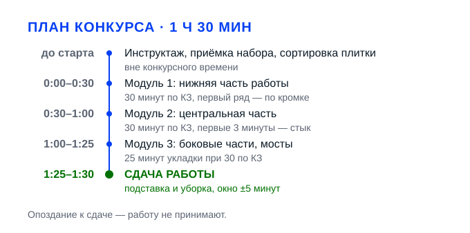
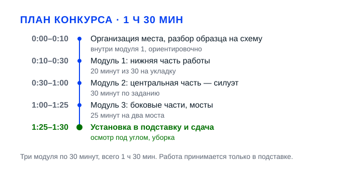
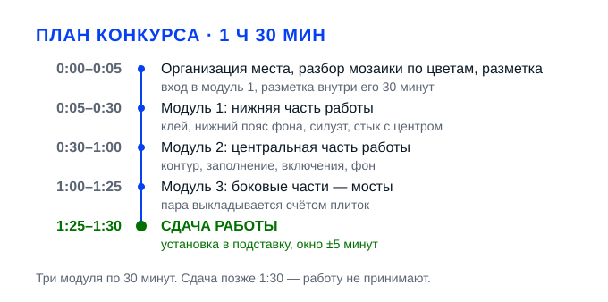

Декоративная мозаика (ФВ)
Задания ниже — официальные файлы «Абилимпикс» (источник: abilympics-russia.ru), разложенные по категориям. Решения написаны по тексту задания, регламенту и критериям оценки; в них указано, что именно проверяет эксперт.
Школьник
14–16 лет, базовый уровень заданияВ официальном файле категории не разделены отдельными разделами — приводим задание целиком; различия по категориям смотрите в таблице модулей.
Пошаговое решение
Задание для школьников одно и укладывается в полтора часа: собрать в мозаичной технике творческую работу «Силуэт родного города» на деревянной основе — по образцу, из цветной стеклянной мозаики на клее ПВА. Работа делится на три модуля по 30 минут: нижняя часть, центральная часть и боковые части с мостами, и в каждом модуле результат формулируется одинаково — выложено в соответствии с образцом. Материалов немного: клей, кисть, основа, плитка и влажные салфетки, поэтому всё решают точность и время. Два риска подстерегают на каждом шаге: ПВА затягивается плёнкой за десять-пятнадцать минут, и плитка, положенная на подсохший слой, не держится; а клей, выдавленный на лицевую сторону, сохнет белым пятном, которое на тёмной плитке видно издалека. Ниже — порядок работы от инструктажа до установки в подставку, с проверками, которые эксперт делает в те же моменты.

Задача 1. Организовать рабочее место и разобрать наборПеред стартом и первые минуты Модуля 1 · 1 ч 30 мин на всё задание
До первого приклеенного ряда у вас есть примерно двадцать минут, которые в конкурсное время не входят: инструктаж, осмотр места, разбор мозаики по цветам, чтение образца и разметка границ трёх частей. Эти минуты решают, побежите ли вы в Модуле 1 искать нужный оттенок синего или сразу начнёте класть плитку. Задание короткое — три модуля по 30 минут, и любая минута, потерянная на поиск материала, вычитается из укладки, а не из проверки.
Действие 1.1. Принять площадку и пройти инструктаж
Шаг 1.1.1
Приходим на площадку заранее и слушаем вводный инструктаж до последней фразы: где аптечка первой помощи, где порошковый огнетушитель ОП-4, кому и как поднимать руку, как выходить из зоны. После инструктажа ставим подпись в журнале — по пункту 6.1.1 конкурсного задания к самостоятельной работе допускаются только участники, прошедшие инструктаж на рабочем месте и проверку знаний по охране труда. Сразу уточняем у наставника два практических момента: где стоит контейнер для боя плитки и можно ли резать сетчатую основу мозаики ножницами прямо на рабочем месте.
Инструктаж — не формальность, а условие допуска: без подписи в журнале участника не выпускают на старт, и все полтора часа задания проходят мимо него. Дальше в работе будут ножницы и клей, и раздел 6.3.3 разбирает их отдельно именно потому, что травма на площадке останавливает не только вашу работу, но и работу всей зоны. Адрес аптечки ищут до первого пореза, а не после него.
Подпись в журнале стоит, и вы можете, не подглядывая в записи, показать рукой на аптечку, огнетушитель и мусорное ведро. Отдельно проверьте, что знаете, куда положите ножницы, когда они станут не нужны: по пункту 6.3.3.1 — в контейнер сомкнутыми концами от себя.
Кивнуть на инструктаже и не запомнить адреса — самая дорогая экономия пяти минут: при порезе участник теряет время на поиск аптечки, а работать с открытой раной и клеем ПВА не дадут, модуль встанет. Вторая ошибка — начать перебирать плитку во время инструктажа: эксперт видит, что участник не слушал, и отмечает это как нарушение порядка на площадке.
Эксперт сверяет журнал до старта, а в первые минуты смотрит на обращение с ножницами: лежат ли они сомкнутыми, направлены ли лезвия от себя. Отмечает и то, поднимает ли участник руку, когда нужен эксперт: через столы на площадке не кричат.
Шаг 1.1.2
Осматриваем место: стол сухой и ровный, площадка не меньше 3,0 м², проход к соседу свободен — по разделу 4 он должен быть 0,6 м, для участника с нарушением зрения 0,7 м, с нарушением опорно-двигательного аппарата 0,9 м. Стул подбираем по росту так, чтобы предплечья лежали на столе, а не висели. Свет ставим так, чтобы тень от руки не падала на заготовку; если вам положена специализированная лупа, она лежит справа от основы, но не в рабочей зоне, иначе вы будете задевать её кистью.
Мозаика — работа на площади в ладонь, и разницу между двумя оттенками синего или щель в миллиметр видно только при ровном свете. В тени собственной руки участник уверен, что шов ровный, а эксперт на расстоянии видит волну. Проход в 0,6 м нужен не для красоты: с кистью, с которой капает клей, никто не должен задевать соседа, иначе плитка летит на пол, а набор на площадке не пополняется.
Сядьте и положите руки: локти на столе, кисти в рабочей зоне, заготовка целиком в поле зрения без наклона головы. Проверьте, что до влажных салфеток и до открытой баночки клея можно дотянуться не вставая и что между вами и основой нет ничего лишнего.
Устроиться на краю стола, положив основу на колени или на подоконник: одно движение — и плитки съезжают, а ПВА на наклонной поверхности течёт вниз и собирается у кромки. Вторая ошибка — поставить клей и салфетки за заготовкой: чтобы дотянуться, приходится тянуться через работу и сдвигать уже уложенные ряды.
Эксперт оценивает организацию места в первые минуты: свободна ли рабочая зона, не лежат ли материалы на краю стола, хватает ли света. Если участник щурится или подносит плитку к лицу, эксперт может предложить лупу или дополнительный свет — это помощь, а не штраф.
Шаг 1.1.3
Раскладываем инструмент по сторонам, а не по центру: баночку с ПВА и кисть ставим со стороны рабочей руки, чуть выше заготовки, влажные салфетки — с другой стороны, чтобы не искать их испачканной рукой. Ножницы кладём справа сомкнутыми, лезвиями от себя. Контейнер для боя и мусорное ведро — на полу у ножки стола, не на столе: стол занят основой, и любой лишний предмет рано или поздно окажется на рисунке.
Порядок на столе — это не эстетика, а скорость: в модуле 30 минут, и поиск кисти под листом с плиткой стоит двух-трёх минут, которых потом не хватит на краевые ряды. Клей, поставленный выше заготовки, не прольётся на рисунок при случайном движении локтя, а ножницы, лежащие лезвиями от себя, — прямое требование пункта 6.3.3.1.
Проверьте взглядом сверху: на столе только основа, клей с кистью, салфетки и отсортированные плитки. Обе руки свободно двигаются в рабочей зоне, ничего не стоит на пути от баночки к заготовке, а мусорное ведро доступно, не вставая с прохода.
Свалить всё в одну кучу у края стола: кисть падает ворсом на пол, клей опрокидывается на основу, и первые пять минут модуля уходят на спасение заготовки вместо укладки. Вторая ошибка — держать ножницы открытыми на столе: задеть их локтем легко, а последствие — порез.
Эксперт смотрит, где лежат ножницы и как стоит открытый клей, в самом начале работы. Ему важно увидеть, что участник понимает: беспорядок на столе — это будущая ошибка на рисунке, а не просто «творческий процесс».
Действие 1.2. Принять и рассортировать мозаику
Шаг 1.2.1
Принимаем набор по перечню из раздела 3: клей ПВА, кисть, деревянная основа, цветная мозаика, влажные салфетки. Основу осматриваем отдельно: плоскость без трещин и сколов, углы целые, лицевая сторона не залита лаком до такой степени, что клей не схватится, на обороте нет влажных пятен. Сверяем основу с технологической картой — в ней указаны исходные данные, габарит и контур рисунка, и если контур не совпадает с образцом, это выясняется сейчас, а не в середине Модуля 2.
Основа — единственная деталь, которую нельзя заменить по ходу работы: мозаику можно доклеить из запаса, а треснувшую или поведённую основу уже не выправить, и вся укладка пойдёт по кривой плоскости со щелями. Технологическая карта в этом задании — источник исходных данных, поэтому расхождение с ней нужно предъявить до старта, пока замена ещё возможна.
Проверьте три вещи: основа лежит на столе без качания, контур читается и совпадает с образцом, на лицевой стороне нет пятен и капель. Если основа качается — подложите ровный лист и добейтесь устойчивости до первой плитки, иначе при нажатии пальцем она будет «играть» и рвать свежий шов.
Начать укладку на качающейся или поведённой основе: клей схватывается, а плоскость уходит, и к концу работы панель стоит в подставке с перекосом. Вторая ошибка — обнаружить, что контур не тот, уже после первого модуля: перекладывать придётся по схватившемуся клею, а это сколы на плитке.
Эксперт проверяет основу до старта вместе с участником: соответствие техкарте, целостность, ровность. Замеченный дефект он фиксирует сразу — так у участника остаётся право на замену.
Шаг 1.2.2
Вскрываем упаковку мозаики и раскладываем плитку по цветам, а не «как лежит»: сначала отделяем цвета нижней части, затем те, что пойдут в центральный силуэт, и отдельно — фоновые и самые тёмные. Внутри одного цвета разбираем по оттенку: светлее и темнее кладём в разные кучки, потому что в образце небо и вода собраны из двух-трёх близких тонов, и если мешать их в одну кучу, рисунок получится рябым.
Сортировка — та операция, которую делают один раз и выигрывают трижды: в каждом модуле по 30 минут, и если нужный оттенок приходится выбирать из общей кучи на ходу, теряется по пять-семь минут на модуль. Плюс сразу видно, хватает ли базового цвета: нехватка выясняется сейчас, когда можно перепланировать фон, а не в конце, когда менять нечего.
Все цвета разложены отдельными кучками в том порядке, в каком будут укладываться, и по каждой кучке видно количество. Если базового цвета явно меньше, чем зон под него в образце, — это повод пересмотреть, чем вы заполните фон, уже сейчас.
Сортировать «по ходу укладки»: рука тянется к общей куче, оттенки путаются, и силуэт теряет чистоту — вместо него получается пёстрое пятно. Вторая ошибка — ссыпать все тёмные тона вместе: чёрный, графит и тёмно-синий в образце разделены, и на панели это видно сразу.
Эксперт подходит к столу в первые минуты и смотрит на разложенную плитку: если цвета разобраны и видно план укладки, он понимает, что участник прочитал образец. Общая куча читается как «сначала начну, потом разберусь».
Шаг 1.2.3
Отбраковываем плитку: сколотые углы, трещины, плитки с острым, как лезвие, краем скола, а также те, у которых повреждена лицевая сторона, откладываем в отдельную ёмкость — они пойдут в середину крупных зон фона, где скол закроется соседями. Острые сколы не проверяем пальцем: провести подушечкой по кромке достаточно, чтобы порезаться, а по разделу 6.3.3 такие плитки на площадке опасны.
Брак, положенный в рисунок, виден эксперту на расстоянии: скол на лицевой стороне читается как дырка в силуэте, а трещина при нажатии расходится и колет соседние плитки. Запас нужен и на неизбежные потери: при подгонке краевых рядов часть плитки не подойдёт по размеру, и хорошо, если замена лежит рядом, а не ищется по всей площадке.
Отложенный брак лежит отдельно от рабочих кучек, и в нём нет плиток с острыми кромками, которые вы будете брать пальцами. Рабочих плиток базового цвета осталось не меньше, чем зон под него в образце, — иначе пересматриваем план фона прямо сейчас.
Класть в рисунок плитку со сколом «на глаз незаметно»: под ПВА скол темнеет и выделяется сильнее, чем на сухой плитке, а переклеить её без следа уже не получится. Вторая ошибка — брать плитку с острым краем без опаски и порезать палец в первом же модуле.
Эксперт обращает внимание, как участник обращается с плиткой: берёт ли её за грани, не сыплет ли на пол. Плитка на полу — это и скользко, и потеря материала, а по разделу 6.4.1 к концу работы пол должен быть чистым.
Действие 1.3. Прочитать образец и разметить заготовку
Шаг 1.3.1
Кладём заготовку по центру рабочего места и определяем ориентацию: где верх работы, где низ, который войдёт в паз подставки. Сверяемся с образцом и технологической картой — у работы есть лицевая сторона, и укладывать плитку нужно именно на неё; если на основе есть заводская наклейка или технологическая метка, она и подсказывает, где верх. Дальше основу не крутим: сдвиг на 90 градусов посреди модуля — это гарантированный перекос всей композиции.
Ориентация задаёт всё остальное: нижняя часть с водой и берегом, центральная с силуэтом и боковые с мостами имеют разный рисунок, и перевёрнутая основа превращает силуэт города в отражение. Кроме того, низ работы уходит в подставку, поэтому он должен быть собран с запасом по кромке — иначе при установке плитка скалывается.
Основа лежит симметрично относительно вас, метка верха совпадает с верхом на образце, расстояние от края стола до основы одинаково слева и справа. Проверьте это один раз и больше основу не двигайте — только придерживайте ладонью у дальнего края.
Начать укладку, не определив верх: половина работы окажется перевёрнутой, и переделывать её придётся по схватившемуся клею, с риском сколоть соседнюю плитку. Вторая ошибка — крутить основу под руку: линии рисунка уезжают относительно кромки, и на подставке панель стоит криво.
Эксперт в начале первого модуля сверяет положение основы с образцом: совпадает ли верх, не перевёрнута ли работа. Это первое, что он проверяет, потому что дальше исправлять уже поздно.
Шаг 1.3.2
Разбираем образец на зоны и считаем: сколько плиток в ряду по нижней кромке, сколько рядов занимает вода, где начинается силуэт, какой ширины мосты. Считаем не «примерно», а по плиткам — и записываем цифры на свободном поле техкарты или на отдельном листе, который не запачкается клеем. Такой пересчёт сразу показывает, реально ли уложить зону за 30 минут: если в нижней части сорок плиток в ряд, а в руке одна кисть, темп надо планировать заранее.
Образец — единственный критерий, по которому оценивают результат: в таблице 2.2 результат каждого модуля сформулирован как «выложена ... часть работы в соответствии с образцом». Значит, расхождение по количеству рядов и по цвету — это не «творческая интерпретация», а невыполненное задание. Пересчёт по плиткам превращает образец из картинки в план работы.
У вас на руках цифры: ряды, количество плиток по цветам, ширина мостов. Сверьте их с площадью основы из техкарты — цифры должны сходиться. Если не сходятся, ошибка в подсчёте, и лучше найти её на бумаге, чем на середине панели.
Смотреть на образец «в целом» и начать класть: к середине модуля выясняется, что силуэт занимает на два ряда больше, и он либо не влезает, либо получается сплюснутым. Вторая ошибка — держать образец под рукой, но не смотреть в него, полагаясь на память.
Эксперт видит, сверяется ли участник с образцом по ходу работы. Участник, который периодически откладывает кисть и смотрит на образец, читается как профессионал; тот, кто ни разу на него не взглянул, обычно и расходится с ним сильнее всех.
Шаг 1.3.3
Размечаем границы трёх частей — нижней, центральной и боковых: именно по этим границам идут модули по 30 минут. Линии ставим тонко и только там, где пройдёт шов между плитками, чтобы разметка ушла под стык; под прозрачные плитки линии не заводим — они просвечивают и портят цвет. Стык планируем по границе цветовых зон, а не по удобству: у воды и берега есть естественная линия, по ней и делим.
Граница модуля — это ещё и граница времени: не разделив работу заранее, участник начинает Модуль 2 с середины силуэта и в Модуле 3 обнаруживает, что мосты и фон не влезают в оставшиеся 30 минут. Разметка по цветовым зонам позволяет закончить каждую часть так, что она выглядит цельной, даже если следующий модуль начнётся с задержкой.
На основе видны три зоны с понятными границами, и каждая укладывается в 30 минут при спокойном темпе. Проверьте: линия стыка проходит по шву, а не через середину плитки, и её видно, не поднося основу к глазам.
Делить работу «пополам по площади», не глядя на рисунок: граница пройдёт через силуэт здания, и в конце модуля вы бросите недоделанную часть, потому что она не читается как законченный фрагмент. Вторая ошибка — жирные линии карандашом, которые потом видно между плитками.
Эксперт проверяет, совпадает ли порядок работы участника с логикой задания: нижняя часть, центральная, боковые. Если участник начал с мостов, дальше он почти наверняка не успеет закончить силуэт.
Задача 2. Выложить нижнюю часть работыМодуль 1 · 30 минут · нижняя часть по образцу
Первый модуль — самый ответственный, потому что он задаёт геометрию всей панели: от того, насколько ровно ляжет первый ряд и выдержан ли шаг шва, зависит, встанут ли потом центральная часть и мосты без перекосов и разрывов. Тридцать минут делятся примерно так: пять на клей и кисть, двадцать на укладку, три-четыре на проверку и чистку лицевой стороны. Задача модуля сформулирована в таблице 2.2 коротко — выложить нижнюю часть в соответствии с образцом, и это значит, что ни вкусовые замены цвета, ни «примерно такая же» геометрия не зачтутся.
Действие 2.1. Подготовить клей и первый участок
Шаг 2.1.1
Открываем баночку ПВА и проверяем клей: он должен быть однородным, без комков, загустевшей плёнки сверху и расслоения на воду и белую массу. Если сверху образовалась плёнка, её снимаем, а клей перемешиваем кистью или палочкой до однородности. Густота рабочая, примерно как жидкая сметана: с кисти он стекает медленно, а не льётся струёй. Отливаем немного в крышку или в отдельную розетку — столько, сколько уйдёт за пятнадцать минут, а банку сразу закрываем.
Старый или расслоившийся ПВА схватывает неравномерно: одна плитка встаёт намертво, соседняя «играет» через час, и на подставке панель щёлкает. Клей, отлитый порциями, не собирает пыль и не затягивается плёнкой в открытой банке, а главное — вы не окунаете кисть в общую массу, поэтому в банку не попадает плиточная пыль и крошка, которая потом видна белыми точками в швах.
Клей однородный, без сгустков, тянется за кистью ровной струйкой и не рвётся комками. В рабочей розетке клея не больше, чем на треть высоты, иначе кисть будет брать слишком много и клей полезет на лицевую сторону плитки.
Работать клеем, который стоял открытым с прошлого занятия и покрылся плёнкой: верхний слой уже не схватывается, и первые десять плиток приходится переклеивать. Вторая ошибка — макать кисть прямо в банку, набрав на неё крошку: швы получаются грязными, а убрать её из-под уже прижатой плитки невозможно.
Эксперт смотрит на клей в начале модуля: закрыта ли банка, отлита ли порция, чистая ли кисть. Работа «из общей банки с грязной кистью» — типичный признак того, что панель к концу будет в белых потёках.
Шаг 2.1.2
Берём кисть и проверяем ворс: он не должен лезть, комкаться и оставлять на основе полосы. Обжимаем ворс о край розетки, чтобы с него не капало, и держим кисть как карандаш — тогда кисть идёт по основе с одинаковым нажимом. Клей набираем на треть ворса, а не до ручки: полная кисть оставляет на основе лужи, и плитка в них плавает. Если ворс всё же лезет, кисть меняем сразу: отдельные волоски остаются в клеевом слое и потом видны под плиткой.
Кисть в этом задании — единственный инструмент, которым регулируется толщина клеевого слоя, а от неё зависит всё остальное: тонкий слой держит плитку и не выходит в шов, толстый выдавливается между плитками и сохнет белой полосой на лицевой стороне. Правильный хват даёт ровный слой за один проход, а не за три, и экономит минуты в коротком модуле.
Проведите кистью по краю основы: след должен быть ровным, полупрозрачным, без капель по краям мазка. Если клей собирается в валик за ворсом — на кисти его слишком много, снимите о край и попробуйте снова.
Макать кисть по ручку и размазывать лужи: клей выступает в швы, и вытирать его приходится уже из-под прижатых плиток, размазывая по лицевой стороне. Вторая ошибка — держать кисть как ложку, вертикально: ворс скребёт основу, слой получается полосатым.
Эксперт замечает манеру работы кистью: ровный мазок без подтёков виден сразу. Если участник возит кистью по одному месту пять раз, слой получается толстым, и это проявится на швах к концу модуля.
Шаг 2.1.3
Наносим клей на нижнюю часть основы тонким слоем — примерно 0,5–1 мм, полосами сверху вниз, не заходя на соседние зоны. Мажем не всю нижнюю часть сразу, а участками, которые закроем плиткой за пять-семь минут: например, полосу шириной в пять-шесть рядов от нижней кромки. Границу мазка ведём по линии разметки, чтобы клей не попал туда, где будет стык с центральной частью.
ПВА на воздухе затягивается плёнкой за десять-пятнадцать минут, и плитка, положенная на подсохшую плёнку, держится плохо: она прилипает к поверхности, но не к основе, и отваливается при первом же нажатии. Участками работа идёт быстрее, потому что не приходится возвращаться и перемазывать. А клей, заведённый за линию стыка, выступит на границе модулей и помешает ровно состыковать части.
Слой просвечивает, основа под ним видна, но не сухая; мазок не имеет пропусков и наплывов. Проведите пальцем у края мазка — клей должен быть ещё сырым и липким, а не тянуться плёнкой. Если плёнка уже появилась, участок перемазываем тонким слоем поверх, а не кладём плитку на сухое.
Намазать всю нижнюю часть сразу «чтобы не возвращаться»: пока дойдёте до верхних рядов, низ уже затянется, и половина плитки встанет на плёнку. Вторая ошибка — слой в два-три миллиметра «для надёжности»: клей выдавится в швы и высохнет белым, а убрать его из глубины шва кистью не получится.
Эксперт может провести пальцем по краю мазка и посмотреть, не заходит ли клей на соседнюю зону. Ровная граница мазка по разметке — признак того, что участник понимает, как будет стыковать части.
Действие 2.2. Выложить нижнюю часть по рисунку
Шаг 2.2.1
Начинаем с первого ряда по нижней кромке основы: это базовая линия, от которой считаются все остальные. Плитки ставим с отступом 1,5–2 мм от края, прижимая их к одной воображаемой линии, и через каждые пять-шесть плиток отводим глаз и смотрим вдоль ряда. Ряд должен лечь первым именно потому, что кромка основы ровная: если начать с середины, низ потом придётся подгонять по одной плитке.
Нижняя кромка уходит в подставку, и это самое уязвимое место работы: плитка, положенная заподлицо с краем, при установке скалывается, а ряд, посаженный косо, виден на подставке как наклонная полоса. Ровный первый ряд задаёт шаг шва на всю нижнюю часть и экономит время: следующие ряды кладутся уже «по линейке» из соседних плиток.
Проверьте ряд вдоль: отойдите на полшага и посмотрите на линию шва с торца основы. Она должна быть прямой, без ступенек в одну плитку, отступ от кромки — одинаковый по всей длине. Если ряд «повело», лучше снять последние пять плиток и переложить сразу, пока клей не схватился.
Класть первый ряд от середины к краям: к кромке приходит половинчатая плитка, ряд получается с уступом, и дальше вся нижняя часть идёт волной. Вторая ошибка — прижать плитку к самому краю, без отступа: при установке в подставку кромка крошится, и работа выглядит бракованной.
Эксперт подходит к столу в первые десять минут модуля и смотрит именно на первый ряд: ровно ли он лёг и выдержан ли отступ от кромки. По этому ряду он уже понимает, какой будет вся панель.
Шаг 2.2.2
Дальше заполняем крупные однотонные зоны нижней части — те, что по образцу читаются как сплошное поле. Кладём блоками по четыре-шесть плиток от угла зоны, двигаясь к её середине, и держим одну схему на всю работу: либо сетку, когда швы идут в крест, либо укладку со сдвигом, когда каждый следующий ряд смещён на половину плитки. Смешивать две схемы в одной панели нельзя — граница сразу бросается в глаза.
Крупные поля занимают больше всего площади, и именно на них набирается темп: рука привыкает, шов держится сам. Единая схема укладки нужна не для красоты, а для читаемости: в образце швы образуют ритм, и если в одной зоне он сеткой, а в соседней со сдвигом, силуэт начинает «дрожать». Блоками работать быстрее, чем по одной плитке, и при этом легче не сбить шаг.
Посмотрите на зону прищурившись: поле должно читаться как ровная поверхность, без светлых и тёмных клиньев. Шов между блоками не должен быть шире шва внутри блока — это самая частая примета спешки. Особенно смотрите на стык двух блоков: там шов расширяется чаще всего.
Гнать укладку «как получится», лишь бы закрыть площадь: блоки стыкуются со швом в три миллиметра, и в готовой панели видны прямоугольники. Вторая ошибка — набирать зону по диагонали от угла к углу, тогда у края остаётся клин, который приходится закрывать обрезками.
Эксперт оценивает ритм швов на расстоянии: ровная сетка читается как аккуратная работа, сбитый шаг — как спешка. Смотрит он на это уже в середине модуля, когда закрыта приличная площадь.
Шаг 2.2.3
Шов между плитками держим 1–1,5 мм: на глаз это тонкая ровная линия, в несколько раз тоньше самой плитки. Плитку ставим на место и прижимаем пальцем через влажную салфетку две-три секунды, пока из-под неё не перестанет выступать клей. Прижали — и не двигаем: сдвиг после прижатия выдавливает клей в шов и смазывает уже выдержанную линию. Палец ведите от середины плитки к краям, чтобы клей выходил равномерно со всех сторон.
Шов — это то, что видит эксперт в первую очередь: рваный шов в три миллиметра читается как небрежность, а слишком плотная укладка без шва даёт «мыло» вместо силуэта. Прижатие через салфетку нужно по двум причинам: палец не оставляет отпечатка на лицевой стороне, а выступивший клей сразу уходит в ткань, а не размазывается по плитке.
Проведите ногтем по шву поперёк: он должен быть одинаковым по всей длине и не заполненным клеем доверху. Плитка не шатается под пальцем и не «играет» вбок. Если между двумя плитками клей вышел наверх — уберите его уголком влажной салфетки, пока он сырой.
Прижимать плитку ладонью и возить её по основе, «чтобы села ровно»: клей выдавливается по всем четырём сторонам, и шов получается грязным. Вторая ошибка — ставить плитку вплотную к соседней: шва нет, и рисунок сливается в одноцветное пятно.
Эксперт смотрит на шов в косом свете — тогда видно, ровный он или гуляет. Отдельно проверяет, нет ли под плиткой пузыря: если плитка стоит с наклоном, эксперт это заметит по блику.
Шаг 2.2.4
Краевые плитки подгоняем по месту: если мозаика набрана на сетке, режем ножницами сетку по разметке, а не ломаем плитку — стекло от ножниц крошится, и осколок летит в сторону. Ножницы держим лезвиями от себя, на уровне груди, руки прижаты к телу; если нужно отвлечься или встать, ножницы кладём на стол сомкнутыми, а не берём с собой. Крайнюю плитку, которая не встаёт целиком, подбираем по размеру из запаса, а не выламываем по кусочку.
Кромка — вторая после шва зона, которую видно на подставке: рваный край из кусочков читается как брак, а ровный ряд целых плиток держит всю панель. Требования к ножницам в разделе 6.3.3.1 написаны не для порядка: стеклянная мозаика колется, и осколок, отлетевший от лезвия, легко попадает в глаз соседу по площадке.
Кромка ровная, без торчащих осколков и без плиток, выступающих за контур основы. Проведите по торцу пальцем — он должен быть гладким. Ножницы после работы лежат сомкнутыми, лезвиями от вас, а обрезки сетки собраны в контейнер, а не на столе.
Ломать плитку руками или стучать по ней, чтобы «подошла по размеру»: скол идёт по лицевой стороне, и плитка становится браком. Вторая ошибка — оставить ножницы открытыми на столе среди плитки: их не видно под салфеткой, и вы задеваете их локтём.
Эксперт следит за ножницами весь модуль: направлены ли лезвия от себя, кладут ли их сомкнутыми. Это отдельный пункт охраны труда, и нарушение фиксируется сразу, независимо от того, как выглядит работа.
Шаг 2.2.5
Сразу убираем клей с лицевой стороны: пока он сырой, снимаем его влажной салфеткой движением от шва к краю плитки, а не круговыми движениями — иначе размажем по всей поверхности. Через минуту проходим это место сухой салфеткой насухо. Салфетку меняем часто: влажная, с налипшей крошкой, она работает как тёрка и царапает лицевую сторону. Особенно тщательно протирайте у края основы: там клей выходит чаще всего.
ПВА на стекле сохнет прозрачной, но только в тонком слое: капля в полмиллиметра даёт белое пятно, которое на тёмной плитке видно как снег, и убрать его после схватывания можно только ногтем, рискуя сколоть плитку. Влажная уборка в процессе занимает секунды, а разбор потёков в конце модуля — минуты, которых нет.
Посмотрите на панель в косом свете: блик должен идти по стеклу ровно, без мутных пятен и радужных разводов. Проведите пальцем по шву — он должен быть сухим на поверхности, а клей виден только в глубине.
Тереть высохший клей сухой тряпкой: он не снимается, зато собирает ворс, и к нему липнет плиточная крошка. Вторая ошибка — вытирать клей одной салфеткой весь модуль: через десять минут она размазывает клей обратно по чистым плиткам.
Эксперт проверяет лицевую сторону на просвет и в косом свете. Белые разводы от ПВА — одна из самых заметных ошибок именно потому, что сам участник их не видит: он смотрит на рисунок, а не на поверхность.
Действие 2.3. Проверить нижнюю часть и закрыть модуль
Шаг 2.3.1
Отходим от стола на полтора метра и смотрим на нижнюю часть прищурившись: силуэт и цвет должны читаться с этого расстояния так же, как на образце. Сравниваем с образцом по трём вещам — количество рядов, границы цветовых зон, направление швов. Вблизи глаз привыкает и перестаёт видеть перекос, а с расстояния он проявляется сразу: именно так работу будет смотреть эксперт.
Результат модуля в таблице 2.2 сформулирован как соответствие образцу, и проверять себя нужно теми же глазами, что и эксперт: с расстояния, целиком, а не по фрагменту под лупой. Участник, который ни разу не отошёл от стола, обычно уверен, что всё ровно, и очень удивляется оценке. Проверка занимает минуту и спасает весь модуль.
С полутора метров видно: силуэт читается, цветовые зоны на своих местах, швы идут в одном направлении, кромка ровная. Если какая-то зона «выпирает» по цвету, это заметно именно отсюда, а не вблизи. Заодно проверьте, не осталось ли неприклеенных плиток у самого края.
Проверять работу, наклонившись к самому столу: в таком положении виден только фрагмент в ладонь, и общая композиция ускользает. Вторая ошибка — отойти и увидеть перекос, но не исправить его, потому что «уже приклеено»: пока клей сырой, плитку можно снять и поставить заново.
Эксперт тоже отходит от стола, когда оценивает: он смотрит на панель целиком и сравнивает с образцом. Если участник не отошёл ни разу, эксперт почти наверняка найдёт то, что участник не видел.
Шаг 2.3.2
Проверяем схватывание: нажимаем на несколько плиток в разных концах нижней части по диагонали — они не должны «играть» и сдвигаться. Обнаруженные шаткие плитки снимаем, убираем загустевший клей и ставим заново на свежий. Затем даём работе постоять десять-пятнадцать минут, не наклоняя и не поднимая основу: ПВА набирает первичную прочность как раз за это время.
Плитка, которая «играет», отвалится при установке в подставку — и хорошо, если на столе, а не на полу. Первичное схватывание ПВА занимает десять-пятнадцать минут, полную прочность клей набирает за сутки, поэтому всю оставшуюся работу основу держат только за торцы и не переворачивают лицом вниз. Это правило относится и к переноске в конце конкурса.
Плитки не шатаются, при нажатии нет хруста отслоения, клей в швах подсох. Основа лежит на столе ровно, вы её не поднимали за лицевую сторону. Если плитка всё-таки шатается — прижмите её ещё раз через салфетку, пока клей не схватился окончательно.
Поднять основу за край, чтобы посмотреть, «как держится»: свежая кладка ползёт, и вы получаете сдвинутые ряды по всей площади. Вторая ошибка — проверять прочность ногтем, поддевая плитку: под ней образуется пузырь, и она отходит.
Эксперт может провести пальцем по кладке в конце модуля. Ему важно увидеть, что участник не трогает готовую поверхность руками и не переворачивает основу: это признак понимания, как работает клей.
Задача 3. Выложить центральную часть работыМодуль 2 · 30 минут · центральная часть по образцу
Центр — смысловая середина композиции: именно здесь находится силуэт, ради которого делается работа, и именно сюда эксперт смотрит первым. Второй модуль сложнее первого: нужно не просто закрыть площадь, а попасть в геометрию — вертикали силуэта должны стоять ровно, границы цветовых зон совпасть с образцом, а стык с нижней частью пройти по одному шву без уступа. Тридцать минут распределяются так: три-четыре на стык и клей, двадцать на укладку, остальное на проверку и чистку.
Действие 3.1. Состыковать центральную часть с нижней
Шаг 3.1.1
Перед тем как мазать клей, проверяем стык с нижней частью: шов на границе должен продолжать швы нижней части, а не сбиваться на половину плитки. Прикладываем сухую плитку в первый ряд центра и смотрим, совпадает ли шаг с рядом нижней части. Если шаг не совпадает, сдвигаем весь будущий ряд на половину плитки сразу, на сухую, а не после приклеивания.
Стык — самое заметное место панели: сбитый шаг на границе двух модулей читается как трещина поперёк всей работы, и никакая аккуратность внутри зон это не исправит. Проверка на сухую занимает две минуты, а переделка стыка по схватившемуся клею — десять, и с риском сколоть уже уложенный ряд нижней части.
Проведите пальцем по линии стыка: она должна быть ровной, а швы по обе стороны — продолжать друг друга. Расстояние между последним рядом низа и первым рядом центра одинаковое по всей длине, без клина на одном конце.
Начать центр без проверки шага: к середине ряда выясняется, что плитки идут вразнобой, и единственный выход — сдвинуть ряд, оставив у одного края шов в три миллиметра. Вторая ошибка — мазать клей вплотную к нижней части: он попадает на лицевые кромки готовых плиток и сохнет белой полосой ровно по стыку.
Эксперт в начале второго модуля подходит и смотрит на стык: ровно ли продолжается шов. Это первое, что он проверяет, потому что дальше стык закрыть уже нельзя.
Шаг 3.1.2
Клей на центральную часть наносим порциями, по форме зоны: сначала узкой полосой вдоль стыка, затем пятнами по будущим крупным полям. Кисть ведём от стыка внутрь зоны, а не наоборот, чтобы не затащить клей на уже готовый ряд. Слой тот же — 0,5–1 мм, полупрозрачный, без пропусков у самой границы: именно у границы клей чаще всего не доходит, и первые плитки центра встают на сухую основу.
У стыка клей нужен особенно аккуратно: недомазанный участок даёт плитку, которая отходит ровно по границе модулей, а перемазанный — белую полосу в шве. Движение кистью от стыка внутрь нужно для того, чтобы ворс не задевал кромки готовых плиток: ПВА на лицевой стороне сохнет плёнкой, которую потом видно на просвет.
Слой у стыка сплошной, без сухих проплешин, но и без наплыва на готовый ряд. Проведите кистью по границе и посмотрите с торца: линия клея должна идти ровно по разметке, не заходя на шов. Если у стыка видна сухая основа, участок перемазываем до укладки первого ряда.
Мазать клей на всю центральную часть сразу: пока дойдёте до середины, у стыка он уже затянулся, и первые ряды приходится перемазывать. Вторая ошибка — размазать клей через шов на нижнюю часть, а потом вытирать его, размазывая по готовой кладке.
Эксперт смотрит на границу мазка: ровная линия клея по разметке показывает, что участник работает по плану, а не «примерно там». Отдельно он отмечает, не заходит ли клей на уже готовый ряд нижней части.
Шаг 3.1.3
Определяем порядок укладки центра и держим его до конца модуля: сначала главный контур силуэта — те линии, которые задают форму, — потом заполнение фона вокруг него. Внутри контура идём сверху вниз, ряд за рядом, чтобы нижний ряд всегда опирался на уже готовый. Если силуэт симметричный, начинаем от осевой линии и ведём в две стороны одинаковыми блоками.
Главный контур первым — это страховка на случай нехватки времени: если за пять минут до конца модуля не закрыт фон, работа всё равно читается как силуэт города, а не как цветное пятно. Обратный порядок — фон сначала — приводит к тому, что остаётся недоделанным именно то, ради чего делается композиция. Укладка сверху вниз не даёт наползать рукой на свежие ряды.
К концу первой половины модуля главный контур должен быть выложен полностью. Проверьте это по часам, а не по ощущению: если через пятнадцать минут контур закрыт наполовину, темп надо поднимать — класть блоками, а не по одной плитке.
Начать с фона «чтобы размяться»: время уходит, а силуэт остаётся на последние пять минут, и центральная часть не соответствует образцу. Вторая ошибка — класть контур, двигаясь то сверху, то снизу: рука задевает свежие плитки, и они съезжают.
Эксперт замечает порядок работы: контур, потом фон — это профессиональный порядок. Участник, который хаотично закрашивает площадь, обычно и не успевает.
Действие 3.2. Выложить силуэт и фон центра
Шаг 3.2.1
Кладём вертикальные элементы силуэта — то, что в образце читается как стены, опоры, стволы: каждую вертикаль ведём строго вниз по одной линии, проверяя себя по краю основы и по разметке. Плитки в вертикали ставим одну под другой, не позволяя линии уходить в сторону на полплитки: сдвиг в один миллиметр на плитку к пятому ряду превращается в клин. Горизонтали силуэта ведём так же — по одной линии, с одинаковым шагом шва.
Силуэт города держится на вертикалях: любая наклонная стена сразу читается как небрежность, даже если цвет и количество плиток совпадают с образцом. Ровная вертикаль — это то, что эксперт проверяет, отойдя на два метра, и то, что невозможно исправить после схватывания клея. Проверка по краю основы работает потому, что край у заготовки ровный по определению.
Приложите к вертикали ровный край листа или посмотрите вдоль неё одним глазом: линия должна быть прямой, без ступенек. Ширина шва внутри вертикали одинаковая сверху донизу, плитки не выступают из линии ни влево, ни вправо.
Класть вертикаль «на глаз», подправляя каждую плитку отдельно: линия уходит в сторону, и силуэт получается пьяным. Вторая ошибка — выкладывать вертикаль сразу на всю высоту без промежуточной проверки: ошибка в нижних рядах обнаруживается, когда сверху уже двадцать плиток.
Эксперт смотрит на геометрию силуэта в первую очередь: вертикальность и шаг шва. Именно по ним он понимает, работал участник по разметке или импровизировал.
Шаг 3.2.2
Заполняем фон вокруг силуэта, начиная от границы контура и двигаясь к краю зоны: так последний ряд всегда ложится ровно по краю, а не клином. Цвет фона берём из образца, а не «похожий»: если в образце фон собран из двух оттенков, раскладываем их с чередованием, а не пятнами. Плитку у контура ставим после контура и никогда не подсовываем под него. У самого края зоны плитку подбираем по размеру, а не выламываем.
Фон задаёт контраст, на котором силуэт читается: заменить оттенок на «примерно такой же» — значит потерять контраст, и силуэт сольётся с небом. Укладка от контура к краю нужна ещё и потому, что контур уже выложен и служит линейкой: шов можно вести по нему. Плитка, подсунутая под контур, сдвигает его и ломает уже выдержанную вертикаль.
Посмотрите на зону прищурившись: силуэт должен отделяться от фона по всей длине, без мест, где цвета сливаются. Шов между контуром и фоном не шире остальных, и в нём нет выступающего клея. Проверьте это на двух-трёх участках, а не в одном месте у стыка.
Брать фон «на тон светлее или темнее» и надеяться, что сойдёт: на панели контраст пропадает, силуэт становится вялым, и работа теряет главное — узнаваемость. Вторая ошибка — закрашивать фон, заезжая на контур, и потом сдвигать контурные плитки в сторону.
Эксперт сравнивает оттенки с образцом, держа их рядом. Замена цвета на близкий фиксируется как несоответствие, даже если технически кладка идеальна. Если оттенок отличается хотя бы на тон, он это увидит рядом с образцом.
Шаг 3.2.3
Мелкие детали — окна, проёмы, тонкие линии — выкладываем после того, как закрыты крупные поля, и только те, что есть в образце: каждая деталь должна попасть на своё место по счёту плиток от края зоны. Если деталь не встаёт целиком, ставим плитку меньшего размера из запаса, а не выламываем кусок. Мелкую плитку берём пинцетом или двумя пальцами за грани, чтобы не пачкать лицевую сторону клеем.
Детали делают силуэт узнаваемым, но они же и самые рискованные: одна лишняя или съехавшая деталь разрушает образ, а снять её с уже подсохшего клея трудно. Порядок «сначала крупное, потом мелкое» ещё и экономит время: если мелкие элементы остаются на последние минуты, ими можно пожертвовать без потери общей читаемости.
Детали стоят там же, где в образце: проверьте по счёту плиток от края зоны и по линии ряда. Расстояние между однотипными деталями одинаковое, они не «съезжают» к одному краю. Особенно внимательно — детали, которые стоят парами: они должны совпадать по высоте.
Придумывать детали, которых нет в образце: лишние окна превращают силуэт в решётку, и работа перестаёт соответствовать заданию. Вторая ошибка — класть мелкие детали первыми, а потом подгонять под них крупные поля.
Эксперт сверяет детали с образцом по расположению, а не по количеству «на глаз». Сдвиг детали на две плитки уже виден. Лишнюю деталь, которой нет в образце, он тоже фиксирует: это расхождение с заданием.
Шаг 3.2.4
Держим пропорции: перед началом каждой крупной формы отмеряем её по плиткам — сколько плиток в высоту и сколько в ширину по образцу, — и работаем по этим цифрам. Если по ходу выясняется, что форма выходит шире, лучше сразу пересчитать, чем тянуть её до края и упереться в границу зоны. Симметричные элементы кладём попарно: одну сторону, затем другую, сверяя по счёту плиток.
Пропорции — то, что отличает силуэт города от набора прямоугольников: даже правильные по цвету и шву формы, растянутые на две плитки, перестают читаться. Счёт по плиткам надёжнее глаза, потому что глаз адаптируется к тому, что уже выложено, и перестаёт замечать растяжение. Попарная укладка симметричных элементов не даёт уехать всей композиции в одну сторону.
Сверьте свои цифры с образцом ещё раз, стоя у стола: высота и ширина каждой формы совпадает в плитках. Отойдите на полтора метра — пропорции силуэта должны читаться так же, как на образце, без ощущения сплюснутости.
Растянуть силуэт «чтобы заполнить зону»: композиция выглядит приплюснутой, и это заметно даже неспециалисту. Вторая ошибка — класть симметричные элементы по очереди, через полчаса: вторая сторона получается на плитку выше или ниже.
Эксперт сравнивает панель с образцом на расстоянии: пропорции — первое, что бросается в глаза раньше, чем шов и цвет. Сплюснутый или растянутый силуэт он замечает раньше, чем неровный шов.
Шаг 3.2.5
Чистим лицевую сторону по ходу, не дожидаясь конца модуля: каждые пять-семь плиток убираем свежий клей влажной салфеткой, затем проходим сухой. Отдельно проверяем швы у контура: там клей выступает чаще всего, потому что плитку прижимают у края. Салфетку складываем вчетверо и меняем, как только она начинает оставлять разводы. Тёмные плитки протираем первыми: на них разводы видны сильнее всего.
ПВА, высохший на стекле, оставляет матовое белое пятно, которое на тёмной плитке видно как снег, и снять его можно только механически — с риском сколоть кромку. У контура риск двойной: клей с контурных плиток попадает ещё и на фон, и пятно получается широким. Уборка по ходу занимает секунды, разбор — минуты, которых в модуле нет.
Проведите по панели лучом света под углом: блик ровный, без мутных островков и радужных разводов. Пальцем по шву — сухо, клей только в глубине. На тёмных плитках не осталось белых точек. Отдельно посмотрите на панель сбоку, почти вдоль поверхности.
Вытирать клей одной салфеткой весь модуль: она размазывает его обратно и оставляет тонкую плёнку по всей площади. Вторая ошибка — тереть шов ногтем, чтобы «выковырять» клей: кромка плитки скалывается, и шов становится рваным.
Эксперт проверяет поверхность в косом свете, а не только рисунок. Разводы от клея он видит сразу, потому что смотрит на панель под углом. Заляпанная лицевая сторона перекрывает даже удачный рисунок.
Действие 3.3. Закрыть модуль и оценить остаток времени
Шаг 3.3.1
Проверяем центральную часть тем же способом, что и нижнюю: отходим на полтора-два метра, прищуриваемся, сравниваем с образцом по силуэту, цвету и количеству рядов. Отдельно смотрим границы модулей — стык с нижней частью и линию, с которой начнутся мосты: они должны читаться как естественные границы рисунка, а не как шов между двумя разными работами.
Центр оценивают по соответствию образцу, и проверка с расстояния — единственный способ увидеть то же, что видит эксперт. Стыки модулей — самое уязвимое место: даже при аккуратной кладке внутри зон именно на границах появляются уступы, и если их не заметить сейчас, в третьем модуле исправлять будет нечем.
Силуэт читается целиком, цветовые зоны совпадают с образцом, стыки ровные, шов не гуляет. Если какая-то часть выбивается — отметьте её для себя и решите сразу: исправлять сейчас или оставить, потому что впереди мосты и фон по краям.
Оценивать центр, не отходя от стола: вблизи видно только фрагмент, и силуэт кажется правильным, хотя целиком он скошен. Вторая ошибка — заметить проблему и отложить на «потом», когда клей уже схватится.
Эксперт делает свой проход по площадке между модулями и фиксирует состояние работы: что закрыто, что нет. Участник, который в этот момент тоже проверяет свою панель с расстояния, выглядит убедительно.
Шаг 3.3.2
Смотрим на часы и считаем остаток: в третьем модуле 30 минут, из них последние пять уйдут на установку в подставку и уборку. Значит, на укладку боковых частей и фона остаётся около двадцати пяти минут. Если после второго модуля остались недоклеенные места в центре, доклеиваем их в первую очередь — но не больше пяти минут, иначе мосты не успеют. Часы на площадке видны, и сверяться с ними — норма, а не суетливость.
Правильный расчёт времени — часть задания: три модуля по 30 минут идут подряд, и опоздание к сдаче означает, что работу не принимают. Остаток времени нужно знать точно, а не «примерно», потому что от него зависит, будете ли вы класть фон по краям мелкими деталями или крупными полями. Пять минут резерва на подставку и уборку — не роскошь, а обязательная строка плана.
Вы называете точное время до конца модуля, и у вас есть решение: что доклеить, что упростить, чем закончить. Все шаткие плитки в центре поджаты, клей с лицевой стороны убран, рабочее место не завалено обрезками.
Доклеивать центр до последней плитки и влезть в третий модуль без запаса: мосты остаются недоделанными, а именно они дают композиции законченность. Вторая ошибка — не смотреть на часы вовсе и узнать о конце модуля от эксперта.
Эксперт объявляет время модулей и следит, чтобы участники переходили к следующей части. Участник, который сам сверяется с часами, реже попадает в ситуацию «не успел».
Задача 4. Выложить боковые части работы — мостыМодуль 3 · 30 минут · боковые части по образцу
Третий модуль — финальный и самый плотный по времени: тридцать минут, из которых пять обязательно уйдут на установку работы в подставку и уборку места. Боковые части с мостами задают композиции рамку и соединяют её с центром, поэтому здесь важны две вещи — симметрия левой и правой стороны и точная стыковка с уже выложенным силуэтом. Именно в этом модуле чаще всего начинают спешить и портят кромку, которая видна на подставке с торца.
Действие 4.1. Разметить боковины и нанести клей
Шаг 4.1.1
Перед укладкой проверяем симметрию: слева и справа от центра боковые части должны занимать одинаковое число плиток по ширине и начинаться на одном уровне по высоте. Отмеряем от центральной зоны в обе стороны и отмечаем границы тонкими линиями по швам. Если основа позволяет, прикладываем сухую плитку и считаем: разница в одну плитку между сторонами — это уже перекос, который будет видно на подставке.
Мосты — единственный элемент, который читается как рамка: асимметрия в них заметна даже неспециалисту, потому что глаз сравнивает две стороны одновременно. Проверка симметрии на сухую занимает минуту, а исправление перекошенной боковины — перекладку всей зоны, на которую в тридцати минутах места нет.
Ширина боковин в плитках одинаковая слева и справа, уровни начала совпадают, границы отмечены по швам. Отойдите на полтора метра: боковины должны выглядеть как зеркальные отражения друг друга. Разница по высоте, на которой начинаются боковины, заметна сильнее всего.
Начать боковины с одной стороны, а вторую делать «по памяти»: разница в одну-две плитки накапливается, и мосты получаются разной длины. Вторая ошибка — отмерять от края основы, а не от центра: кромка может быть чуть скошена, и симметрия уедет.
Эксперт смотрит на панель целиком и сравнивает стороны между собой. Симметрия боковин — первое, что проверяют в третьем модуле. Если одна сторона шире другой на плитку, он увидит это с первого взгляда.
Шаг 4.1.2
Наносим клей на боковые части так же, как раньше: тонким слоем 0,5–1 мм, участками, которые закроем за пять-семь минут, и обязательно от стыка с центральной частью внутрь боковины. У самой границы с центром клей не должен попадать на лицевые кромки готовых плиток. Верхнюю и нижнюю кромки боковин промазываем особенно внимательно: там плитка прижимается к самому краю основы и клей выходит наружу.
Боковины примыкают к готовому центру с одной стороны и к кромке основы с другой, то есть у них две уязвимые границы вместо одной. Клей, выдавленный на кромку, потом виден на торце панели в подставке, а клей на стыке с центром сохнет белой полосой прямо по линии силуэта. Участки по пять-семь минут нужны по той же причине, что и раньше: плёнка ПВА не держит плитку.
Слой ровный, без наплывов на кромку и на стык, граница мазка идёт по разметке. Проведите пальцем по кромке основы: она должна остаться сухой, клей — только на плоскости. Проведите пальцем по стыку с центром: на готовых плитках клея быть не должно.
Мазать клей до самого торца: при прижатии плитки он выходит на кромку, и торец панели получается в белых потёках. Вторая ошибка — мазать всю боковину сразу, тогда последние ряды встают на подсушенную плёнку.
Эксперт осматривает торец работы при установке в подставку. Клей на кромке виден сразу и читается как небрежность. Потёк на торце он находит сразу, потому что осматривает работу сбоку.
Шаг 4.1.3
Размечаем саму форму моста: в образце у моста есть пролёт — линия, идущая над водой, — и опоры, которые стоят на нижней части. Пролёт ведём по одной линии, опоры — строго вертикально, как вертикали силуэта. Тонкой линией отмечаем, где кончается пролёт и начинается фон, чтобы не класть плитку наугад: у моста мало элементов, и каждый сдвиг на плитку меняет его форму.
Мост — самый мелкий по площади элемент композиции, и ошибки в нём заметнее всего: пролёт из пяти-шести плиток не прощает сдвига на половину. Разметка по образцу нужна ещё и потому, что мост должен соединиться с центральной частью: его пролёт продолжает линию берега или воды, и без разметки стык получается ступенькой.
Пролёт идёт по одной линии без изломов, опоры вертикальны, стык с центром продолжает линию нижней части без уступа. Посмотрите на мост с расстояния полутора метров: он должен читаться как мост, а не как полоса плитки.
Класть мост «как ляжет», ориентируясь на свободное место: пролёт получается с изломом, и мост перестаёт читаться. Вторая ошибка — начать с опор и потом подгонять пролёт, тогда линия идёт волной. Исправлять это придётся по схватившемуся клею, со сколами на соседних плитках.
Эксперт сверяет форму моста с образцом: направление пролёта, высоту опор, положение относительно центра. Это одна из немногих деталей, которую видно сразу.
Действие 4.2. Выложить мосты и закрыть фон по краям
Шаг 4.2.1
Начинаем с пролёта: выкладываем его от стыка с центральной частью наружу, плитка за плиткой, держа шов тем же, что и в остальной работе. Пролёт должен выйти на одну линию с соответствующей линией нижней части — если там был берег или вода, линия продолжается, а не обрывается. Дойдя до края боковины, последнюю плитку подбираем по размеру, а не выламываем.
Пролёт — несущая линия композиции: он связывает центр с краем, и разрыв на нём читается как трещина. Укладка от центра наружу гарантирует, что стык будет точным, а погрешность уйдёт на край, где её легче скрыть подбором плитки. Обратный порядок — от края к центру — почти всегда даёт уступ на самом видном месте.
Линия пролёта продолжает линию нижней части, шов не меняет ширину, последняя плитка у края встаёт без зазора больше двух миллиметров. Проверьте взглядом вдоль пролёта с торца. Особенно на последних трёх плитках у кромки: там излом появляется чаще всего.
Класть пролёт от края к центру: у стыка с центром остаётся либо зазор, либо нахлёст, и линия ломается. Вторая ошибка — менять ширину шва в пролёте, чтобы «дотянуть» до края. Проверять длину пролёта лучше до прижатия, на сухую, пока плитка не встала.
Эксперт прослеживает линию пролёта глазами от центра к краю. Излом на этой линии виден даже на фотографии работы. Он смотрит на линию с расстояния, а не вплотную: излом заметен именно издалека.
Шаг 4.2.2
Выкладываем опоры моста: вертикальные столбики, которые стоят на нижней части и держат пролёт. Каждую опору ведём сверху вниз по одной линии, шириной в одну-две плитки, как в образце. Под опорами, если в образце есть отражение в воде, кладём тот же цвет, но чуть темнее или светлее — так, как показано на образце, а не по своему вкусу. Расстояние между опорами тоже сверяем с образцом, а не делаем на глаз.
Опоры — то, что делает мост мостом: без них пролёт читается как полоса. Вертикальность опор держит всю геометрию боковины, а отражение под ними связывает мост с нижней частью и не даёт ему «висеть» в воздухе. Самовольная замена цвета отражения ломает соответствие образцу, по которому оценивают модуль.
Опоры стоят вертикально и на одинаковом расстоянии друг от друга, их высота совпадает с образцом. Под опорами цвет отличается от цвета опор так же, как на образце, и граница проходит по шву. Проверьте также, что опоры не шире, чем на образце.
Сделать опоры разной высоты или наклонными: мост выглядит падающим. Вторая ошибка — положить отражение тем же цветом, что и опоры: мост сливается с водой в одно пятно. Исправлять наклон опоры по схватившемуся клею придётся вместе с пролётом.
Эксперт сравнивает число и высоту опор с образцом. Это счётная деталь, и расхождение в одну опору он замечает. Он считает опоры и сравнивает их высоту с пролётом: пропорция моста важна не меньше цвета.
Шаг 4.2.3
Доводим кромку: по верхнему и нижнему краю боковин плитка должна вставать заподлицо с контуром основы, без выступов и без полупустых мест. Крайнюю плитку подбираем целую по размеру; если приходится подрезать сетку — делаем это ножницами по разметке, лезвиями от себя, а обрезки сразу сбрасываем в контейнер. Выступающий за контур кусочек снимаем и ставим заново, пока клей сырой.
Кромка — то, что видно на подставке с торца и сбоку: выступ в миллиметр читается как скол, а пустое место у края — как недоделанная работа. Ровная кромка заподлицо с контуром нужна ещё и потому, что панель вставляется в паз подставки: выступающая плитка там просто не поместится или отколется.
Проведите пальцем по всему контуру: он гладкий, без выступов и без провалов. Плитка у края держится так же крепко, как в середине: нажмите на неё через салфетку — не шатается. Особенно тщательно проверьте нижнюю кромку, которая уходит в паз подставки.
Оставить у края полуплитку, торчащую за контур: при установке в подставку она скалывается, и работа получает скол на самом видном месте. Вторая ошибка — резать сетку, держа ножницы лезвиями к себе. Скол на кромке уже не исправить: плитка выкрошится при первом касании.
Эксперт осматривает кромку по всему периметру, когда работа стоит в подставке. Это финальная проверка аккуратности. Он проводит пальцем по торцу и смотрит, нет ли выступающих плиток и следов клея.
Шаг 4.2.4
Закрываем оставшийся фон по краям боковин — те участки, что не заняты мостом: кладём блоками, держа ту же схему шва, что и в остальной работе, и тот же цвет, что в образце. Двигаемся от моста к кромке, чтобы последний ряд лёг ровно по контуру. Если фона в образце нет и боковина заканчивается мостом, оставляем основу открытой так, как показано на образце, а не закрашиваем «чтобы было плотно».
Фон по краям замыкает композицию: незакрытые участки читаются как недоделанная работа, а лишняя заливка там, где в образце её нет, — как несоответствие. Движение от моста к кромке нужно, чтобы не пришлось подгонять последний ряд по одной плитке: у края всегда должен оставаться целый ряд или ровная подрезка.
Фон закрыт полностью там, где он есть в образце, и открыт там, где его нет. Шов в фоне не шире, чем в центральной части, схема укладки та же. На панели не осталось участков, где видна голая основа, кроме предусмотренных образцом.
Закрасить всё подряд, включая места, которые в образце остаются открытыми: работа перестаёт соответствовать заданию. Вторая ошибка — оставить незакрытый клин у кромки, потому что «туда не влезло». Убрать лишнее потом будет уже невозможно, не сколов соседнюю плитку.
Эксперт сравнивает площадь заливки с образцом. Лишняя или недостающая зона фиксируется как несоответствие по модулю. Он сравнивает не только цвет, но и площадь: где в образце фон, а где его нет.
Шаг 4.2.5
Финальная чистка и осмотр швов: проходим влажной салфеткой по всей панели, особенно по стыкам модулей и по кромке, где клея всегда больше. Затем сухой салфеткой насухо и осмотр в косом свете. Плитку, которая «играет», поджимаем через салфетку; клей, выступивший в шов выше уровня плитки, убираем уголком влажной салфетки, пока он не схватился. Кисть к этому моменту уже не нужна, работаем только салфетками.
К этому моменту панель выглядит законченной, и именно сейчас видно все потёки: на тёмных плитках белые разводы читаются как царапины. Чистка в конце обязательна ещё и потому, что после установки в подставку добраться до лицевой стороны будет неудобно, а эксперт смотрит работу именно в подставке.
Блик по всей поверхности ровный, швы сухие, кромка чистая. Плитки не шатаются, нет выступающего клея. Отойдите на два метра: панель должна читаться целиком — низ, центр, мосты — как одна композиция. Проверьте и торцы: на них не должно быть клея.
Оставить чистку «на потом»: после установки в подставку времени на неё не останется, а потёки ПВА к тому времени затвердеют. Вторая ошибка — тереть швы, размазывая клей в глубину, откуда его уже не достать.
Эксперт осматривает работу целиком перед установкой в подставку и после. Чистая лицевая сторона — то, что он отмечает отдельно от рисунка. Отдельно он смотрит на стыки модулей: там грязь заметнее всего.
Действие 4.3. Уложиться в тридцать минут
Шаг 4.3.1
Сверяемся с часами в начале модуля, в середине и за десять минут до конца. Ориентир простой: через пятнадцать минут должны быть выложены оба пролёта и половина опор; если к этому моменту готова только одна боковина, переходим на крупные блоки и упрощаем фон. За десять минут до конца прекращаем начинать новые участки и доводим до конца текущий. Такой график лучше записать карандашом на краю техкарты.
Тридцать минут на боковины — это примерно вдвое меньше, чем нужно, если класть по одной плитке с постоянной сверкой. Поэтому темп надо менять сознательно: сначала точность на пролётах и опорах, потом скорость на фоне. Участник, который обнаружит нехватку времени за пять минут до сдачи, уже ничего не исправит — он только испортит то, что успел.
Вы знаете, сколько времени осталось, и у вас есть решение по каждому незакрытому участку: доклеить, упростить или оставить. Рабочее место не завалено обрезками, клей закрыт, кисть не лежит ворсом на столе.
Класть фон мелкими деталями, когда время уходит: к концу модуля остаются недоделанными пролёты, то есть главное в боковинах. Вторая ошибка — начать новую боковину за семь минут до сдачи и бросить её на половине.
Эксперт объявляет время и следит за переходом между модулями. Умение распределить время он отмечает по тому, закончены ли части работы целиком, а не по отдельным красивым фрагментам.
Шаг 4.3.2
За пять минут до конца модуля останавливаем укладку и переходим к сдаче: убираем обрезки и салфетки, закрываем клей, промываем кисть, проверяем кромку и лицевую сторону. Если на панели остался незакрытый участок, лучше оставить его аккуратно ограниченным по шву, чем заляпать клеем соседние зоны в спешке. Панель к этому моменту должна быть готова целиком, иначе пять минут уйдут на спешную доклейку вместо уборки.
Пять минут резерва — это установка в подставку и уборка места, и они входят в общее время задания: сдача позже срока означает, что работу не принимают. Аккуратно ограниченный незакрытый участок выглядит как осознанное решение, а размазанный клей в спешке — как брак, и исправить его уже нечем.
Клей закрыт, кисть промыта и лежит ворсом вверх, обрезки в контейнере, стол сухой, панель можно брать за торцы. До конца модуля остаётся не меньше двух минут спокойного времени. Проверьте это до того, как возьмёте панель в руки.
Доклеивать до последней секунды, а потом хватать панель липкими руками: отпечатки на лицевой стороне, сдвинутые плитки у края и опоздание на сдачу одновременно. Вторая ошибка — оставить кисть в клее: к следующему использованию она превратится в камень.
Эксперт фиксирует время сдачи по факту. Пять минут форы — это то, что отличает спокойную сдачу от суеты в последнюю минуту. Опоздание к сдаче он фиксирует по часам, а не по обещаниям.
Задача 5. Установить работу в подставку, убрать место и сдатьЗавершение · последние 5 минут Модуля 3 · сдача по факту времени
Финальные пять минут решают, как работа будет выглядеть на оценке: панель, схватившаяся неровно или поставленная в подставку с перекосом, теряет то, что было сделано за полтора часа. Здесь же закрывается раздел охраны труда: клей убран, кисть промыта, пол и стол чистые — по пункту 6.4.1 участник сдаёт место в порядке, а не «как получится». И последнее: работу принимают по времени, поэтому сдача начинается заранее, а не в последнюю секунду.
Действие 5.1. Поставить работу в подставку
Шаг 5.1.1
Перед тем как брать панель, проверяем, что клей схватился: с момента укладки последних плиток должно пройти не меньше десяти-пятнадцати минут, а нажатие пальцем через салфетку не даёт хруста. Берём работу двумя руками за торцы, не касаясь лицевой стороны, поднимаем вертикально и опускаем низ в паз подставки. Основу не переворачиваем и не наклоняем лицом вниз ни на секунду.
ПВА набирает первичную прочность как раз за десять-пятнадцать минут, а полную — за сутки, поэтому в момент установки кладка ещё уязвима. Брать за торцы нужно потому, что палец на лицевой стороне оставляет отпечаток на стекле и может сдвинуть крайнюю плитку. Наклон лицом вниз — самая частая причина, по которой плитка сползает именно на сдаче, когда исправлять уже нельзя.
Панель стоит в пазу вертикально, низ опирается на дно паза по всей длине, лицевая сторона чистая, отпечатков нет. Плитки у кромки не сдвинулись: сравните с тем, что было до подъёма. Если панель пришлось наклонять, проверьте кромку ещё раз.
Схватить панель за лицевую сторону или за верхний край: плитка под пальцами съезжает, и на сдачу работа идёт со смазанным рядом. Вторая ошибка — перевернуть панель, чтобы посмотреть, «как проклеено»: свежая кладка держится только за счёт трения, и половина плитки остаётся на столе.
Эксперт наблюдает за установкой: берёт ли участник работу за торцы, не наклоняет ли её. Именно в этот момент видно, понимает ли он, как ведёт себя свежая кладка.
Шаг 5.1.2
Ставим подставку на ровную часть стола, не на край и не на салфетку: любая неровность под основанием даёт перекос, и панель встаёт под углом. Проверяем, что работа сидит в пазу до конца и не качается при лёгком нажатии на верхний угол. Если панель наклоняется вперёд, проверяем, не попал ли под низ обрезок или комочек клея, и убираем его, а не подпираем работу чем придётся.
Подставка — это рамка, в которой работу видят эксперты, и перекос в ней читается как перекос всей панели: даже ровно выложенный силуэт под углом выглядит хуже, чем он есть. Обрезок под основанием — типичная мелочь, которая портит финальный вид, потому что его никто не проверяет. Устойчивость нужна ещё и по технике безопасности: падающая панель может разбиться сама и повредить соседнюю работу.
Работа стоит вертикально, не качается, сидит в пазу по всей длине, подставка полностью на столе. Посмотрите сбоку: панель должна быть вертикальна относительно стола, а не завалена назад или вперёд. Проверьте это, легко нажав на верхний угол панели.
Поставить подставку на край стола или на смятую салфетку: работа наклоняется, и её приходится придерживать рукой до самого конца конкурса. Вторая ошибка — подсунуть под низ что попало, чтобы выровнять: панель выскальзывает при первом же касании.
Эксперт осматривает работу в подставке: устойчивость, вертикальность, чистота лицевой стороны. Это финальный вид работы, по которому и складывается впечатление.
Действие 5.2. Убрать место и сдать работу
Шаг 5.2.1
Убираем инструмент и материалы: банку с ПВА закрываем и ставим на место, кисть промываем в воде, отжимаем и кладём ворсом вверх сушиться, остатки плитки собираем в упаковку, обрезки сетки и бой — в контейнер для мусора, а не в общее ведро мимо. Влажные салфетки, которыми вытирали клей, тоже идут в мусор: оставленные на столе, они прилипают к основе.
По пункту 6.4.1 конкурсного задания участник по окончании работы приводит в порядок рабочее место, и это проверяется так же, как сама работа. Кисть, оставленная в клее, к следующему модулю превращается в камень, а бой плитки на столе — это порезы при уборке. Всё это вместе читается как отношение к работе, и эксперт это видит.
Клей закрыт, кисть промыта и лежит ворсом вверх, плитка и обрезки убраны, салфеток на столе нет. Пройдите по столу взглядом: на нём должна остаться только готовая работа в подставке. Загляните в углы стола: там чаще всего остаются обрезки.
Сложить обрезки и бой в общую кучу на краю стола «потом выброшу»: в спешке кучу смахивают на пол, а по пункту 6.4.1 пол вокруг стола должен быть чистым. Вторая ошибка — оставить кисть в банке с клеем: ворс слипается, и инструмент испорчен.
Эксперт проходит по площадке после сдачи и смотрит на стол и пол. Чистое место фиксируется как выполненное требование охраны труда, и это отдельный пункт, а не «бонус».
Шаг 5.2.2
Протираем стол влажной, затем сухой салфеткой, особенно места, где стояли клей и мусорный контейнер: липкая поверхность остаётся незаметно и потом собирает пыль и плиточную крошку. Подметаем или собираем всё, что упало на пол вокруг стола, — по пункту 6.4.1 на полу не должно валяться мусора. Проверяем, что проход к соседнему месту свободен на свои 0,6 м.
Стол и пол — это последнее, что видит эксперт, обходя площадку, и первое, что он вспомнит, если спросят про порядок. Крошка на полу — не только замечание: по ней скользят, а рядом работают другие участники с плиткой в руках. Проход нужен свободным по разделу 4, и завалить его своими вещами нельзя даже на пять минут.
Стол сухой и не липкий на ощупь, пол вокруг чистый, проход свободен, ваши вещи не выходят за границу рабочего места. Контейнер для боя не переполнен и закрыт. Проведите ладонью по столу: липких мест остаться не должно.
Протереть стол одной влажной салфеткой и не вытирать насухо: липкий слой остаётся, и к нему прилипает всё, что положит следующий участник. Вторая ошибка — смести мусор под стол «чтобы не мешал»: эксперт обходит площадку и смотрит в том числе вниз.
Эксперт обходит площадку после сдачи, и пол в этом обходе — такой же объект оценки, как панель. Это прямо прописано в требованиях по окончании работы.
Шаг 5.2.3
Сдаём работу: поднимаем руку и ждём эксперта, не уходя с места и не трогая панель. Коротко и по делу называем, что сделано: три части — нижняя, центральная, боковые с мостами, — уложены по образцу, работа установлена в подставку, место убрано. Если что-то не успели или сделали иначе, говорим об этом сразу, а не ждём, пока эксперт заметит сам. Не начинайте новых действий после сдачи: работа уже оценивается.
Время сдачи фиксируется по факту, и опоздание означает, что работу не принимают, поэтому руку поднимают заранее, а не в последнюю секунду. Точный и короткий отчёт показывает, что участник понимает, из чего состояло задание: три модуля по 30 минут и общий результат в 1 час 30 минут. Честно названная недоделка читается лучше, чем попытка её скрыть.
Эксперт подошёл, работа стоит в подставке, место убрано, отчёт дан. Вы не касаетесь панели после сдачи и остаётесь на месте до разрешения уйти с площадки. Если эксперт задаёт вопрос, отвечайте коротко и по существу, без оправданий.
Уйти с площадки, не дождавшись эксперта, или начать поправлять плитку в подставке на его глазах: свежая кладка сдвигается, и работа портится в момент оценки. Вторая ошибка — опоздать к сдаче на одну-две минуты из-за последней плитки: работу не принимают.
Эксперт фиксирует время сдачи и осматривает работу. Разговор с участником короткий: ему важно услышать, что задание понято, а не пересказ всех действий.
Студент
учащиеся колледжей и техникумовВ официальном файле категории не разделены отдельными разделами — приводим задание целиком; различия по категориям смотрите в таблице модулей.
Пошаговое решение
«Силуэт родного города» — работа, где мозаика собирается не свободно, а строго по образцу: три модуля по 30 минут, всего 1 час 30 минут, и результат каждого модуля описан одной фразой — выложена декоративной мозаикой нижняя, центральная или боковые части работы в соответствии с образцом. Материалов ровно один комплект: деревянная основа, цветная мозаика, клей ПВА, кисть и влажные салфетки, в финале работу ставят в подставку. Свободы нет ни в композиции, ни в палитре: всё, что не совпало с образцом, читается как брак, а вторую коробку плитки не выдают. Клей ПВА сохнет медленно, и это одновременно подарок и ловушка — плитку можно поправить в первые минуты, но густой слой выдавливается под весом стекла, и шов заплывает. Ниже порядок, при котором полутора часов хватает: сначала образец разбирается на схему и счёт плиток, потом части укладываются в том же порядке, что в задании, а последние пять минут уходят на подставку и осмотр.

Задача 1. Организовать рабочее место и разобрать образец на схемуМодуль 1 · 0:00–0:10 из 1 ч 30 мин
Десять минут до первой плитки решают, хватит ли двадцати минут на нижнюю часть. Организация в этом задании — не формальность: образец лежит рядом, палитра распилена по цветам, клей и салфетка под рукой, и всё это время вы не встаёте. Плюс на этом шаге образец переводится в схему: сколько рядов в нижней части, где проходит граница с центральной и какой цвет идёт фоном. Без счёта плитки рисунок «на глаз» почти всегда съезжает к правому краю — основа шире, чем кажется, когда работаешь стоя.
Действие 1.1. Разложить материалы по зонам
Шаг 1.1.1
Кладём деревянную основу точно по центру стола, длинной стороной к себе, и отступаем от края стола на ширину ладони, чтобы предплечья лежали на столе, а не висели. Образец ставим вертикально перед собой на подставку или прислоняем к стене — так он виден целиком, одним взглядом, и не приходится каждый раз наклоняться. Свет проверяем сразу: если тень от руки падает на рабочую зону, переставляем основу или разворачиваемся к окну, пока плитка ещё не приклеена.
Положение основы — вопрос не удобства, а геометрии: работая под углом, вы кладёте плитку с перекосом, и к концу модуля ряды уходят вбок на два-три миллиметра. Результат модуля 1 в задании сформулирован буквально — выложена нижняя часть в соответствии с образцом, — поэтому перекос читается как несоответствие образцу. Образец перед глазами нужен ещё и потому, что сверять оттенки стекла по памяти нельзя: при дневном свете и под лампой они разные.
Основа не качается, её края параллельны краю стола, образец виден полностью и не загораживается рукой. Ладонь свободно лежит на основе в дальнем углу, не приходится тянуться. Тень от корпуса не попадает на зону укладки.
Самая частая ошибка — положить основу «как встала», под небольшим углом к краю стола: к третьему модулю мосты встают несимметрично, и исправить это можно только снятием плитки. Вторая — поставить образец сбоку, за локоть: сверяться с ним получается редко, и цвет фона подбирается по памяти.
Эксперт смотрит на организацию места в первые минуты модуля 1: ровно ли лежит основа, виден ли образец, не приходится ли участнику тянуться через весь стол за кистью.
Шаг 1.1.2
Вскрываем коробку с мозаикой и раскладываем плитку по цветам: на столе — не больше пяти плошек или крышек, в каждой один оттенок, лицевой стороной вверх. Плитку сеткой вниз не переворачиваем — на стекле видно лицевую глазурь, и перевёрнутая плитка потом встанет изнанкой наружу. Отдельно откладываем бой и скол: на нижнюю часть, где фон сплошной, годится и чуть повреждённая плитка, а в силуэт — нет.
Палитра, разложенная по цветам, экономит те самые минуты, которых потом не хватает: поиск нужного оттенка в общей куче занимает по три-четыре секунды на плитку, а за модуль это сотни движений. Кроме того, разложенная плитка сразу показывает, хватает ли цвета: если нужного оттенка осталось на десяток плиток, а по образцу его идёт втрое больше, это видно до укладки, а не в середине.
Каждая плошка содержит один оттенок, плитка лежит лицевой стороной вверх, бой отложен отдельно. Пересчитайте самый ходовой цвет — фон: если его меньше, чем рядов в нижней части, умноженных на ширину, меняйте раскладку заранее.
Высыпать всю мозаику одной кучей «разберу по ходу»: к середине модуля рука автоматически берёт то, что сверху, и фон получается пятнами. Вторая ошибка — перевернуть плитку сеткой вверх и приклеить изнанкой: на просвет видно, как матовая сторона гасит цвет.
На палитру эксперт смотрит в момент укладки: по ней видно, работает участник по образцу или подбирает цвет интуитивно. Он же отмечает, не сыплется ли плитка из плошек на пол: рассыпанная мозаика — риск поскользнуться.
Шаг 1.1.3
Справа от основы, на расстоянии вытянутой руки, ставим клей ПВА, кисть на подставке или на краю розетки, рядом — влажную салфетку, из которой вытянута первая. Ножницы для раскроя сетки кладём сомкнутыми лезвиями от себя, ручками к себе. Мусорный контейнер — на полу справа, чтобы обрезки летели в него, а не под локоть. Розетку с клеем ставим на салфетку, чтобы случайная капля не прилипла к основе.
Правило из инструкции по охране труда простое: ножницы передают ручками вперёд и только сомкнутыми, а во время перерыва кладут на стол лезвиями от себя. На площадке рядом работают другие участники, и разложенные лезвиями в сторону прохода ножницы — это уже нарушение, за которое разговор с экспертом идёт вместо работы. Кисть на подставке, а не в стакане с водой, нужна по другой причине: размокший ворс не держит клей и мажет им края плитки.
Кисть сухая или слегка влажная, ворс не распушён, клей открыт и стоит устойчиво. Ножницы лежат сомкнутыми, ручками к вам. Салфетка под рукой, а не в упаковке на другом конце стола: до неё должно быть одно движение.
Поставить открытую банку клея на край стола — при первом же резком движении она опрокидывается на основу, и лужу ПВА с заготовки уже не убрать полностью. Вторая ошибка — держать ножницы в кармане фартука, что прямо запрещено инструкцией.
Требования охраны труда проверяют до старта и дальше выборочно: эксперт смотрит на положение ножниц и на то, чем участник убирает излишки клея. Отдельно смотрит, чем участник вытирает кисть: о фартук — значит, к работе относится небрежно.
Действие 1.2. Перевести образец в схему и план
Шаг 1.2.1
Находим на основе три части, о которых говорит задание: нижнюю, центральную и боковые с мостами. Границы намечаем мягким карандашом по линейке, тонко, чтобы линия читалась на светлом дереве, но не спорила с плиткой. Затем то же самое делаем на образце: прикладываем линейку и отмечаем, где кончается нижняя часть и начинается силуэт, — так граница перестаёт быть «примерно там».
Граница частей — это стык, по которому потом сводят модули. Если она намечена на глаз, нижняя часть окажется на сантиметр выше или ниже, и центральная часть уже не встанет по образцу: её придётся подрезать по месту, теряя время в самом дорогом модуле. Разметка карандашом не портит работу: она уходит под плитку и клей, а на сдаче её не видно.
Три линии на основе видны и не пересекаются, расстояния между ними совпадают с образцом при измерении линейкой. Промежуточные метки нанесены через равные промежутки — по ним потом проверяется, не «поплыл» ли ряд.
Разметить границу «на глаз по образцу», держа линейку на весу: ошибка в пять миллиметров на нижней части превращается в половину ряда у центральной, и силуэт срезается у основания. Вторая ошибка — наметить слишком жирную линию графитным карандашом: она просвечивает между плитками в швах.
Разметку эксперт проверяет в первые минуты: линии должны быть тонкими, а расстояния — совпадать с образцом. Если линии прочерчены на весу и расходятся с краем, он ждёт перекоса в центральной части и запоминает это для сравнения.
Шаг 1.2.2
Считаем плитку по факту, а не на глаз: измеряем сторону одной плитки линейкой, делим ширину основы на этот размер с учётом шва и получаем число плиток в ряду. То же для высоты нижней части. Шов закладываем 1–1,5 мм: меньше — плитка встаёт впритык и выдавливает клей наверх, больше — фон начинает «дышать» дырками. Числа записываем на свободном поле листа: к третьему модулю в голове их уже не удержать.
Счёт плитки — единственный способ узнать заранее, что цвета хватит. По образцу обычно видно соотношение: фон занимает большую часть нижней части, силуэт идёт тёмным, акценты — единичные. Если в коробке фонового оттенка меньше расчётного, его надо беречь с первого ряда, а не тратить на боковые поля, которые закроются мостами.
Получены два числа: плиток в ряду и рядов по высоте. Их произведение совпадает с количеством фоновой плитки, которое вы отложили, с запасом примерно десятая часть на бой и подрезку. Шов принят одинаковым для всей работы.
Считать «рядов десять, значит плитки хватит» без пересчёта ширины: в ряду оказывается на три-четыре плитки больше, и к концу нижней части фон заканчивается. Вторая ошибка — взять разный шов в разных частях: на стыке модулей это видно как ступенька.
Оценка идёт по результату: совпадение с образцом невозможно, если шаг ряда не выдержан, поэтому эксперт смотрит на равномерность шва вдоль всей нижней части.
Шаг 1.2.3
Записываем план на бумаге и держим его перед глазами: 0:30 — нижняя часть закрыта, 1:00 — центральная выложена вместе с силуэтом, 1:25 — мосты стоят, 1:30 — работа в подставке. Между контрольными точками оставляем по две-три минуты: они уйдут на подрезку и на снятие излишков клея, а не на «ещё чуть-чуть доделаю». Часы ставим в поле зрения, но не под руку — телефон на площадке запрещён, годится обычный таймер.
Полтора часа на такую работу — это примерно двадцать минут на нижнюю часть, тридцать на центральную и двадцать пять на два моста, остальное на организацию и сдачу. Если не сверяться с часами, самый интересный модуль — силуэт — съедает время у мостов, и работа сдаётся с пустыми боковинами: модуль 3 в задании отдельный, и его результат оценивается отдельно.
Контрольные точки записаны, часы или таймер видны с рабочего места без того, чтобы вставать. На отметке 1:00 центральная часть закрыта полностью, а не «в основном». Если к 0:30 не закрыта нижняя часть, план пересматриваем сразу: дальше время только уплотняется.
Планировать «по ощущениям» и обнаружить на 1:15, что мосты даже не начаты: боковые части приходится выкладывать в спешке, шов рвётся, симметрия теряется. Вторая ошибка — обратная: гнать нижнюю часть за двенадцать минут и получить кривые ряды, которые потом видно на всей работе.
Эксперт сверяет время по своим часам и фиксирует, в каком состоянии работа к контрольной точке, — по этому видно, управляет участник процессом или нет.
Задача 2. Выложить нижнюю часть работы (модуль 1)Модуль 1 · 20 минут на укладку из 30
Нижняя часть — фундамент композиции: это фон, на котором держится силуэт, и первый участок, где видно, выдержан ли шов. Здесь важно не столько сделать красиво, сколько сделать ровно и быстро: двадцать минут на площадь, которую на глаз хочется делать сорок. Секрет в порядке — сначала разметка и первый ряд по линии, потом укладка снизу вверх с постоянной проверкой шва, и только в конце подрезка краёв и снятие клея.
Действие 2.1. Разметить нижнюю часть
Шаг 2.1.1
Проверяем линию границы нижней части и добавляем к ней вторую, параллельную — по ней пойдёт первый ряд. Расстояние от края основы задаём равным целому числу плиток плюс швы, чтобы у кромки не оставалась полоска в половину плитки: подрезанная кромка на виду и всегда читается как ошибка. Заодно проверяем, что основу не повело: прикладываем линейку по диагоналям — они должны быть равны, иначе кромка уведёт ряд.
Первый ряд задаёт всю сетку: если он встал по линии, остальные ряды идут по нему, как по рельсу. Целое число плиток у края нужно потому, что половинки приходится резать, а резка стеклянной мозаики без щипцов даёт скол, который потом виден на фоне. В нижней части фон сплошной, и любой скол на кромке сразу бросается в глаза.
Линия первого ряда параллельна краю основы, расстояние до кромки кратно плитке со швом. Приложите линейку в двух местах — слева и справа: расхождение больше миллиметра означает, что линия не параллельна.
Начать укладку с угла, не наметив ряд: через пять плиток становится ясно, что у противоположного края остаётся полоска в три миллиметра. Исправлять это придётся снятием всего ряда, а ПВА уже схватился.
Ровность первого ряда эксперт проверяет в модуле 1 — по нему видно, владеет ли участник разметкой. Если ряд начат от угла без линии, он сразу видит, что дальше работа пойдёт по наклонной.
Шаг 2.1.2
Наносим вспомогательные метки поперёк: через каждые пять плиток ставим карандашом короткий штрих на линии границы. Это не сетка на всю площадь, а редкие маяки — их хватает, чтобы контролировать снос ряда, и они не мешают клею. Метки ставим от центра в обе стороны, чтобы погрешность делилась пополам, а не сваливалась на один край. Штрихи ставим мягко, чтобы не продавить дерево, и не длиннее сантиметра — длинные сливаются с линией.
Пять плиток — удобный шаг: ровно столько помещается под ладонь, и на таком отрезке глаз ещё ловит перекос в один миллиметр. Разметка от центра, а не от левого края, нужна потому, что композиция симметрична: силуэт стоит по середине, и сдвиг всей нижней части влево уводит центр композиции.
Метки нанесены симметрично относительно середины основы, шаг между ними одинаковый. Проверьте центр: он должен совпадать с осью силуэта на образце. Расстояние от метки до метки одинаковое при промере линейкой, а средняя метка совпадает с серединой основы.
Размечать только от левого края: к середине накапливается сдвиг, и центр силуэта оказывается смещён на сантиметр — при симметричных мостах это заметно сразу. Вторая ошибка — стереть метки ладонью, пока наносили клей: ориентир пропадает, и центр уезжает.
Симметрию разметки эксперт проверяет на просвет по осевой линии, когда нижняя часть уже закрыта. Разметку он проверяет один раз, между модулями, и по ней судит, планировал участник композицию или импровизировал.
Шаг 2.1.3
Ещё раз сверяемся с образцом по цвету фона: смотрим не на отдельную плитку, а на плашку из девяти штук, выложенных вплотную на столе. Пять-шесть плиток одного оттенка рядом дают ровное поле, а разница между партиями в коробке видна именно на площади, а не на одной штуке. Если партия неоднородна, перемешиваем плитку из разных углов коробки. Перемешивать лучше прямо в плошке, пересыпая горстями из разных углов коробки.
Стеклянная мозаика почти всегда идёт партиями с небольшим разбросом тона, и на большой площади это выглядит как пятна. Перемешивание — единственный способ получить ровный фон, не отбирая плитку попарно. На образце фон однородный, и пятнистость читается как несоответствие.
Плашка из девяти плиток выглядит ровным полем, переходов тона не видно. Если видно — перемешайте и проверьте снова, на это уходит минута. Проверьте плашку при дневном свете и под лампой: под лампой разница тонов видна слабее, и пятно проявится уже на работе.
Брать плитку подряд из коробки, не глядя: уложенный фон распадается на светлые и тёмные острова, и работа выглядит пёстрой, хотя цвет один. Иногда партия различается настолько, что фон собирают из двух оттенков осознанно — ровными полосами, тогда это выглядит приёмом, а не браком.
Однородность фона — первое, что видно на сдаче: эксперт отходит на два шага и смотрит на работу целиком. Он смотрит на фон с двух шагов и отмечает, есть ли участки, выбивающиеся по тону.
Действие 2.2. Нанести клей на нижнюю часть
Шаг 2.2.1
Набираем ПВА на кисть и снимаем излишек о край розетки — на ворсе должен остаться тонкий слой, а не капля. Кладём клей полосой шириной в две плитки по линии первого ряда, разравниваем кистью до ровной плёнки толщиной около половины миллиметра. Клей не должен стоять лужицей: на стекле он не впитывается и выдавливается вверх при нажатии. Кисть держим почти вертикально: так клей ложится ровнее, а ворс не выкладывается на основу.
Тонкий ровный слой — это то, что держит плитку и не пачкает лицо работы. ПВА схватывается примерно за десять-пятнадцать минут, а полную прочность набирает за сутки, поэтому у вас есть время поправить плитку, но нет времени на повторное намазывание: второй слой поверх подсохшего не схватится, и плитка отойдёт при первом же осмотре.
Клей лежит ровной матовой плёнкой без блеска и без полос от ворса. Проведите кистью по краю — борозда должна заплывать, а не оставаться канавкой. Нажим пальцем через салфетку не выдавливает клей по краям.
Макать кисть в банку и вести ею прямо по основе, оставляя лужи: под плиткой собирается клей, он выдавливается в шов, и шов приходится вычищать зубочисткой уже после укладки. Вторая ошибка — размазать клей на всю площадь сразу: к дальнему краю он подсохнет и не схватится.
Слой клея эксперт смотрит в момент укладки: блестящие лужи и клей, выдавленный в шов, видны сразу. Лужи клея и полосы от ворса он замечает сразу: они видны на светлом дереве ещё до укладки.
Шаг 2.2.2
Намазываем не всю нижнюю часть, а полосами по две-три плитки в высоту, снизу вверх, и сразу закрываем полосу плиткой. Открытой площади под клеем не оставляем: если полосу не закрыли за минуту-две, клей подсаживается и плитка садится неровно. Границу намазанного участка держим ровной, чтобы не пришлось гадать, где клей уже есть. Полосу ведём от левого края вправо, той же рукой, что и укладку, — так ритм работы не сбивается.
Работа «полосами» — компромисс между скоростью и контролем: за один проход вы видите, ровно ли идёт ряд, и можете поправить его, пока клей свежий. Намазанная целиком площадь к концу укладки подсыхает, и последние ряды держатся хуже первых — при осмотре это видно как отходящие углы.
Намазанная полоса закрыта плиткой полностью, открытых участков с клеем нет. Кромка намазанного участка ровная и идёт параллельно ряду. Если открытый участок с клеем всё же остался, его закрывают плиткой сразу: подсыхающий ПВА плитку уже не примет.
Намазать половину работы и увлечься подбором цвета в дальнем углу: клей подсох, плитка встала на сухое, и при наклоне основы она сдвигается. Вторая ошибка — мазать «по пятнам», забывая участки: остаются пропуски, которые видно только на просвет.
На просвет в конце модуля видно, где клея нет: такие плитки светятся по-другому, и эксперт это отмечает. По намазанным полосам видно, умеет ли участник работать порциями, а не мазать сразу всю площадь.
Действие 2.3. Уложить плитку нижней части
Шаг 2.3.1
Первую плитку ставим точно в левый нижний угол намеченного поля, лицевой стороной вверх, и прижимаем двумя пальцами до упора — она должна сесть на клей, а не плавать. Вторую кладём рядом с зазором в спичку (1–1,5 мм) и выравниваем по первой. Дальше идём по линии вправо, каждую следующую плитку приставляя к предыдущей и проверяя верхнюю кромку ногтем: выступ в полмиллиметра уже виден.
Первый ряд — это калибр: по нему выравниваются все остальные. Зазор в спичку нужен не для красоты: без шва плитка упирается друг в друга, и ряд идёт волной, потому что стекло чуть разного размера. Именно поэтому шов держат одинаковым по всей работе — на стыке модулей разный шов читается как ступенька.
Верхние кромки плиток первого ряда лежат на одной линии, зазоры одинаковые на глаз и по спичке. Приложите линейку вдоль ряда: просвет между линейкой и кромками не больше миллиметра по всей длине. Торцы плиток не выступают за линию больше чем на полмиллиметра.
Класть плитку без зазора, «чтобы фон был плотнее»: ряд выгибается дугой и в конце линии уходит вверх на два-три миллиметра. Вторая ошибка — прижимать первую плитку сильнее остальных: она садится глубже, и ряд начинается с уступа.
Ровность первого ряда — базовая проверка модуля 1: эксперт ведёт по нему линейкой или смотрит вдоль кромки, прищурившись. Первый ряд он смотрит вдоль кромки, прищурившись, — так видна волна, которой нет на отдельной плитке.
Шаг 2.3.2
Второй и следующие ряды ведём снизу вверх, укладывая плитку в том же порядке слева направо. Каждый ряд начинаем с проверки: прикладываем плитку, смотрим на зазор с предыдущим рядом и только потом прижимаем. Раз в пять плиток отводим взгляд на полметра и смотрим на поле целиком — так перекос виден до того, как он закрепится клеем. Если ряд пошёл с наклоном, дальше не гонимся за скоростью, а выравниваем следующие по уже лежащему.
Укладка снизу вверх удобна тем, что готовый ряд служит упором для следующего, и рука не сдвигает уже посаженную плитку. Взгляд «на полметра» работает потому, что вблизи глаз цепляется за отдельную плитку, а на расстоянии видит линию ряда. Именно так смотрит эксперт на сдаче, и лучше увидеть снос самому.
Ряды идут параллельно друг другу, зазор между рядами не гуляет. Отойдите на шаг и прищурьтесь: поле должно читаться как сетка, а не как кладка из разного кирпича. Между рядами одинаковый зазор, и вторая плитка каждого ряда стоит ровно под первой, без ступеньки.
Гнать ряды быстро, не проверяя зазор: к пятому ряду накапливается сдвиг в две плитки по высоте, и верхняя граница нижней части идёт косой линией. Выправить её можно только снятием, а на это нет времени.
Снос рядов эксперт ловит, отойдя на два шага: косая граница — самый заметный дефект нижней части. Косую границу он ловит с двух шагов, не прикладывая линейку: она читается как сползающая линия.
Шаг 2.3.3
Когда фон закрыт, выкладываем акцентные пятна нижней части по образцу: тёмные плитки в воду, светлые блики у кромки, полосу берега. Каждое пятно сначала выкладываем на столе, плашкой, и только потом переносим на клей — так видно, читается ли рисунок в масштабе. Пятно ставим с учётом шва: две соседние акцентные плитки не должны слипаться в одно пятно.
Акценты в нижней части — это то, что потом связывает её с силуэтом: тёмная полоса воды должна подхватываться тёмным основанием зданий, иначе центральная часть «повисает» в воздухе. Предварительная выкладка плашкой на столе нужна потому, что на основе плитку уже не подвинуть без следа в клее, а рисунок из трёх-четырёх плиток на глаз собирается не всегда.
Пятно читается с расстояния двух шагов и совпадает с образцом по форме и по количеству плиток. Шов внутри пятна такой же, как в фоне, — не мельче и не крупнее. Пятно совпадает с образцом по числу плиток и по форме, а его края не растут в фон лишними тёмными плитками.
Собирать акценты прямо на клее, по одной плитке: пока подбираешь четвёртую, первые три уже прихватились, и переставить их нельзя. Вторая ошибка — сделать акцент ярче, чем на образце: он перетягивает внимание с силуэта.
Соответствие образцу по цвету и расположению акцентов эксперт проверяет на сдаче, сравнивая работу с образцом бок о бок. Он сравнивает акценты с образцом по расположению, а не по яркости: на образце они приглушены.
Шаг 2.3.4
Проходим по уложенному полю ладонью: каждая плитка должна сидеть заподлицо с соседями, без «ступенек». Выступающую плитку прижимаем пальцем через салфетку, пока клей свежий; утопленную — поддеваем с уголка и сажаем заново, добавив каплю клея. В конце проверяем горизонталь верхней границы нижней части по линейке в трёх точках. Проверку ведём от левого нижнего угла к правому верхнему, чтобы не пропустить участок у кромки.
Ступеньки на стекле видны на просвет и на ощупь, и они не «разгладятся» после высыхания: клей не поднимает плитку, он только фиксирует положение. Ровная плоскость важна ещё и потому, что на неё ляжет подставка и работа будет стоять без качания. Проверка в трёх точках — слева, в центре, справа — ловит перекос, который не виден на коротком участке.
Плитка не качается под пальцем, ступенек нет. Верхняя граница нижней части ровная по всей длине, расхождение по высоте не больше миллиметра. Клей в швах не выступает выше плоскости плитки. Положите на работу линейку ребром: она не должна качаться на выступающих плитках.
Оставить выступающую плитку «потом прижму»: клей схватился, и поднять её можно только с частью основания. Вторая ошибка — подрезать верхнюю границу после укладки: скол на кромке остаётся на виду, у самого силуэта.
Плоскость работы эксперт проверяет ладонью и на просвет — это то, что отличает аккуратную мозаику от наклеенной наспех. Ступеньки он ищет ладонью, а не глазом: на стекле они видны хуже, чем чувствуются.
Действие 2.4. Подрезать края и убрать клей
Шаг 2.4.1
Если у кромки осталась неполная плитка, кроим её по сетке ножницами: отрезаем лишние ячейки сетки, а не стекло, и ставим подрезанную плитку к краю так, чтобы срез уходил под кромку основы. Ножницы держим лезвиями от себя, режем короткими движениями, не смыкая до конца. Сколотую при резке плитку откладываем в брак — в фон у кромки она не годится. Обрезки сетки сразу сбрасываем в контейнер, а не под основу.
Подрезка по сетке — самый безопасный способ подогнать край: стекло не колется, кромка остаётся ровной, и работа не теряет вид. Срез, уходящий под кромку, нужен потому, что открытый срез сетки потом виден с торца, когда работа стоит в подставке. Инструкция по охране труда требует направлять ножницы от себя, и это не формальность: соскользнувшее лезвие идёт в сторону руки.
Кромка ровная, срез закрыт или уходит под основание, сетка не торчит. Проведите пальцем вдоль торца: заусенцев и острых уголков быть не должно, за них потом цепляется салфетка при уборке. Торец ровный на всём протяжении, без ступенек из отдельных плиток.
Отрезать стекло ножницами «под размер»: плитка колется по диагонали, и на кромке остаётся рваный скол, который виден в подставке. Вторая ошибка — оставить торчащую сетку: она впитывает клей и сохнет коркой.
Кромку эксперт осматривает при сдаче, когда работа стоит в подставке: именно торец виден зрителю. Он смотрит на кромку с торца, когда работа стоит в подставке: там видно, подрезана она или просто наклеена.
Шаг 2.4.2
Снимаем излишки клея влажной салфеткой, пока он не схватился: прижимаем салфетку к шву и ведём вдоль него одним движением, не размазывая поперёк. Салфетку меняем, как только она начинает оставлять плёнку. Клей, выступивший на лицевую сторону плитки, снимаем сразу — подсохший ПВА на стекле оставляет матовое пятно, которое видно на свету. Салфетку держим плоско, не скомканной: комок вытягивает клей из шва.
ПВА на лицевой стороне стекла — это самый заметный дефект мозаики: он гасит блеск, и работа выглядит мутной. Убирать его нужно, пока клей молочный; схватившийся снимается только ножом, а ножом по стеклу — значит поцарапать глазурь. Инструкция по охране труда прямо говорит: излишки клея убирать мягкой тряпочкой или салфеткой, осторожно прижимая.
Швы чистые, клей не выступает за плоскость, на лицевой стороне нет матовых разводов. Посмотрите на работу под углом к свету: разводы видны именно под углом. Шов должен быть светлым и сухим на вид, без молочной плёнки; на тёмной плитке разводы заметнее, чем на светлой.
Протереть шов поперёк, размазав клей по лицевой стороне: вместо чистого шва получается мутная полоса. Вторая ошибка — тереть сухой салфеткой: она только вдавливает клей в шов. Третья ошибка — тереть шов пальцем: на клее остаётся отпечаток, который потом видно на свету.
Чистоту швов эксперт проверяет на просвет и под углом — это первое, что отличает аккуратную работу. Он проводит по шву салфеткой сам: если на ней остаётся клей, работа считается грязной.
Шаг 2.4.3
Закрываем модуль 1 контрольным осмотром: отходим на два шага, смотрим нижнюю часть целиком, потом вблизи проверяем швы и кромки. Сверяем с образцом по трём вещам — граница с центральной частью, цвет фона, расположение акцентов. Если что-то не так, исправляем сейчас: в модуле 2 клей подсохнет, и переставить плитку будет нельзя. Смотрим работу сначала с двух шагов, потом вблизи — порядок важен, иначе глаз замыливается на деталях.
Контрольный осмотр на границе модулей — единственный момент, когда нижнюю часть ещё можно поправить без потерь. Результат модуля 1 в задании описан как выложенная нижняя часть в соответствии с образцом, поэтому проверять надо именно соответствие, а не «нравится — не нравится». Две минуты здесь экономят десять минут в конце, когда времени уже нет.
Совпадают граница, цвет и акценты. Работа не качается на столе, плитка держится при наклоне основы на десять-пятнадцать градусов. Время на часах — не позже 0:30. Нижняя часть по цвету и рисунку совпадает с образцом, ладонь не находит ступенек, швы чистые.
Пропустить осмотр и идти дальше «пока идёт»: ошибка в границе обнаруживается в модуле 3, когда центральная часть уже закрыта, и переделать её нельзя. Бывает и обратная ошибка — переделывать то, что сделано верно: снятие и повторная укладка съедают десять минут, и модуль 2 начинается с опозданием.
Эксперт подходит к работе между модулями: по состоянию нижней части он понимает, будет ли работа соответствовать образцу целиком. Он сравнивает работу с образцом бок о бок, на расстоянии вытянутой руки.
Задача 3. Выложить центральную часть — силуэт города (модуль 2)Модуль 2 · 30 минут на центральную часть
Центральная часть — единственное место работы, где ошибка в один ряд видна издалека: силуэт узнаётся по контуру, и любая «зазубрина» на нём читается как дефект. Тридцать минут на модуль хватает ровно при одном условии — сначала выкладывается контур тёмной плиткой, потом он заполняется изнутри, и только потом вокруг закрывается небо. Обратный порядок, «залью фон, а силуэт впишу потом», съедает весь модуль на подгонку.
Действие 3.1. Перенести рисунок центра на основу
Шаг 3.1.1
Находим на основе осевую линию — она уже намечена при разметке — и переносим на неё положение силуэта по образцу: замеряем линейкой от левого края до первой вертикали силуэта, откладываем то же расстояние на основе и ставим короткий штрих. Так же поступаем с правой границей и с высотой: силуэт должен занимать ту же долю высоты, что на образце, а не «примерно половину».
Силуэт — это композиционный центр, и сдвиг даже на сантиметр ломает всю симметрию: мосты по бокам перестают быть парными, а нижняя часть выглядит перекошенной. Мерить надо именно от краёв, а не от середины нижней части: край — единственная точка, которая не «поплыла» за первый модуль. Высота силуэта проверяется отдельно, потому что по высоте ошибка в один ряд плитки видна сильнее, чем по ширине.
Четыре метки — левая, правая, верхняя и нижняя границы силуэта — стоят на основе и совпадают с образцом при промере линейкой. Ось силуэта совпадает с серединой основы с точностью до миллиметра. Все четыре метки видны на основе и не стёрлись от руки.
Переносить силуэт «на глаз по образцу», стоя сбоку: перспектива съедает половину сантиметра, и силуэт встаёт выше, чем нужно, а верх работы остаётся пустым. Вторая ошибка — мерить от середины нижней части, которая после укладки уже сдвинулась на пару миллиметров.
Положение силуэта эксперт проверяет с линейкой на сдаче: смещение относительно образца видно сразу, потому что работа стоит рядом с ним. Смещение он проверяет линейкой от края основы, а не на глаз.
Шаг 3.1.2
Обводим контур силуэта на основе тонкой карандашной линией, повторяя его форму по образцу: вертикали зданий, уступы, наклонную линию крыши, вертикаль башни. Линию ведём по внешней границе тёмной плитки — там, где на образце начинается тёмное. Внутренние детали — окна, проёмы — пока не рисуем: они выкладываются последними и по месту. Карандаш держим тонко отточенным, чтобы линия была в волос, а не в миллиметр.
Карандашный контур заменяет кальку: он остаётся на основе, когда плитка уже лежит, и по нему видно, куда ставить следующую. Ведём по внешней границе, потому что тёмная плитка силуэта ляжет внутрь контура, а светлая плитка неба — наружу, и линия окажется точно под швом между ними. Внутренние детали в контур не заводим: их положение зависит от того, как лягут первые ряды, и жёсткая линия только мешает.
Контур читается целиком, без разрывов, все вертикали силуэта на месте. Приложите к основе образец на расстоянии вытянутой руки: форма должна узнаваться без пояснений. Наклонные линии силуэта идут под тем же углом, что на образце, а не приблизительно.
Обвести силуэт по внутренней границе тёмного: тогда контур сдвигается на половину плитки внутрь, и силуэт получается уже, чем на образце. Вторая ошибка — рисовать контур жирно, в два прохода: графит размазывается и пачкает клей.
Контур сравнивают с образцом на просвет: у силуэта должен совпадать не только размер, но и характер — вертикали, уступы, наклон. Форму контура он сравнивает с образцом, приложив к основе лист с прорисованным контуром, если такой есть.
Действие 3.2. Выложить силуэт
Шаг 3.2.1
Начинаем с контура: выкладываем тёмную плитку по карандашной линии, начиная с левого нижнего угла силуэта и двигаясь вверх по вертикали. Каждую плитку ставим так, чтобы её внешняя кромка шла по линии, а внутренняя оставалась свободной под заполнение. Клей наносим узкой полосой в две плитки, кистью, не заходя глубоко внутрь силуэта. Плитку у контура ставим с небольшим нажимом, чтобы она не съехала вниз по свежему клею.
Контур первым — это единственный способ получить чёткий силуэт: плитка, поставленная по линии, фиксирует форму, и дальше заполнение идёт внутрь, не задевая край. Если сначала заполнить середину, контур приходится подгонять по уже лежащим плиткам, и он идёт уступами. Результат модуля 2 в задании — выложенная центральная часть в соответствии с образцом, а силуэт как раз то, по чему это соответствие и проверяют.
Внешняя кромка контура идёт точно по карандашной линии, без разрывов и без двойных плиток. Отойдите на шаг: форма силуэта должна читаться как цельная, а не как набор отдельных плиток. Контур не прерывается на углах: там, где силуэт меняет направление, плитка стыкуется по диагонали.
Выкладывать силуэт изнутри наружу: край получается рваным, и потом приходится добавлять плитку поверх клея, сдвигая соседние. Вторая ошибка — вести контур сразу по всему периметру, перескакивая с одной стороны на другую: клей подсыхает, пока вы на другой стороне.
Чёткость контура — главный признак качества центральной части: эксперт смотрит на него в первую очередь, ещё до деталей. Он смотрит на контур силуэта с двух шагов: рваный край виден сразу, даже если внутри всё ровно.
Шаг 3.2.2
Заполняем внутреннюю часть силуэта той же тёмной плиткой, рядами от контура внутрь, придерживаясь того же шва. Плитку внутри можно ставить чуть свободнее по подбору оттенка, но не по геометрии: ряд должен идти параллельно контуру. Дойдя до середины, проверяем, не осталось ли клина шириной в половину плитки — такие места заранее планируем под подрезку.
Заполнение внутрь от контура даёт ровные ряды без подгонки: каждая следующая плитка опирается на предыдущую. Клин в половину плитки лучше увидеть заранее, чем упереться в него на последнем ряду, когда подрезать уже нечем. Внутри силуэта допустим небольшой разброс оттенка — на тёмном он не читается как пятно, а на образце силуэт тоже не абсолютно однородный.
Внутренность закрыта полностью, просветов до основы нет. Ряды внутри параллельны контуру. Клиньев уже́ половины плитки не осталось. Просветов нет: поднимите работу к свету — фон должен быть одинаково плотным по всей площади силуэта, без ярких клиньев.
Заполнять силуэт в произвольном порядке, «чтобы быстрее»: внутри образуются диагональные швы, и силуэт выглядит собранным из обрезков. Вторая ошибка — оставить незакрытые просветы у контура: на просвет они светятся и читаются как дырки.
Плотность заполнения эксперт проверяет на просвет, поднимая работу к свету: просветы видны сразу. Просветы он ищет, поднимая работу к окну: на просвет видно, где клей не дошёл до плитки.
Шаг 3.2.3
Закрываем небо вокруг силуэта — светлой плиткой, начиная от верхней границы работы и спускаясь к контуру. У самого контура плитку неба ставим вплотную к тёмной с тем же швом, не наезжая на неё: здесь самый заметный стык на всей работе. Клей наносим полосами по две плитки, как в нижней части, и сразу закрываем. У верхней границы работы плитку ставим в последнюю очередь: там кромка основы и подрезать нечего.
Небо вокруг силуэта — это фон, который проявляет форму: пока он не закрыт, силуэт читается плохо, и кажется, что он «не получился». Шов на границе тёмного и светлого — самое заметное место работы, поэтому его держат таким же, как везде: разный шов на границе выглядит как щель. Полосы по две плитки нужны, чтобы клей не подсыхал, пока вы подбираете оттенок.
Граница светлого и тёмного идёт ровно, шов одинаковый по всей длине. Ни одна светлая плитка не заезжает на тёмную. Небо закрыто до верхней границы центральной части без пропусков. Верхний край центральной части ровный и параллелен верхнему краю основы.
Класть небо вплотную к силуэту без шва, «чтобы не было видно стыка»: наоборот, плитка упирается, выдавливает клей, и стык становится грязным. Вторая ошибка — начать небо с боков и оставить полосу у верхнего края незакрытой до конца модуля.
Ровность границы эксперт проверяет, отойдя на два шага: светлое и тёмное должны разделяться одной линией шва, а не зигзагом. Его интересует, где проходит граница света и тени: работа стоит вертикально, и уступы на стыке видны сбоку.
Шаг 3.2.4
Выкладываем внутренние детали силуэта по образцу: окна, проёмы, акцентную вертикаль. Делаем это плиткой контрастного цвета, укладывая её по счёту от края контура — например, третья плитка от левой кромки на втором ряду от низа. Детали ставим только после того, как вокруг них закрыт фон, иначе счёт сбивается. Каждую деталь сверяем с образцом по счёту от края и только потом прижимаем — сдвинуть её будет нечем.
Детали — то, что превращает тёмное пятно в узнаваемый силуэт, и на образце они расположены строго. Счёт от края контура, а не «на глаз от середины», нужен потому, что после укладки середина уже не там, где была на разметке. Ставить их последними удобнее: плитка фона вокруг уже лежит, и деталь просто встаёт на своё место в готовую сетку.
Количество и положение деталей совпадает с образцом, каждая стоит на своём месте по счёту от края. Контрастная плитка не выбивается ярче, чем на образце. Проверяйте детали, отойдя на два шага: вблизи каждая на своём месте, а издали видно, не сбился ли весь ряд окон.
Выкладывать окна «примерно там» и получить сдвиг на одну плитку: на симметричном силуэте это видно, и работа перестаёт совпадать с образцом именно в деталях. Вторая ошибка — взять для окон цвет ярче образца: детали начинают перетягивать внимание.
Совпадение деталей с образцом эксперт проверяет поштучно, прикладывая образец рядом с работой. Он пересчитывает детали поштучно и сравнивает их положение с образцом, а не оценивает на глаз.
Действие 3.3. Свести швы и плоскость центра
Шаг 3.3.1
Проходим по центральной части и выравниваем шов: там, где он сузился до нуля, сдвигаем плитку на полмиллиметра, поддевая её с уголка; там, где расширился больше двух миллиметров, подтягиваем соседнюю. Работаем, пока клей свежий, — на это уходит не больше трёх минут и только по границе тёмного и светлого. Двигаем по одной плитке, каждый раз проверяя соседние: сдвиг одной меняет зазор с двух сторон.
Шов в центральной части — это то, что видит эксперт при сравнении с образцом: на образце он ровный, и любое расширение читается как небрежность. Сдвигать плитку в свежем клее можно почти без следа, а после схватывания — только снимая её и очищая основу. Три минуты на выравнивание дешевле, чем потеря всего модуля.
Шов одинаковый по всей длине границы, нигде не сходится в ноль и не расширяется больше двух миллиметров. Проверьте спичкой: она должна входить в шов с лёгким сопротивлением по всей линии. Спичка входит в шов по всей длине с одинаковым усилием.
Оставить шов «как лёг»: у силуэта появляется утолщённая полоса, и форма теряет чёткость. Вторая ошибка — двигать плитку, когда клей уже схватился: она отходит вместе с кусочком основы, и на этом месте остаётся вмятина.
Шов проверяют на сдаче под углом к свету: он должен читаться как одна линия по всей длине. Расширенный шов на границе тёмного и светлого он считает дефектом модуля: на образце линия тонкая и ровная.
Шаг 3.3.2
Проверяем плоскость центральной части ладонью и на просвет: выступающие плитки прижимаем через салфетку, утопленные поднимаем, добавив каплю клея под уголок. Отдельно смотрим верхнюю границу центральной части — она должна быть ровной, потому что по ней потом встанут мосты. Если плитка сидит глубоко, поднимаем её с уголка, добавляем клей кистью и сажаем заново, прижимая через салфетку до уровня соседей.
Плоскость важна не только на вид: на неровной поверхности клей высыхает неравномерно, и выступающие плитки со временем отходят первыми. Верхняя граница центральной части — это линия, от которой начнётся модуль 3: если она «гуляет», мосты встанут на разной высоте, и симметрия, которая в этом задании очевидна, пропадёт.
Ладонь идёт по работе без ступенек, на просвет нет светлых клиньев под плиткой. Верхняя граница ровная по всей длине, расхождение по высоте не больше миллиметра. Проверьте верхнюю границу линейкой в трёх точках: под линейкой не должно быть просвета ни слева, ни в центре, ни справа.
Оставить плитку, которая «чуть выступает»: при установке в подставку именно она цепляется за паз и крошится. Вторая ошибка — прижать выступающую плитку силой: она садится глубже соседей, и образуется ямка, которую уже не выправить.
Плоскость эксперт проверяет ладонью, проводя по работе: ступеньки чувствуются сразу, даже если их не видно. Он смотрит на работу сбоку, на уровне плоскости: так видны плитки, выступающие над общим уровнем.
Шаг 3.3.3
Убираем клей с лицевой стороны и из швов влажной салфеткой, меняя её по мере загрязнения, и закрываем модуль 2 контрольным осмотром: силуэт целиком, граница с нижней частью, чистота швов. Сверяем с образцом по форме, по деталям и по цвету. Время на часах — около 1:00. Если салфетка оставляет развод, меняем её на чистую и проходим шов ещё раз — на стекле развод сохнет в матовое пятно.
Клей, оставленный на стекле, к моменту сдачи превращается в матовые разводы, и работа выглядит мутной, даже если всё остальное сделано идеально. Контрольный осмотр на границе модулей — последняя возможность что-то поправить: в модуле 3 вы будете заняты мостами, а клей к тому времени схватится.
Швы чистые, разводов на лицевой стороне нет, силуэт совпадает с образцом по форме и деталям. Время не позже 1:05, иначе на мосты останется меньше двадцати минут. Работа выглядит одинаково чистой и сверху, и под углом к свету, швы без молочного налёта.
Пропустить осмотр и обнаружить на сдаче, что силуэт смещён на одну плитку влево: исправлять это в конце нельзя, работа уже собрана. Ещё одна частая ошибка — увлечься чисткой и не заметить время: на 1:10 мосты не начаты, и модуль 3 идёт в спешке.
Эксперт подходит между модулями и смотрит на силуэт с расстояния: по нему видно, будет ли работа узнаваться. Он оценивает силуэт целиком, с расстояния двух шагов, и только потом смотрит швы.
Задача 4. Выложить боковые части — мосты (модуль 3)Модуль 3 · 25 минут на два моста
Боковые части в задании названы мостами, и это самая коварная часть работы: два одинаковых элемента, которые стоят на разных краях и проверяются друг относительно друга. Здесь мало выложить красиво — нужно, чтобы левый и правый совпадали по высоте, по длине пролёта и по числу опор, иначе работа читается как перекошенная. Двадцать пять минут хватает, если сначала разметить обе оси и только потом браться за плитку: мосты выкладываются парой, а не по очереди.
Действие 4.1. Разметить оси и высоты мостов
Шаг 4.1.1
Определяем по образцу, на какой высоте стоят мосты: считаем ряды плитки от границы нижней части до нижней кромки пролёта. Полученное число откладываем на основе от той же границы вверх и ставим штрихи на обеих боковинах — слева и справа, на одной высоте. Высоту проверяем линейкой от нижнего края основы, а не от линии, нарисованной в первом модуле. Высоту записываем числом, чтобы не мерить заново для второго моста.
Мост, стоящий на другой высоте, чем на образце, ломает всю композицию: силуэт оказывается либо выше, либо ниже линии мостов, и работа выглядит так, будто части собирали разные люди. Отсчёт от нижнего края основы надёжнее, потому что край — жёсткая база, а карандашная линия могла поехать, когда по ней клали плитку.
Обе метки стоят на одной высоте при промере линейкой от нижнего края, расхождение не больше миллиметра. Число рядов от границы нижней части совпадает с образцом. Метки на обеих боковинах проверяются одной линейкой от нижнего края: расхождение в два миллиметра уже недопустимо.
Отмерить высоту моста от границы нижней части, не проверив, ровная ли сама граница: если она ушла на два миллиметра, мосты встанут на разной высоте, и симметрия пропадёт. Вторая ошибка — мерить «на глаз по образцу» и ошибиться на целый ряд плитки.
Высоту мостов эксперт сравнивает с образцом линейкой: это первое, что проверяется в модуле 3. Он прикладывает линейку к обеим меткам сразу: разница в один ряд плитки видна как разница в два миллиметра.
Шаг 4.1.2
Размечаем вертикальные оси опор: от середины основы откладываем влево и вправо одинаковые расстояния до первой, второй и третьей опоры, согласно образцу. Каждую ось помечаем штрихом длиной около сантиметра. Расстояния берём от центра, а не от края: так погрешность делится пополам, и оба моста остаются на своих местах. Штрихи ведём вертикально, длиной в сантиметр: по ним потом ставим первую плитку опоры.
Симметрия мостов держится на осях: если опоры размечены от края, ошибка в ширине основы переносится на оба моста в одну сторону, и правый мост уезжает к кромке. От центра ошибка расходится симметрично и остаётся незаметной. Кроме того, оси дают счёт плитки внутри пролёта: по ним видно, сколько плиток между опорами.
Оси симметричны относительно середины основы: расстояние до левой и правой опоры одинаковое при промере линейкой. Количество осей совпадает с числом опор на образце. Проверьте оси от середины основы в обе стороны: расстояния до парных опор должны совпасть.
Разметить оси только на одном мосту и второй делать «такой же»: на глаз разница в одну-две плитки не видна, а рядом стоящие мосты сравниваются мгновенно. Вторая ошибка — размечать от кромки, которая после укладки нижней части уже не совпадает с образцом.
Симметрию осей эксперт проверяет, отойдя на три шага: парные элементы сравниваются глазом, а не линейкой. Парные опоры он сравнивает, встав напротив работы: разница в полплитки читается как перекос всего моста.
Шаг 4.1.3
Проверяем разметку до укладки: промеряем расстояние от оси каждой опоры до середины основы и записываем на бумаге, чтобы не держать в голове. Сравниваем с образцом по числу плиток, а не по сантиметрам: сантиметры обманывают, когда плитка чуть разного размера. Если разметка сошлась, начинаем укладку с левого моста и сразу после него — с правого. Разметку не стираем до конца модуля — по ней проверяем готовые мосты.
Проверка до укладки стоит минуту, проверка после — снятие плитки и потеря десяти минут из двадцати пяти. Счёт в плитках, а не в сантиметрах, нужен потому, что мозаика в коробке гуляет по размеру на десятые доли миллиметра, и на длине пролёта это накапливается. Порядок «левый, потом правый» держит в голове образец одного моста, и второй получается точнее.
Записанные расстояния совпадают слева и справа, число плиток в пролёте одинаковое. Разметка читается на основе без напряжения — штрихи не стёрлись от руки. Проверьте счёт плиток в пролёте на левом и правом мосту: числа должны совпасть с образцом.
Начать укладку сразу после разметки «по памяти»: к концу левого моста забывается, сколько плиток было в опоре, и правый получается на плитку шире. Вторая ошибка — стереть разметку рукой, пока наносили клей: ориентир пропадает, и мост уходит вбок.
Разметку эксперт может проверить в любой момент модуля 3 — по ней видно, работает участник по схеме или наугад. Он сверяет положение мостов с образцом по числу плиток от края основы.
Действие 4.2. Выложить опоры и пролёты
Шаг 4.2.1
Начинаем с опор: по каждой оси выкладываем вертикальную полосу тёмной плитки шириной в одну или две плитки, как на образце, от линии воды вверх до нижней кромки пролёта. Клей наносим узкой полосой точно по оси, кистью, и сразу ставим плитку, прижимая её по вертикали — опора должна стоять строго вертикально, а не «примерно». Первую плитку опоры ставим точно по штриху и только потом ведём полосу вверх.
Опоры — это вертикали, которые держат композицию: на фоне горизонтальных рядов нижней части и наклонной линии пролёта они читаются как каркас. Строгая вертикаль нужна потому, что глаз ловит наклон в один-два градуса даже на короткой полосе. Клей по оси, а не пятном, экономит материал и не даёт выступить клею в шов, который на вертикали особенно заметен.
Опора идёт строго вертикально: проверьте угольником или сравните с краем основы. Ширина полосы одинаковая по всей высоте, шов не расширяется книзу. Опора вертикальна, её ширина одинаковая по высоте, а нижний конец упирается в линию воды без зазора.
Вести опору с наклоном, «подправляя» её по ходу: кверху она уходит на полплитки, и пролёт встаёт косо. Вторая ошибка — намазать клей пятном шире опоры: он выдавливается по бокам и пачкает фон. Третья ошибка — начать опору от линии воды, не проверив, горизонтальна ли она.
Вертикальность опор эксперт проверяет на сдаче, приложив край листа или линейку. Наклон опоры он ловит, сравнивая её с краем основы: они должны быть параллельны.
Шаг 4.2.2
Выкладываем пролёт между опорами: сначала нижнюю линию пролёта — горизонтальный ряд от опоры до опоры, потом верхнюю, а затем заполняем между ними. Если на образце пролёт с аркой, плитку верхней линии поднимаем на одну-две плитки к середине, а лишнее в углах подрезаем по сетке. Ряды ведём от опоры к опоре, не наоборот. Между линиями пролёта оставляем ровный ряд плитки, не растягивая шов.
Пролёт задаёт силуэт моста: сначала две линии, потом заполнение — это тот же принцип, что и с силуэтом города, и он экономит время. Подрезка по сетке в углах арки нужна потому, что цельная плитка туда не встаёт, а колоть стекло на месте нельзя: скол остаётся на самом видном месте — на просвете арки.
Нижняя и верхняя линии пролёта горизонтальны, расстояние между ними одинаковое по всей длине. Арка симметрична относительно середины пролёта. Проверьте высоту пролёта у левой и правой опоры: она должна быть одинаковой.
Заполнять пролёт от середины к опорам: у опор остаются клинья, и приходится резать по месту, теряя время. Вторая ошибка — подрезать плитку, не сняв её с клея: скол и крошка остаются под соседними плитками.
Форму пролёта эксперт сравнивает с образцом, отойдя на два шага: арка должна читаться как арка, а не как ломаная. Форму арки он сравнивает с образцом с двух шагов, а не вблизи.
Шаг 4.2.3
Под мостом выкладываем отражение: вертикальные полосы того же цвета, что опоры, спускающиеся от линии воды вниз на два-три ряда, с разрывом в одну плитку между полосами. Разрыв — это рябь: сплошная полоса читается как продолжение опоры, а не как отражение. Цвет берём на тон светлее опор, если на образце так же. Полосы отражения выкладываем от линии воды вниз, по одной, чтобы не сбиться в длине.
Отражение связывает мост с нижней частью: без него мост «висит» над водой и работа выглядит как коллаж из трёх отдельных картинок. Разрыв в плитку — единственный способ показать воду, не рисуя её: сплошная вертикаль глаз читает как опору. Тон светлее нужен потому, что отражение в воде всегда глуше оригинала.
Полосы отражения стоят точно под опорами, без сдвига в сторону. Разрывы между ними одинаковые, полосы не длиннее трёх рядов. Отражение не заходит на площадь, отведённую под центральную часть. Полосы отражения короче трёх рядов и не доходят до нижней части.
Сделать отражение сплошной полосой до самого низа: оно сливается с опорой, и мост выглядит вдвое выше, чем на образце. Вторая ошибка — сдвинуть отражение на плитку вбок: на воде это сразу читается как ошибка.
Отражение эксперт проверяет на соответствие образцу по длине и по цвету — это деталь, по которой видно внимание к работе. Он смотрит, читается ли отражение как рябь, а не как продолжение опоры.
Действие 4.3. Свести три части в одну работу
Шаг 4.3.1
Проходим по стыкам между модулями: граница нижней и центральной частей, места, где мосты подходят к силуэту. Смотрим, не осталось ли полосы основы между частями шире одного шва и нет ли, наоборот, наезда плитки одной части на другую. Если между частями осталась щель, закрываем её подрезанной по сетке плиткой того цвета, который там по образцу. Стыки осматриваем с двух сторон: сверху и под углом.
Три модуля выкладывались отдельно, и стык — единственное место, где видно, что это одна работа, а не три фрагмента. Щель шире шва читается как зазор, наезд — как небрежность; и то и другое снимает впечатление от аккуратно выложенных частей. Закрывать щель плиткой по цвету образца, а не «какой есть», важно потому, что стык проходит по самым заметным местам композиции.
Стыки закрыты, между частями нет полос основы шире двух миллиметров, наездов нет. Проведите пальцем вдоль стыка: он должен быть ровным, без уступов по высоте. Щель между частями не шире одного шва, наездов плитки нет, уступов по высоте тоже.
Оставить щель «она закроется подставкой»: подставка закрывает только низ, а стык идёт по всей высоте работы. Вторая ошибка — закрыть щель плиткой другого оттенка: на общем фоне это видно как заплатка.
Стыки эксперт осматривает при сдаче, проводя по работе взглядом снизу вверх: именно на стыках видно, собиралась работа целиком или по частям. Он ведёт взглядом снизу вверх по стыкам, проверяя, где части сходятся.
Шаг 4.3.2
Проверяем единство шва и цвета по всей работе: сравниваем зазор в нижней части, в центральной и на мостах, а цвет фона — по трём участкам одновременно, отойдя на три шага. Если где-то шов шире, подтягиваем плитку; если фон выбивается по тону, меняем отдельные плитки на плитку из той же горсти, что и остальной фон. Если фон выбивается, меняем три-четыре плитки в самом заметном месте, а не весь участок.
Работа оценивается целиком, и разный шов в разных частях — самая частая причина, по которой аккуратно выложенные модули не складываются в одно изделие. Цвет фона проверяется на расстоянии, потому что вблизи глаз адаптируется к оттенку и перестаёт видеть разницу между участками. Замена отдельных плиток дешевле, чем перекладывание участка.
Шов одинаковый во всех трёх частях — проверьте спичкой в четырёх точках. Фон не распадается на участки разного тона при взгляде с трёх шагов. Спичка входит в шов с одинаковым усилием в нижней части, в центре и на мостах, а фон не распадается на участки.
Оставить шов шире на мостах, потому что там «мелкая плитка»: на общей панораме мосты начинают выглядеть крупнее остального. Вторая ошибка — перекладывать фон целым участком, когда достаточно заменить три плитки.
Единство работы эксперт оценивает, отойдя на три-четыре шага и сравнивая с образцом целиком. Он отходит на три-четыре шага: разный шов в разных частях заметен именно с этого расстояния.
Шаг 4.3.3
Финальная чистка: снимаем клей влажной салфеткой со швов и с лица, убираем сколотую плитку и крошку, проверяем кромки по всему периметру. Осматриваем работу под углом к свету — так видны разводы и ступеньки, которые не заметны сверху. На это уходит две-три минуты, и это последняя возможность что-то поправить до подставки. Крошку убираем мягкой кистью, а не сдуваем: от дыхания на стекле остаются капли.
Клей на стекле — самый частый дефект на сдаче, и появляется он именно на финальном этапе, когда работа уже собрана и её трогают руками. Осмотр под углом нужен потому, что разводы ПВА видны только при скользящем свете: сверху работа выглядит чистой. Крошка между плитками мешает работе сесть в подставку ровно.
Швы чистые, лицо без разводов, периметр без сколов и торчащей сетки, крошки на работе нет. Время — не позже 1:25. Кромки ровные по всему периметру, сетка не торчит, крошки нет, на лицевой стороне нет матовых разводов.
Оставить финальную чистку «на после подставки»: к этому моменту клей уже подсохнет, и снять его без следа не получится. Вторая ошибка — тереть швы сухой тряпкой, вдавливая крошку в клей. Третья ошибка — сдувать крошку с работы: от дыхания на стекле остаются капли, и клей мутнеет.
Чистоту эксперт проверяет под углом к свету — это первое, что отличает сданную работу от недоделанной. Он наклоняет работу к свету: разводы ПВА видны только при скользящем свете.
Задача 5. Установить работу в подставку и сдатьСдача · последние 5 минут из 1 ч 30 мин
Последние пять минут решают, как работу увидят: в задании отдельным пунктом стоит установить выполненную работу в подставку, и работа, лежащая на столе, не считается сданной. Здесь важно не торопиться с посадкой в паз — сначала осмотр, потом установка, потом чистое место. Спешка на этом шаге стоит дороже всего: скол на кромке при неаккуратной посадке уже не исправить.
Действие 5.1. Осмотреть работу перед установкой
Шаг 5.1.1
Поднимаем работу двумя руками за торцы и смотрим на просвет: на светлом фоне видно, где плитка не села на клей — такие места светятся ярче и выглядят как клинья. Затем кладём работу на стол и проходим ладонью по всей плоскости, отмечая выступающие плитки. Кромки проверяем пальцем по периметру: острых сколов и торчащей сетки быть не должно. Проверку начинаем с углов: там плитка отходит первой.
Просвет показывает то, что не видно сверху: непроклеенные плитки отходят первыми, и на сдаче это заметно как «дырки» в фоне. Ладонь ловит ступеньки, которые глаз пропускает. Кромки проверяются потому, что именно они входят в паз подставки и первыми получают нагрузку при посадке.
На просвет нет ярких клиньев под плиткой, ладонь идёт без ступенек, периметр без сколов. Работа не «шелестит» — отдельные плитки не двигаются при нажатии. Плитка не шевелится под пальцем, кромки целые, работа не звенит при постукивании.
Пропустить осмотр и поставить работу в подставку: при посадке непроклеенная плитка отходит, и на сдаче видно дырку, которую уже нельзя закрыть. Вторая ошибка — проверять кромку ногтем: остаётся вмятина в клее.
Осмотр перед установкой эксперт видит и оценивает как часть профессионального поведения: участник проверяет работу, а не надеется. Он смотрит, осматривает ли участник работу до установки, а не ставит её сразу.
Шаг 5.1.2
Отдельно проверяем сцепление: наклоняем работу над столом на десять-пятнадцать градусов и слегка постукиваем пальцем по плоскости — ни одна плитка не должна сдвинуться или звякнуть отдельно. Сомнительные плитки подклеиваем: поддеваем с уголка, наносим каплю ПВА и сажаем на место, прижимая через салфетку. Подклеенную плитку прижимаем через салфетку и держим десять-пятнадцать секунд, пока клей не схватится.
Плитка, которая держится на честном слове, отвалится в дороге или на выставке — и работа приедет к зрителю с дыркой. Наклон и постукивание дают тот же эффект, что и проверка на просвет, но быстрее: слабо посаженная плитка отзывается другим звуком. Подклеивать надо до установки, пока работа лежит на столе и доступ к ней со всех сторон.
При наклоне ничего не сдвигается, постукивание даёт ровный глухой звук по всей площади. Подклеенные плитки сидят заподлицо с соседними. Наклоните работу и постучите по плоскости пальцем: отдельного звона быть не должно ни в одной зоне.
Поставить работу в подставку с непроклеенным углом: при переноске угол откалывается, и работа теряет вид целиком. Вторая ошибка — подклеивать плитку, не сняв её: клей ложится поверх и не держит. Третья ошибка — прижимать отходящую плитку, не добавляя клея: она сядет на пустое место и отойдёт снова.
Сцепление эксперт проверяет выборочно, легко нажимая на плитку в разных зонах работы. Он выборочно нажимает на плитку в разных зонах и слушает: глухой звук — плитка на клее, звонкий — висит.
Действие 5.2. Поставить работу в подставку
Шаг 5.2.1
Берём подставку, ставим её на середину стола и проверяем паз: он должен быть чистым, без крошки и засохшего клея. Работу берём двумя руками за боковые торцы, подводим нижнюю кромку к пазу и опускаем вертикально, без наклона вперёд, — кромка входит в паз по всей длине одновременно. Досылаем до упора легким нажимом, а не ударом. Паз протираем влажной салфеткой и даём просохнуть, иначе кромка прилипнет.
Вертикальная посадка нужна потому, что при наклоне входит сначала один угол, и кромка скалывается именно там. Крошка в пазу не даёт работе сесть до конца: она встаёт с перекосом, и на сдаче видно зазор с одной стороны. Паз — единственная точка, где работа крепится, поэтому чистота паза так же важна, как чистота швов.
Нижняя кромка вошла в паз по всей длине, зазора с одной стороны нет. Работа стоит вертикально, без наклона вбок. Кромка не смята и не сколота. Проверьте паз на просвет: кромка должна войти в него равномерно, без перекоса влево или вправо.
Опустить работу в паз с наклоном, «заводя» сначала один угол: на кромке остаётся скол, и он виден прямо над подставкой. Вторая ошибка — досылать работу ударом ладони: плитка у кромки трескается. Третья ошибка — ставить работу в паз, не проверив его чистоту от крошки.
Посадку в подставку эксперт смотрит в момент установки: именно здесь видно, аккуратен ли участник с готовой работой. Он смотрит на посадку в момент установки: резкое движение видно сразу.
Шаг 5.2.2
Проверяем центровку: расстояние от края подставки до торца работы должно быть одинаковым слева и справа. Легко качаем подставку — работа не должна крениться и выходить из паза. Если основа чуть уже паза, подкладываем сзади сложенную салфетку, чтобы работа не отклонялась назад. Если работа кренится вбок, проверяем, не попала ли крошка под кромку: салфетка сзади в этом случае не поможет.
Центровка — это то, что видит зритель первым: работа, сдвинутая в подставке на сантиметр, выглядит небрежно, даже если мозаика идеальна. Качание показывает, держится ли работа в пазу: если она выходит, при переносе по площадке она упадёт. Салфетка сзади — простое решение перекоса, которое не видно и не портит работу.
Расстояния слева и справа одинаковые при промере линейкой. При легком качании подставки работа остаётся на месте, не выходит из паза и не наклоняется назад. Качните подставку вбок и на себя: работа не должна выходить из паза и крениться.
Поставить работу в подставку и не проверить центровку: сдвиг на сантиметр вбок бросается в глаза на фоне симметричной композиции. Вторая ошибка — оставить качание: работа падает при первом же переносе.
Центровку и устойчивость эксперт проверяет при сдаче: он может слегка качнуть подставку. Он качает подставку легким движением: работа должна стоять как влитая, без люфта и наклона.
Шаг 5.2.3
Разворачиваем подставку так, чтобы работа стояла лицевой стороной к эксперту и к основному свету, — блики на стекле не должны закрывать силуэт. Ставим её на середину стола, отступив от края на ширину ладони, чтобы эксперт мог подойти с любой стороны. Рядом, не касаясь работы, кладём образец для сравнения. Подставку не придвигаем к образцу: они должны стоять отдельно, чтобы эксперт видел обе работы целиком.
Свет и угол — это половина восприятия мозаики: под прямым светом стекло бликует, и силуэт «слепнет». Позиция на середине стола нужна, чтобы эксперт мог осмотреть работу с двух-трёх точек, не переставляя её. Образец рядом — прямое приглашение сравнить, и это работает в вашу пользу, когда работа действительно соответствует заданию.
Работа стоит лицевой стороной к зрителю, блик не закрывает центральную часть. Подставка устойчива на столе, работа не касается посторонних предметов. Обойдите стол и посмотрите на работу с трёх точек: с каждой должен читаться силуэт, а не блик.
Поставить работу лицом к себе, а не к эксперту: он осматривает её сбоку, и часть работы остаётся вне поля зрения. Вторая ошибка — придвинуть подставку к самому краю стола: работа рискует упасть при первом же движении.
Позицию работы эксперт отмечает при подходе: удобно ли ему осматривать и видно ли силуэт. Он подходит к столу с той стороны, куда развёрнута работа: если приходится обходить, позиция выбрана неверно.
Действие 5.3. Убрать место и сдать работу
Шаг 5.3.1
Убираем рабочее место по требованиям инструкции: обрезки сетки и бой плитки — в мусорный контейнер, а из него в общую корзину; клей закрываем и убираем крышку на место; кисть промываем и кладём ворсом вверх; ножницы смыкаем и кладём лезвиями от себя. Стол протираем влажной салфеткой, пол вокруг — от крошки. Кисть промываем под водой и сушим ворсом вверх, иначе она засохнет и её нельзя будет использовать.
Инструкция по охране труда требует по окончании работы привести место в порядок: контейнер для мусора чистый, на полу вокруг стола мусора нет. Это не только формальность: осколок стекла на полу — реальная травма для следующего участника, а открытая банка клея засыхает и портит инвентарь. Чистое место входит в общее впечатление от работы.
Стол чистый и сухой, на полу нет крошки и обрезков, инструмент на своих местах, клей закрыт. Мусорный контейнер пуст — мусор в общей корзине. Проверьте пол под столом ладонью: крошки и обрезков быть не должно, их убирают сразу.
Смести крошку со стола на пол «чтобы не тратить время»: на полу осколки, и это фиксируется как нарушение требований охраны труда. Вторая ошибка — оставить ножницы раскрытыми на столе. Третья ошибка — оставить открытую банку клея: она засыхает и портит инвентарь.
Порядок на месте эксперт видит при сдаче: он подходит к столу, а не только к работе. Он подходит к столу после сдачи и смотрит не только работу, но и место: чистота входит в общее впечатление.
Шаг 5.3.2
Сдаём работу коротко и по делу: называем, что выложено — нижняя часть, силуэт, два моста, — и в каком порядке шли модули. Показываем, что работа стоит в подставке и держится. Если эксперт спрашивает про решение — почему выбран такой шов или такой порядок укладки, — отвечаем одной фразой с причиной, а не пересказом всего процесса. Говорим спокойно и коротко: две-три фразы лучше, чем подробный рассказ о процессе.
Сдача — это тоже часть оценки: по короткому и точному ответу видно, понимает ли участник, что он сделал. Порядок модулей в ответе совпадает с заданием, и это сразу показывает, что работа велась по плану, а не хаотично. Ответ с причиной — «шов держал одинаковым, чтобы стык модулей не читался» — звучит убедительнее, чем «старался».
Названы все три части и подставка, время сдачи в пределах 1:30. На вопрос о решении дан ответ с причиной, без оправданий. Проверьте, что названы все части работы и время сдачи, а на вопрос о решении ответили причиной.
Отвечать «всё сделал, посмотрите» и замолкать: эксперт вынужден сам догадываться, что и зачем сделано. Вторая ошибка — оправдываться за недоделанное вместо того, чтобы назвать, что именно сделано. Третья ошибка — отвечать вопросом на вопрос или отсылать эксперта к работе без пояснений.
Эксперт задаёт один-два вопроса по ходу сдачи — по ответу он понимает уровень владения техникой. По ответу он судит, понимает ли участник, что именно сделал, а не только как выглядит работа.
Шаг 5.3.3
После сдачи работу не трогаем: не поправляем плитку, не сдуваем крошку, не поворачиваем подставку. Отходим от стола, оставляем инструмент на месте и ждём, пока эксперт закончит осмотр. Если нужно что-то пояснить, делаем это словами, а не руками. Если эксперт просит повернуть работу, поворачиваем подставку целиком, двумя руками, а не тянем за край основы.
Любое касание после сдачи — это уже вмешательство в оцениваемую работу, и эксперт вправе расценить его как попытку поправить результат. Кроме того, свежий клей не терпит повторного нажатия: плитка, которую «чуть поправили», садится глубже и даёт ступеньку. Спокойное ожидание — часть профессионального поведения на площадке.
Работа стоит так, как её оставили, руки убраны от стола. Инструмент и материалы на своих местах. Эксперт может осмотреть работу, не обходя участника. Проверьте, что после сдачи вы не касались ни работы, ни подставки, ни инструмента.
Поправить плитку в последний момент: остаётся отпечаток пальца в клее и сдвиг, который видно на фоне ровного шва. Вторая ошибка — начать убирать инструмент, пока эксперт осматривает работу, и задеть подставку.
Эксперт осматривает работу в ваше отсутствие вмешательства: любое движение у стола после сдачи фиксируется. Он смотрит, спокоен ли участник после сдачи: суетливые движения у стола читаются как попытка поправить.
Специалист
работающие профессионалыВ официальном файле категории не разделены отдельными разделами — приводим задание целиком; различия по категориям смотрите в таблице модулей.
Пошаговое решение
Конкурсное задание категории «специалисты» — творческая работа в мозаичной технике «Силуэт родного города» на деревянной основе, полтора часа и три модуля по тридцать минут: нижняя часть, центральная часть и боковые части-мосты, каждая выкладывается в соответствии с образцом. Материалы простые и жёстко ограниченные: цветная стеклянная мозаика, клей ПВА, кисть, влажные салфетки, ножницы и подставка — ни стеклореза, ни щипцов в перечне нет, поэтому вся подгонка идёт подбором калибра и поворотом плитки, а не подрезкой. Отсюда три главных требования: единый шов в один-полтора миллиметра по всей работе, чистый контур силуэта и лицевая сторона без клеевых плёнок. Баллы теряются не на рисунке, а на стыках: на переходе между модулями, на парности мостов и на установке в подставку.

Задача 1. Организовать место, разобрать мозаику и разметить заготовкуМодули 1–3 · организация работы · первые минуты конкурса
До первой приклеенной плитки у вас должно быть устроено место, разобрана по цветам мозаика и размечена деревянная основа. Специалистам, в отличие от школьников, никто не раскладывает плитку по кучкам и не обводит границы зон: на столе лежат заготовка, образец, технологическая карта и набор цветной мозаики, и дальше полтора часа вы работаете только со своей разметкой. Поэтому подготовка здесь — не «разложить красиво», а собрать условия, при которых три модуля по тридцать минут дадут ровную, читаемую работу с первого раза.
Действие 1.1. Устроить рабочее место и снять риски
Шаг 1.1.1
Садимся за стол так, чтобы предплечья лежали на столешнице целиком, а не висели над краем: при выкладке кисть ведёт плитку на весу, и болтающийся локоть даёт дрожание в полмиллиметра — как раз на ширину шва. Лампу разворачиваем слева и чуть спереди, чтобы тень от руки не ложилась на линию выкладки: на цветной смальте граница цвета видна только при боковом свете, и при верхнем свете вы гарантированно перепутаете два близких оттенка. Заготовку кладём по центру столешницы, лотки с мозаикой — полукругом сверху, чтобы тянуться к ним, не сдвигая основу.
Организация рабочего места — первое, что фиксирует эксперт. По нормам КЗ на участника нужно три квадратных метра и свободный проход между рабочими местами не меньше шестидесяти сантиметров, а на смальте это ещё и вопрос безопасности: сдвинутая заготовка тянет за собой лоток, и плитка летит на пол. Полтора часа за неудобным столом заканчиваются тем, что к третьему модулю рука устаёт и шов «плывёт».
Заготовка лежит по центру, до края стола от неё не меньше десяти сантиметров. Тень от правой руки не падает на рабочую зону: проверьте, положив кисть на основу, — линия разметки должна быть видна целиком. Лотки стоят так, что вы дотягиваетесь до любого, не вставая и не задевая основу локтем.
Частая ошибка — сесть боком к свету и подпереть голову рукой: тень закрывает половину заготовки, контур «уходит» под пальцы, и первые ряды идут с перекосом, который виден по всей нижней части. Вторая — поставить лотки вплотную к основе: первое неловкое движение сметает разметку.
Эксперт обходит площадку в первые пять минут и смотрит именно организацию: посадку, свет, порядок на столе. По этим признакам сразу видно, работал ли участник со стеклянной мозаикой раньше.
Шаг 1.1.2
Сверяем набор с перечнем КЗ, не отходя от стола: деревянная основа, цветная мозаика, клей ПВА, кисть, влажные салфетки, ножницы, подставка. Каждую позицию берём в руки и называем про себя — так недостача находится за минуту, а не в тот момент, когда до сдачи осталось двадцать минут. Кисть сразу проверяем на упругость: обмакиваем в клей и проводим по краю лотка — ворс должен лечь ровной полосой, а не собраться в один мокрый пучок.
Набор на одного участника в КЗ перечислен поимённо. ПВА схватывается на стекле за десять-пятнадцать минут, поэтому запас клея важнее запасной кисти, а салфеток должно хватить на все три модуля. Мягкая кисть с набранным ворсом кладёт клей слоем три-пять десятых миллиметра; жёсткая мажет неравномерно, и плитка садится с перепадом. Проверка по списку — привычка, которая спасает: недостачу видно до старта, а не после.
Все позиции лежат на столе и названы вами. Кисть держит форму, ворс не торчит в стороны, ручка сухая. Салфетки влажные, упаковка закрыта, чтобы к моменту третьего модуля они не высохли. Если чего-то нет — вы уже стоите у эксперта.
Начать работу, не проверив кисть: сухая слипшаяся кисть мажет клей комками, и первый ряд садится на разную толщину — плитки встают «волной», а снять их без скола уже не получится. Вторая ошибка — держать открытую упаковку салфеток на краю стола: к середине конкурса они высохнут, и убирать клей будет нечем.
Эксперт смотрит, сверялся ли участник с перечнем или собирал набор по памяти. Второе само по себе не нарушение, но именно на памяти и обнаруживается нехватка салфеток или второй кисти.
Шаг 1.1.3
Проговариваем для себя правила, которые действуют весь конкурс: клей не подносим к лицу и не пробуем, кисть не берём в рот, излишки клея убираем влажной салфеткой, осторожно прижимая её к основе, а не стирая в сторону шва. Ножницы держим сомкнутыми и передаём ручками вперёд. Битые и сколотые плитки не бросаем на пол — для них сразу определяем место в контейнере, потому что осколок стекла на полу площадки это уже не баллы, а травма.
Требования по охране труда в КЗ идут отдельным разделом, и там перечислено ровно то, за что снимают баллы: клей у лица, кисть во рту, разбросанные осколки. Стеклянная мозаика колется на тонкие пластинки, которые не видно на полу, а ПВА на пальцах через час работы превращается в плёнку, и плитка начинает прилипать к рукам вместо основы. Спокойное выполнение этих правил экономит время: уборка в конце занимает две минуты вместо десяти.
Рабочая зона сухая, пальцы чистые, салфетка под рукой. Контейнер для боя стоит справа и не мешает локтю. Вы можете назвать, где огнетушитель и аптечка, — эксперт может об этом спросить в любой момент.
Стирать клей со шва сухой тряпкой: размазанный ПВА забивает зазор, и шов перестаёт читаться — а именно по шву оценивают ровность выкладки. Вторая ошибка — складывать бой в тот же лоток, где лежит рабочая плитка: сколотая кромка уходит в работу, и на лицевой стороне появляется белый скол.
Эксперт следит за безопасностью по ходу всего конкурса и отдельно отмечает порядок в рабочей зоне: осколки на полу, открытый клей, брошенные ножницы. Эти нарушения фиксируются сразу и переносятся в итоговый протокол независимо от качества работы.
Действие 1.2. Разобрать мозаику по цветам и отбраковать бой
Шаг 1.2.1
Высыпаем мозаику из упаковки на поднос или на светлую салфетку и разбираем по цветам: сначала на крупные группы — тёмные, светлые, цветные акценты, — потом внутри группы на два-три оттенка. Раскладываем кучками по краю стола в том порядке, в котором эти цвета пойдут на образце: фон, силуэт, окна, вода. Плитку берём не щепотью, а по одной, укладывая лицевой стороной вверх: на стекле лицевая и тыльная сторона отличаются по блеску, и перевёрнутая плитка в работе видна сразу.
Набор «цветная мозаика» почти всегда приходит смешанным, и разобрать его заранее — единственный способ уложиться в тридцать минут на модуль. Если тянуться за оттенком в общую кучу, на каждый десяток плиток уходит лишняя минута, а за модуль это десять минут, которых потом не хватит на замыкание ряда. Порядок кучек по образцу нужен ещё и потому, что рука сама тянется к ближней.
Цвета разделены без остатка: в каждой кучке плитка одного оттенка, светлые не перемешаны с тёмными. Вы на глаз отличаете соседние оттенки и можете показать, какая кучка идёт на фон, какая на силуэт. Плитка лежит лицевой стороной вверх.
Сортировать «на глаз, по ходу работы»: к середине второго модуля кучки смешиваются, и в фоне появляются плитки на тон темнее — силуэт перестаёт читаться, а это главный критерий работы. Вторая ошибка — брать плитку щепотью: тонкие пластинки цепляются друг за друга и колются по кромке ещё до приклейки.
Эксперт подходит к столу в начале первого модуля и смотрит на разбор: аккуратные кучки по цвету читаются как профессиональная привычка, общая куча — как любительский подход.
Шаг 1.2.2
Отбраковываем плитку с дефектами: скол на лицевой кромке, трещина, «зализанный» угол, мутное пятно в стекле, плитка толще остальных больше чем на полмиллиметра — всё это уходит в отдельную кучку брака, а не в работу. Отдельно откладываем плитку с острой кромкой: её можно пустить в средину плоскости, но только не по контуру и не туда, где рука будет касаться при установке в подставку. Брак не выбрасываем сразу — в конце модуля по нему видно, сколько плитки ушло и хватает ли запаса.
Скол на кромке в готовой работе читается как белая точка и портит именно то, за что дают баллы, — чистоту лицевой стороны и аккуратность выкладки. Плитка толще остальных на полмиллиметра ставит рядом стоящие на ребро и даёт перепад, который нельзя убрать ни клеем, ни прижимом. Острая кромка — это порез на пальце в самом неподходящем месте: установка в подставку идёт в последние минуты, и порез там стоит дороже, чем экономия одной плитки.
Отдельная кучка брака сформирована, в рабочих кучках сколотых плиток нет. Проведите пальцем по кромке рабочей плитки — она не должна цеплять кожу. Толщина плитки в кучке одинакова: сложите десяток ребром на стол, верхняя линия должна быть ровной.
Пустить сколотую плитку «на уголок, там не видно»: угол — самое просматриваемое место работы, эксперт смотрит его первым. Вторая ошибка — отбраковать слишком много: запас в наборе ограничен, и к третьему модулю плитки на фон может не хватить, а замену после старта не выдают.
Эксперт смотрит на отношение к материалу: сколько брака отложено и куда он делся. Кучка брака на краю стола — норма, брак, замешанный в работу, — ошибка.
Шаг 1.2.3
Раскладываем палитру напротив образца: слева ложим заготовку и образец, справа — кучки в той последовательности, в которой цвета идут по рисунку, от нижней части к центральной и дальше к мостам. Считаем примерный расход: если на нижнюю часть по образцу уходит около трети светлых плиток, столько и отделяем в отдельный лоток, а остальное оставляем в запасе. Плитку для акцентов — окон, отражений, контура мостов — держим отдельно и маленькой кучкой, чтобы она не ушла в фон.
Палитра напротив образца — это способ не держать рисунок в голове. На мозаике силуэт складывается из десятков мелких пятен, и если цвета лежат в другом порядке, вы каждый раз переводите взгляд и теряете ритм выкладки. Разделение расхода по частям работы защищает от типичной беды: фон выложен щедро, а на мосты плитки нужного оттенка уже нет — и боковые части идут из того, что осталось, то есть не по образцу.
Кучки стоят в порядке цветов по рисунку, и вы можете, не глядя на образец, сказать, какая из них для фона, какая для силуэта, какая для акцентов. Акцентная плитка отделена. Запас на мосты не тронут: он лежит в стороне от рабочей зоны.
Смешать акценты с фоном «потом разберу»: через двадцать минут мелкая плитка акцентного цвета растворится в фоне, и окна на силуэте исчезнут — работа станет плоской. Вторая ошибка — сразу отделить весь запас: если не хватит на фоне, вы будете искать нужный оттенок в общей куче вместо выкладки.
Эксперт смотрит на палитру как на рабочий инструмент: порядок кучек говорит о том, продуман ли рисунок до начала работы. Отдельно отмечу акценты — если они лежат в общей куче, участник почти наверняка потеряет их по ходу выкладки.
Действие 1.3. Прочитать технологическую карту и разметить заготовку
Шаг 1.3.1
Кладём образец и заготовку рядом и сверяем три вещи: ориентацию рисунка — где низ, где верх, — масштаб и границы зон. Образец и основа должны читаться в одном положении: если на образце мосты внизу, а на заготовке разметка перевёрнута, вы выложите зеркальную работу. Проверяем, что рисунок на основе не обрезан по краю и целиком попадает в поле. Технологическую карту читаем до конца, а не по первому пункту: в ней восемь операций, и последняя — установка в подставку — задаёт, какой край работы будет нижним.
Исходные данные конкурса указаны именно в технологической карте, и она определяет, в каком положении работа сдаётся. Зеркальная работа не соответствует образцу — а соответствие образцу и есть основной критерий всех трёх модулей: нижняя часть, центральная и боковые выкладываются «в соответствии с образцом», и ошибка ориентации обнуляет не один модуль, а всю работу.
Образец и заготовка лежат перед вами в одном положении, верх и низ совпадают. Вы можете показать пальцем, где на основе будет нижняя часть, где центральная и где боковые. Карта прочитана до последнего пункта, включая установку в подставку.
Начать с центра, не сверив ориентацию: центр ложится правильно, а мосты встают зеркально, и исправить это можно только полной переделкой боковых частей. Вторая ошибка — читать карту по диагонали и не заметить, что работа сдаётся в подставке: тогда последний ряд кладут не с той стороны.
Эксперт проверяет соответствие образцу целиком, и первое, что он смотрит, — ориентация работы: она должна читаться так же, как образец, включая низ и верх. Ошибку ориентации видно за секунду, и она стоит дороже всех аккуратных швов.
Шаг 1.3.2
Размечаем на основе границы зон тонким карандашом по линейке: линию, отделяющую нижнюю часть от центральной, линию боковых частей и вертикальную ось симметрии по центру. Линии ведём легким нажимом, чтобы их можно было стереть резинкой и чтобы они не проступали сквозь швы. Ось симметрии проверяем от краёв: расстояние от оси до левого и правого края основы должно совпадать, иначе мосты встанут с перекосом на два-три миллиметра.
Разметка — это скелет работы: мозаика кладётся рядами по границе, и без границы каждый следующий ряд сдвигается на полмиллиметра, а к концу плоскости набегает сантиметр перекоса. Ось симметрии нужна для третьего модуля: мосты оцениваются в паре, и разная длина левого и правого читается как небрежность. Легкий нажим важен потому, что графит под прозрачной плиткой виден как грязная полоса.
Линии тонкие, читаемые, но не продавливают дерево. Ось симметрии проходит ровно по центру: измерьте линейкой от оси до левого края и до правого — разница не больше миллиметра. Граница нижней и центральной части совпадает с той же линией на образце.
Чертить «на глаз»: линия уходит в сторону, и весь нижний пояс ложится по косой — исправлять придётся снятием плитки, а ПВА держит крепко, и скол по кромке почти гарантирован. Вторая ошибка — давить на карандаш: графит остаётся в швах и просвечивает через светлую плитку.
Эксперт смотрит на разметку до начала выкладки: ровные, аккуратные линии и размеченная ось симметрии говорят о том, что участник понимает геометрию работы и не будет выправлять её на глаз по ходу.
Шаг 1.3.3
Разбиваем работу на три части по модулям и намечаем порядок выкладки внутри каждой: сначала контур, потом заполнение плоскостей, потом замыкание ряда. На основе ставим карандашом три маленькие цифры — 1, 2, 3 — у соответствующих зон, чтобы в спешке не начать центральную часть раньше нижней. Отдельно решаем, с какого края пойдёт первый ряд: для правши удобнее слева, чтобы кисть не ложилась на уже выложенную плитку и не сдвигала её.
Модули идут строго по тридцать минут, и переход между ними — это смена зоны, а не смена задачи. Если начать центральную часть, не закончив нижнюю, обе зоны будут в работе, ни одна не закрыта, и время уйдёт на метания. Порядок «контур — заполнение — замыкание» держит геометрию: контур задаёт границу, заполнение не может её сдвинуть, а замыкание подгоняется по факту.
На основе стоят три номера, и вы можете назвать, какая зона первая. Порядок внутри каждой части — контур, заполнение, замыкание — вы тоже называете без запинки. Первый ряд решено вести слева направо, и рука не ложится на уложенную плитку.
Начать выкладку с заполнения, не выложив контур: граница между силуэтом и фоном получается рваной, и потом её приходится перекладывать — самая дорогая переделка на мозаике. Вторая ошибка — вести ряд справа налево правой рукой: ладонь ложится на свежую плитку и сдвигает её, пока клей ещё не схватился.
Эксперт смотрит на план работы: размеченные зоны, понятный порядок выкладки и выбранное направление ряда. По этому видно, уложится ли участник в регламент трёх модулей или начнёт метаться между зонами.
Задача 2. Выложить нижнюю часть работыМодуль 1 · 30 минут · нижняя часть по образцу
Первый модуль — нижняя часть работы: тот пояс, с которого начинается чтение всей композиции. Тридцать минут по КЗ, и внутри них нужно успеть нанести клей, выложить нижний пояс фона, выложить силуэт и свести стык с центральной частью. Здесь закладывается шов — единый по всей работе, — и если он «поплывёт» в первом модуле, во втором и третьем его уже не выправить: плитка стоит плотно, клей держит крепко. Поэтому темп такой: сначала спокойно и точно первый ряд, дальше — ровно и быстро.
Действие 2.1. Подготовить клей и сделать пробную выкладку
Шаг 2.1.1
Наносим первый слой клея на нижнюю часть основы: набираем ПВА на кисть, снимаем излишек о край лотка и ведём полосой слева направо, не шире одной ладони — примерно десять сантиметров по высоте. Слой тонкий, три-пять десятых миллиметра: он должен закрывать дерево матовой молочной плёнкой, но не блестеть и не течь. Дерево впитывает клей, поэтому первый слой работает как грунт — даём ему подсохнуть две-три минуты, до состояния, когда палец слегка липнет, но плёнка не снимается.
Клей на дерево — главная техническая разница между школьной и специальной выкладкой. На неподготовленное дерево ПВА уходит в поры, плитка садится на сухую поверхность и отходит углом. Слой в три-пять десятых миллиметра не выдавливается в шов при прижиме, а тонкий не даёт сцепления. Полоса в ладонь шириной нужна потому, что ПВА плёнкуется за десять-пятнадцать минут.
Слой матовый, молочный, без луж и без пропусков, дерево не просвечивает. Проведите по нему тыльной стороной ногтя: след остаётся, но клей не снимается комком. Через две-три минуты поверхность липнет к пальцу и не мажет его.
Намазать всю нижнюю часть сразу: пока дойдёте до правого края, левый уже плёнкуется, и плитка на нём держится на честном слове — при первом же прикосновении салфеткой она съезжает. Вторая ошибка — жадный слой: клей выдавливается в шов, шов заплывает, и ровность выкладки, за которую дают основные баллы модуля, уже не прочитать.
Эксперт подходит в первые минуты модуля и смотрит на клеевой слой: ровная матовая полоса без луж читается сразу, подтёки — тоже. По этому слою видно, работал ли участник с деревом и ПВА раньше.
Шаг 2.1.2
Делаем пробную выкладку из пяти плиток в левом нижнем углу, по разметке: ставим первую плитку, прижимаем на два-три счёта, затем вторую на расстоянии шва и так далее. Шов держим в один-полтора миллиметра — это ширина сложенной вдвое салфетки; проверяем не на глаз, а по первой плитке: положите рядом вторую и посмотрите на просвет, зазор должен быть одинаковым сверху и снизу. Плитку ставим лицевой стороной вверх и не крутим после прижима: сдвиг по клею оставляет молочный след на кромке.
Пробная пятёрка нужна, чтобы поймать три параметра сразу: ширину шва, силу прижима и расход клея, — дальше они не меняются до конца работы, и вся работа читается как единая плоскость. Шов в один-полтора миллиметра — норма для декоративной мозаики на дереве: уже — плитка встаёт впритык, шире — появляются тёмные полосы, разбивающие силуэт. Прижим выгоняет воздух из-под стекла.
Пять плиток стоят в линию, верхние кромки на одной линии, шов одинаковый по всей длине. Ногтем проверьте: плитка не качается и не сдвигается вбок. На лицевой стороне нет клеевых отпечатков пальцев и молочных разводов.
Прижимать плитку ладонью целиком: клей выдавливается по всем четырём кромкам сразу, и вместо шва получается молочная кайма, которую потом придётся подчищать ножом и царапать стекло. Вторая ошибка — крутить плитку на клею, подгоняя шов: клей собирается валиком у кромки, и соседняя плитка встаёт с наклоном.
Эксперт смотрит первую пятёрку как эталон: по ней видно, какой шов участник держит и умеет ли он прижимать плитку, не выдавливая клей. Дальше он сверяет с этой пятёркой всю работу — это самый быстрый способ поймать сбой шва.
Действие 2.2. Выложить нижний пояс фона
Шаг 2.2.1
Ведём первый ряд слева направо по нижней разметке: берём плитку из кучки фона, ставим её нижней кромкой по карандашной линии, прижимаем и сразу переходим к следующей. Ряд не обрываем на середине — доводим до правого края основы, даже если кажется, что дальше пойдёт другой цвет: линия ряда задаёт всю плоскость. Если плитка встала с перекосом, снимаем её сразу, пока клей не схватился, и ставим заново; снятую плитку откладываем в брак по кромке.
Первый ряд — это горизонт работы и самая частая причина перекоса: если ряд ушёл вниз на миллиметр к правому краю, все следующие лягут по наклонной, а на нижней части длинные горизонтали видно сразу. Снимать плитку нужно в первые секунды: начальное сцепление появляется уже через минуту, и снятая позже плитка уходит со сколом по кромке.
Ряд ровный: приложите линейку к нижним кромкам — просвет одинаковый, отклонение не больше половины миллиметра на всю длину. Шов между плитками одинаковый. Правый край ряда упирается в разметку, а не обрывается раньше.
Обрывать ряд на середине, чтобы «вернуться потом»: место обрыва всегда видно — там шов шире и линия ломается. Вторая ошибка — подгонять ряд под уже приклеенную плитку, подрезая шов: шов сужается к одному краю, и это читается как небрежность по всей работе.
Эксперт проверяет горизонталь именно по нижнему ряду: это первое, что бросается в глаза на готовой работе. Он кладёт линейку по нижним кромкам и смотрит просвет на обоих концах пояса.
Шаг 2.2.2
Кладём второй и третий ряды пояса, двигаясь в том же направлении: каждая следующая плитка ставится со сдвигом на половину плитки относительно нижнего ряда — так называемая перевязка. Шов по вертикали при этом не сплошной, а «в разбежку», и плоскость не распадается на клетки. Работаем короткими отрезками по десять-пятнадцать плиток, после каждого отрезка отводим корпус и смотрим на пояс целиком, а не на последнюю плитку под носом.
Перевязка шва — приём, который отличает специальную выкладку от школьной: при сплошных вертикальных швах плоскость читается как сетка, и мозаика теряет живую фактуру. Кроме того, перевязка держит геометрию: сдвинутая плитка соседнего ряда подпирает нижние. Взгляд на пояс целиком нужен потому, что вблизи глаз не видит наклона в полмиллиметра.
Вертикальные швы соседних рядов не совпадают: сдвиг примерно на половину плитки, отклонение в пределах миллиметра. Верхняя кромка пояса ровная, проверяется линейкой так же, как нижняя. Цвет в поясе однородный, без вклинившихся плиток другого оттенка.
Класть ряд в ряд без перевязки «чтобы быстрее»: получается сетка, и вся нижняя часть выглядит как кафель, а не как мозаика. Вторая ошибка — не отрывать взгляд от работы: наклон копится незаметно и обнаруживается только на готовой работе, когда исправлять уже поздно.
Эксперт смотрит на фактуру пояса: перевязка видна сразу и читается как владение техникой. Сплошные вертикальные швы он отмечает как упрощение и снижает оценку за технику выкладки.
Шаг 2.2.3
Каждые десять-пятнадцать плиток убираем клей с лицевой стороны: берём влажную салфетку, прижимаем её к пятну и снимаем, а не трём в сторону шва. Клеевые следы на стекле сначала молочные, потом прозрачные — и вот тогда их уже не отличить от мутного пятна в стекле, а снять без размазывания по шву невозможно. Салфетку меняем, как только она перестала быть влажной и начала оставлять разводы: развод от ПВА на смальте сохнет матовой плёнкой.
Чистота лицевой стороны — отдельный критерий, и он проверяется на готовой работе под углом к свету, где видна каждая плёнка. ПВА сохнет прозрачным, поэтому ошибку нельзя заметить сразу: к моменту сдачи пятна уже не убрать, они въелись в шов и в микрорельеф стекла. Приём «прижать и снять» вместо «протереть» — правило мозаичиста: при стирании в сторону клей выгоняется в зазор и закрывает шов, а шов — это то, что читает эксперт.
Лицевая сторона сухая и без молочных пятен. Салфетка после прохода остаётся почти чистой. Проверьте под углом к лампе: на стекле не должно быть матовых полос, разводов и отпечатков пальцев, а шов не должен лосниться от клея.
Тереть салфеткой по шву: клей уходит в зазор, шов заплывает и темнеет полосами, а на плитке остаются разводы. Вторая ошибка — отложить чистку на конец модуля: к этому моменту клей уже схватился, и снять его можно только ногтем, оставляя царапины на стекле.
Эксперт осматривает лицевую сторону под углом к свету — именно так видны клеевые плёнки, которые не заметны при прямом взгляде. Чистота стекла оценивается по всей работе, а не только по нижней части.
Действие 2.3. Выложить силуэт нижней части
Шаг 2.3.1
Выкладываем контур силуэта тёмной плиткой: идём по границе, намеченной на образце, и ставим плитку так, чтобы её кромка совпадала с линией, а не перекрывала её. Контур ведём непрерывной цепочкой от левого края к правому, плитка к плитке, с тем же швом в один-полтора миллиметра. В углах и на изломах линии плитку не подрезаем — разворачиваем её на девяносто градусов, чтобы излом читался одной кромкой, а не лестницей из трёх мелких ступенек.
Контур — это то, по чему эксперт сверяет работу с образцом: силуэт должен читаться с двух метров, и читается он границей. Лестница из мелких плиток рассыпает форму, даже когда детали внутри на месте. Разворот вместо подрезки — необходимость: в перечне оборудования КЗ нет стеклореза и щипцов, а ломать плитку на весу — значит получить рваную кромку.
Контур непрерывен, без разрывов и двойных плиток. На изломах линии — один поворот, а не ступенька из трёх плиток. Приложите линейку к участку границы: отклонение от линии образца не больше одного миллиметра.
Подрезать плитку «на глазок» без инструмента: кромка крошится, и на силуэте появляется белая рваная полоса, которая читается как брак. Вторая ошибка — вести контур с пропусками, рассчитывая закрыть их фоном: пропуск потом закрывается плиткой другого цвета, и силуэт получает «дыру».
Эксперт первым делом смотрит на контур силуэта: непрерывность и чистота границы — главный признак соответствия образцу. Скол по кромке тёмной плитки он видит с расстояния двух метров.
Шаг 2.3.2
Заполняем плоскость силуэта изнутри контура: кладём тёмную плитку рядами от контура к центру, чтобы последняя плитка в ряду подгонялась по месту, а не сдвигала уже выложенную границу. Внутри силуэта держим тот же шов, что и в фоне, — единый по всей работе. Если внутри по образцу есть светлые включения — окна, отражения, — оставляем под них место заранее: считаем, сколько плиток занимает включение, и не закрываем эту площадь тёмным.
Заполнение от контура к центру — единственный способ не сдвинуть границу: плитка, поставленная у контура последней, обязательно его потеснит. Единый шов внутри и снаружи важен потому, что глаз читает плотность: при широком шве тёмная плоскость выглядит рыхлой. Место под включения считается заранее: вписать окно в закрытую плоскость можно только снятием плитки.
Внутри силуэта нет светлых пропусков, кроме запланированных включений. Шов внутри силуэта такой же, как в фоне: сравните на границе — зазор не должен меняться. Плоскость силуэта ровная, без выступов выше половины миллиметра.
Заполнять силуэт от центра к краям: последняя плитка у контура встаёт впритык или с перекосом, и граница ломается. Вторая ошибка — заклеить включения тёмным «потом выковыряю»: снять приклеенную плитку без скола на тёмном фоне почти невозможно.
Эксперт смотрит плотность заполнения: тёмная плоскость не должна «светиться» пропусками при взгляде под углом. Включения он сверяет с образцом по количеству и месту.
Шаг 2.3.3
Сводим нижнюю часть с границей центральной: проверяем, что последний ряд нижней части подходит к размеченной линии ровно и что шов на стыке такой же, как внутри пояса. Если до линии остаётся полоса уже половины плитки, не втискиваем туда целую плитку с нахлёстом — ставим плитку с поворотом или подбираем из набора более узкий калибр. Стык двух модулей — самое заметное место работы: по нему видно, выкладывались части подряд или по отдельности.
Перепад на стыке модулей — типичная беда мозаики, собранной по частям: на границе получается уступ по высоте или сбой шва, и вся композиция выглядит сшитой из кусков. Подбор калибра вместо нахлёста — то, что отличает специальную выкладку: в наборе почти всегда есть плитка двух-трёх размеров, и этого хватает, чтобы закрыть полосу без подрезки.
На стыке нет нахлёста одной плитки на другую и нет полосы без плитки. Шов на границе совпадает по ширине с швом внутри пояса. Перепад по высоте между нижней и центральной частью — не больше половины миллиметра, проверяется линейкой, положенной ребром.
Втиснуть целую плитку с нахлёстом: она встаёт на соседнюю, образует уступ в миллиметр и белый скол по кромке. Вторая ошибка — оставить на стыке полосу без плитки «закрою в следующем модуле»: к началу второго модуля клей на границе уже сухой, и новая плитка ложится на другую высоту.
Эксперт осматривает стык модулей отдельно: ровный шов на границе говорит о том, что работа велась как единое целое, а не собиралась из кусков в последние минуты.
Действие 2.4. Проверить модуль 1 и перейти к центру
Шаг 2.4.1
Отводим корпус на расстояние вытянутой руки и смотрим на нижнюю часть целиком, потом под углом к лампе — так видно перепад по высоте. Проверяем плитку на «пустоту»: легко постукиваем ногтем по каждой третьей-четвёртой — звук должен быть глухим и одинаковым, звонкий означает, что под плиткой воздух. Отдельно смотрим шов на просвет: он должен быть равномерным, без молочных пробок из клея.
Проверка под углом — единственный способ увидеть перепад в половину миллиметра, который при прямом взгляде не читается, а на готовой работе даёт «рябь». Постукивание находит плитку, севшую на сухое дерево: она держится до первой подвижки и отходит уже после сдачи. Шов, забитый клеем, стирает геометрию, а ровность выкладки — основной критерий модуля.
Плоскость ровная на глаз и на ощупь, перепад не больше половины миллиметра. Постукивание даёт одинаковый глухой звук на всей нижней части. В шве нет клеевых пробок, и он одинаковой ширины от левого края до правого.
Проверять только глазами, не глядя под углом: половина дефектов — перепад, клеевые плёнки, сколы — видна исключительно на скользящем свете. Вторая ошибка — не постукивать плитку: пустоты под стеклом дают мутные пятна, и на просвет работа выглядит грязной.
Эксперт осматривает нижнюю часть под углом к свету и постукивает плитку выборочно — это стандартный приём приёмки мозаики. Пустоты под стеклом он отмечает как технологический брак.
Шаг 2.4.2
Убираем остатки клея и пыль, ставим на место снятые плитки, если они есть, и фиксируем время: по регламенту первый модуль — тридцать минут, и переход во второй должен быть по часам, а не «когда закончу». Отмечаем для себя, сколько плиток ушло на нижнюю часть и сколько осталось в запасе на центр и мосты, — это исходные данные для второго модуля. Инструмент и лотки оставляем на местах: перекладывать их между модулями незачем, это съедает время.
Тридцать минут на модуль — жёсткая рамка КЗ, и она проверяет не скорость, а умение планировать: закончивший нижнюю часть за двадцать пять минут входит в центр с запасом, а дотянувший до сорока теряет его на мостах. Подсчёт остатка плитки — тот же расчёт, что и в палитре: если светлой ушло больше трети, центр придётся выкладывать скупее, и лучше узнать это сейчас.
Время зафиксировано, и вы понимаете, укладываетесь ли в тридцать минут. Остаток плитки по цветам оценён. Стол в том же порядке, в котором начинался модуль: лотки на местах, салфетки влажные, кисть промыта.
Тянуть первый модуль до последней минуты: центр начинается в спешке, и первый ряд центра ложится с перекосом, который потом не исправить. Вторая ошибка — переложить все лотки «для удобства» и потерять две-три минуты на раскладку обратно.
Эксперт фиксирует время перехода между модулями: это видимая часть организации работы, за которую тоже идут баллы. Опоздание на переход он отмечает в протоколе отдельной строкой.
Задача 3. Выложить центральную часть работыМодуль 2 · 30 минут · центральная часть по образцу
Второй модуль — центр композиции: сам силуэт города и фон вокруг него. Это самая просматриваемая часть работы, и здесь же самое дорогое место для ошибки: контур силуэта читается с двух метров, а переложить его после схватывания клея уже нельзя. Тридцать минут уходят на три вещи: контур, заполнение плоскостей и фон. Порядок именно такой, потому что фон всегда подгоняется к контуру, а не наоборот.
Действие 3.1. Нанести клей и выложить контур силуэта
Шаг 3.1.1
Наносим клей на центральную часть полосами по десять-двенадцать сантиметров и только там, где будем работать в ближайшие минуты: сначала под левую вертикаль силуэта, потом под верхнюю линию кровель. Слой тот же, что в первом модуле, — три-пять десятых миллиметра, матовый, без луж. Перед этим сверяем центр с образцом: ось симметрии на основе должна делить рисунок ровно пополам, а высотная доминанта силуэта — стоять по этой оси или там, где она стоит на образце.
Полосами, а не всей площадью, клей наносят по той же причине, что и в нижней части: ПВА плёнкуется за десять-пятнадцать минут, а центральная часть больше нижней, и намазанная целиком она к середине работы перестанет держать. Сверка центра с образцом — это проверка геометрии до первой плитки: если доминанта силуэта смещена относительно оси, вся композиция читается перекошенной, даже при идеальных швах.
Клей лежит полосой, матовый, без луж, края полосы не подсохли. Ось симметрии совпадает с осью рисунка на образце, высотная доминанта стоит на своём месте: приложите линейку вертикально и сравните с образцом.
Намазать центральную часть целиком «чтобы не отвлекаться»: к моменту, когда дойдёте до правого края, левый уже плёнкуется, и плитка держится слабо. Вторая ошибка — начать контур, не сверив ось: доминанта уезжает на полплитки, и перекладывать приходится всю вертикаль.
Эксперт смотрит на разбивку центра: ось и высотная доминанта на своих местах — значит, участник сверяется с образцом, а не выкладывает по памяти. Смещение доминанты на полплитки он замечает сразу.
Шаг 3.1.2
Выкладываем вертикальные границы силуэта: от нижней части вверх, плитка к плитке, по карандашной линии или по границе, намеченной на образце. Ведём одной рукой, второй придерживая основу, чтобы она не ездила по столу. На каждом переломе линии плитку разворачиваем, а не подрезаем: излом должен читаться одной кромкой. Дойдя до верха вертикали, не обрываем цепочку — сразу закладываем поворот в горизонталь кровли.
Вертикали — это то, по чему силуэт узнаётся: город читается башнями, трубами, шпилями, и все они стоят вертикально. Даже небольшой завал в два-три миллиметра на высоте ладони виден как наклон, и работа начинает «падать». Поворот вместо подрезки сохраняет чистую кромку: у нас нет стеклореза, и любая попытка разломить плитку даёт скол, который на тёмном силуэте светится белым.
Вертикали стоят ровно: приложите линейку ребром — просвет одинаковый по всей высоте. Изломы читаются одной кромкой, без ступенек. Цепочка не прерывается на стыке с горизонталью, а шов на ней не шире, чем на нижней части работы.
Вести вертикаль «примерно» и выправлять по ходу: к третьему ряду завал набегает на два миллиметра, а к верху — на пять, и вертикаль превращается в наклонную. Вторая ошибка — оборвать цепочку на повороте и вернуться к ней позже: место стыка получается с разрывом шва.
Эксперт смотрит вертикали силуэта в первую очередь: ровная вертикаль — признак твёрдой руки, и её видно с любого расстояния. Отдельно он отмечает изломы: поворот читается как техника, ступенька — как спешка.
Шаг 3.1.3
Закладываем верхнюю линию силуэта — кровли, скаты, шпили: идём по контуру слева направо, каждый скат выкладываем отдельной короткой цепочкой, а на стыке скатов ставим плитку с поворотом. Плоские участки кровли ведём по горизонтали, наклонные — ступенькой из двух-трёх плиток, чтобы наклон читался, но не превращался в лестницу. Шов держим тот же, что в вертикалях, — он не меняется ни на одном участке работы.
Верхняя линия — самый сложный участок контура: здесь встречаются горизонтали и наклоны, и именно тут чаще всего появляется «лестница», которая превращает силуэт в пиксельную картинку. Ступенька из двух-трёх плиток читается как наклон, ступенька из пяти — уже как ошибка. Постоянный шов важен потому, что контур оценивается вместе с плоскостью: если на кровле шов шире, тёмная линия выглядит двойной.
Линия кровли читается как линия: наклонные участки — ступенькой не больше трёх плиток, плоские — строго по горизонтали. Шов на всём контуре одинаков. Сверьте с образцом характер скатов: их число и направление должны совпадать.
Выкладывать наклон длинной лестницей по одной плитке в ряд: линия превращается в рваную пилу. Вторая ошибка — выравнивать кровлю по верхней плитке, не глядя на образец: скат получается красивым, но не тем, что в задании.
Эксперт сверяет верхнюю линию с образцом по числу и направлению скатов: это самое узнаваемое место силуэта. Лестницу из пяти плиток он видит за секунду и отмечает как ошибку формы.
Действие 3.2. Заполнить плоскость силуэта и включения
Шаг 3.2.1
Заполняем тёмные плоскости силуэта рядами от контура внутрь: сначала ряд, идущий вдоль вертикали, потом следующий за ним, и так до тех пор, пока плоскость не закроется. Работаем сверху вниз, чтобы ладонь не лежала на только что приклеенной плитке. Внутри плоскости держим перевязку — сдвиг на половину плитки от ряда к ряду, как в нижнем поясе фона. Плитку прижимаем на два счёта, не сдвигая после прижима.
Заполнение сверху вниз — это защита уже уложенного: рука движется по свободному полю, а не по свежему клею. Перевязка внутри силуэта нужна не меньше, чем в фоне: при сплошных швах тёмная плоскость распадается на клетки и перестаёт читаться монолитом, а силуэт в задании — именно монолит. Ряды от контура внутрь гарантируют, что граница останется ровной.
Плоскость закрыта полностью, пропусков и светлых точек нет. Вертикальные швы соседних рядов не совпадают, сдвиг около половины плитки. Верхняя кромка каждого ряда ровная: проверьте линейкой на двух-трёх рядах.
Заполнять снизу вверх: ладонь ложится на свежую плитку, и нижние ряды съезжают вниз на полмиллиметра — плоскость получается с уступом. Вторая ошибка — класть ряды в клетку: тёмная плоскость выглядит решёткой, и силуэт теряет цельность.
Эксперт смотрит на монолитность тёмной плоскости: перевязка и ровные ряды читаются как техника, клетка — как спешка. Пропуски в заполнении он замечает под углом к свету, даже если они закрыты клеем.
Шаг 3.2.2
Выкладываем светлые включения — окна, отражения, просветы — по образцу, отмечая их заранее оставленные места. Каждое включение собираем целым блоком: сначала считаем, сколько плиток занимает окно — обычно одна-две, — и ставим их подряд, не разрывая ряд. Включения одного типа делаем одинаковыми: если окна идут строчкой, расстояние между ними выдерживаем в одну-две тёмные плитки, чтобы ритм читался.
Включения — то, что превращает тёмное пятно в город: они дают масштаб и ритм. Одинаковый шаг между окнами важен потому, что глаз сразу ловит сбой ритма, даже если сами окна выложены ровно. Собирать включение целым блоком нужно из-за клея: одна плитка, поставленная в уже закрытую плоскость, встаёт на другой уровень, и в отражённом свете это видно как бугорок.
Включения совпадают с образцом по количеству и месту. Окна одного типа одинакового размера, шаг между ними ровный. Плитка включений сидит на одном уровне с соседней: проверьте ногтем, перепад не больше половины миллиметра.
Клеить окна «где влезет»: ритм ломается, и включения начинают читаться как случайные светлые пятна. Вторая ошибка — ставить светлую плитку поверх уже закрытой плоскости: она встаёт на клей вторым слоем и потом отваливается вместе с плёнкой.
Эксперт сверяет включения с образцом по количеству и месту, а ритм оценивает на расстоянии: с двух метров сбитый шаг виден сразу. Плитку, посаженную вторым слоем, он находит ногтем.
Шаг 3.2.3
Выравниваем плотность силуэта: проходим по плоскости и проверяем, что шов нигде не сузился и не расширился, а плитка не встала на ребро. Где плитка выступает, аккуратно поджимаем её большим пальцем через салфетку, пока клей не схватился; где провалилась — снимаем и ставим заново на свежий клей. Одновременно убираем молочные следы с лицевой стороны, пока они не подсохли.
Плотность — это то, что отличает аккуратную мозаику от собранной наспех. Плитка на ребре даёт блик, который в тёмной плоскости читается как царапина, а провалившаяся плитка собирает тень и выглядит как дыра. Поджим через салфетку нужен, чтобы не оставить на стекле отпечаток пальца: на матовой смальте след от кожи виден после высыхания.
Плоскость на ощупь ровная, без выступающих кромок и провалов. Шов одинаковый по всей площади силуэта: сравните его у контура и в середине. Лицевая сторона чистая, без молочных разводов и отпечатков, и плитка не качается под ногтем.
Поджимать плитку голым пальцем: на стекле остаётся жировой след, к которому потом липнет пыль, и пятно не снимается салфеткой. Вторая ошибка — дожимать плитку после схватывания клея: она трескается по кромке или отходит вместе с верхним слоем дерева.
Эксперт проводит ладонью по плоскости — это быстрый способ найти выступы, которые не видны глазом, но читаются на скользящем свете. Провалы он ищет по тени при наклоне работы.
Действие 3.3. Выложить фон вокруг силуэта
Шаг 3.3.1
Фон выкладываем горизонтальными рядами, двигаясь от края основы к силуэту: ряд доходит до контура и замыкается у него, а не начинается от контура. Так у нас всегда есть запас по ширине, и последняя плитка подбирается по месту. Ряды ведём слева направо, шов держим единый, перевязку — в половину плитки. Если по образцу фон светлеет или темнеет кверху, меняем оттенок не в середине ряда, а на границе рядов.
Замыкание ряда у контура — ключевой приём: если вести от силуэта наружу, ошибка в один миллиметр на каждой плитке набегает к краю основы, и у борта остаётся либо щель, либо нахлёст. При движении от края вся погрешность собирается в одном месте — у контура, где её можно закрыть подбором калибра. Смена оттенка на границе рядов нужна потому, что внутри ряда переход читается как случайная плитка, а не как градиент.
Ряды горизонтальны, проверяются линейкой на трёх уровнях. У контура не осталось щелей шире шва, а нахлёстов нет вовсе. Переход оттенка идёт по линии ряда, без вклинившихся плиток другого тона, и шов в фоне совпадает с швом на силуэте.
Вести фон от силуэта наружу: к борту основы набегает щель в три-четыре миллиметра, которую нечем закрыть. Вторая ошибка — менять оттенок посреди ряда: в плоскости появляется светлая «заплатка», и фон выглядит грязным.
Эксперт смотрит фон на просвет и под углом: равномерность оттенка и ровность рядов он оценивает по всей площади, а не по фрагменту. Пятна другого тона в центре он отмечает отдельно.
Шаг 3.3.2
Подгоняем фон к контуру без подрезки: там, где до границы остаётся полоса уже целой плитки, берём из набора плитку меньшего калибра, а если её нет — разворачиваем плитку на сорок пять градусов, чтобы в зазор вошёл угол. В узких клиньях между скатов делим плитку по имеющемуся клеевому шву, если набор смонтирован на сетке, и ставим половинку сколом внутрь. Каждый подбор делаем на сухую, без клея: примерили, подошло — только тогда мажем.
Подгонка у контура — самое тонкое место всей работы: именно здесь видно, умеет ли участник работать с материалом, а не только с рисунком. Подбор калибра и поворот на сорок пять градусов дают чистую кромку без инструмента, которого нет в перечне КЗ. Примерка на сухую экономит клей и время: подогнанная на весу плитка почти всегда встаёт с перекосом, и снять её без следа уже не получится.
У контура нет щелей шире полутора миллиметров и нет нахлёстов. Плитка не выступает над силуэтом больше половины миллиметра. Кромки подобранных плиток целые, без белых сколов, а шов у границы не заплыл клеем.
Затыкать зазоры клеем: шов у контура заплывает, и граница силуэта размывается — самая заметная ошибка на всей работе. Вторая ошибка — ставить половинку сколом наружу: белая рваная кромка ложится точно по контуру, который эксперт рассматривает первым.
Эксперт смотрит именно стык фона и силуэта: чистый контур без клеевых пробок — признак высокой техники. Щель у контура он измеряет линейкой, если она бросается в глаза.
Шаг 3.3.3
Закрываем оставшиеся участки фона: верхнюю часть над кровлями и узкие полосы между доминантами. Здесь важно не торопиться и не «добивать» площадь любой плиткой: если нужного оттенка не осталось, берём ближайший из запаса и ставим его в менее просматриваемое место — у борта основы, а не рядом с контуром. После каждого участка проходим салфеткой, пока клей свежий.
Верх фона — самая большая свободная площадь, и соблазн закрыть её быстро велик. Но именно там видно неоднородность оттенка: светлое небо рядом с тёмным силуэтом работает на контрасте, и плитка «не того» тона читается как грязь. Правило «замена уходит к борту» простое, но оно спасает композицию: глаз смотрит в центр, а не на край работы.
Фон закрыт полностью, без пустых участков и без плитки, лежащей поверх другой. Оттенок в верхней части ровный, замены стоят у борта основы. Лицевая сторона чистая, а на границе с контуром нет клеевых пробок.
Добивать фон первой попавшейся плиткой: у контура появляются пятна другого тона, и силуэт теряет контраст. Вторая ошибка — оставить незакрытые участки «на потом»: в третьем модуле клей здесь уже сухой, и плитка ляжет на другой уровень.
Эксперт оценивает фон по равномерности: пятна другого оттенка в центре композиции он отмечает как ошибку подбора цвета, а замены у борта — как грамотное распределение материала.
Действие 3.4. Проверить центральную часть
Шаг 3.4.1
Отходим на два метра и смотрим на центр работы целиком: силуэт должен читаться как силуэт, без подсказок. Проверяем три вещи: узнаётся ли композиция, симметричны ли доминанты относительно оси, не «пляшет» ли линия горизонта. Затем возвращаемся и смотрим под углом к свету — перепад, клеевые плёнки, сколы по кромке. Смотрим в три приёма — прямо, чуть сверху и с левого края: так видно и силуэт, и поверхность. Заметив сомнительное место, отмечаем его карандашом на листе бумаги, а не трогаем плитку сразу.
Взгляд с двух метров — это взгляд эксперта на защите работы: он оценивает не отдельные плитки, а читаемость композиции. Силуэт, который узнаётся с этого расстояния, соответствует образцу даже при мелких огрехах в шве, а силуэт, который приходится разглядывать, — нет. Скользящий свет показывает то, что не видно при прямом: перепад по высоте и молочные плёнки от клея.
Силуэт узнаётся с двух метров и совпадает с образцом по очертаниям. Доминанты стоят по оси симметрии, линия горизонта ровная. Под углом к свету нет перепадов выше половины миллиметра, клеевых пятен и сколов по кромке тёмной плитки.
Оценивать работу, сидя за столом: вблизи видно только последний ряд, а композиция проверяется на расстоянии. Вторая ошибка — не смотреть под углом: половина дефектов поверхности видна только на скользящем свете.
Эксперт отходит от работы на два метра — это стандартная дистанция оценки композиции, и он смотрит ровно то же, что и вы на этом шаге. Перепад он проверяет линейкой, положенной ребром.
Шаг 3.4.2
Проходим салфеткой по всей центральной части, снимая свежие клеевые следы, и убираем сколы-крошки со стола. Фиксируем время: второй модуль — тридцать минут, и переход к мостам должен быть по часам. Оцениваем остаток плитки: на боковые части нужно два одинаковых набора, и если какого-то цвета осталось мало, распределяем его между мостами поровну заранее, а не так, что левый выйдет плотнее правого.
Чистка в конце модуля нужна потому, что свежий клей снимается одним движением, а схватившийся — только ногтем и с риском поцарапать стекло. Подсчёт остатка на два моста — это планирование симметрии: мосты оцениваются в паре, и разная плотность цвета сразу читается как небрежность. Распределить запас заранее дешевле, чем перекладывать готовый мост.
Лицевая сторона чистая, стол без крошки и обрезков. Время перехода зафиксировано. Плитка на мосты разделена на две равные кучки, и вы можете показать, какая для левого моста, какая для правого, и сколько плиток в каждой.
Оставить чистку на финал: к сдаче пятна уже въелись в шов и в микрорельеф стекла, и снять их можно только ногтем. Вторая ошибка — начать мосты из общей кучи: левый забирает лучшую плитку, правый идёт из остатков, и пара выглядит разной по плотности цвета.
Эксперт отмечает порядок на столе между модулями: чистая поверхность и разложенная плитка читаются как контроль над процессом. Разбросанный бой и открытый клей он тоже видит.
Задача 4. Выложить боковые части — мостыМодуль 3 · 30 минут · боковые части по образцу
Третий модуль — боковые части, мосты. Они выкладываются в паре и оцениваются в паре: разная длина, разный наклон или разное число пролётов читаются сразу, даже если каждый мост по отдельности сделан аккуратно. Тридцать минут на две зеркальные части — это значит, что левый мост задаёт меру, а правый повторяет её счётом плиток, а не на глаз. В конце модуля работа должна сойтись в одно целое: мосты встают в общую линию горизонта с центральной частью.
Действие 4.1. Выложить левый мост
Шаг 4.1.1
Начинаем с опоры: выкладываем вертикальную стойку моста от линии горизонта вверх, плитка к плитке, по разметке. Опор у моста может быть две или три — считаем их по образцу и ставим строго вертикально, с одинаковым шагом. Клей наносим узкой полосой под каждую опору, а не по всей площади моста: пока дойдём до пролёта, полоса должна оставаться липкой.
Опора задаёт всю геометрию моста: от неё пойдёт пролёт, к ней подтянется настил. Заваленная опора тянет за собой арку, и мост получается «кособоким» даже при ровном настиле. Одинаковый шаг между опорами — то, что делает мост мостом: это ритм, и он читается так же, как ритм окон на силуэте. Узкая полоса клея здесь не экономия, а технология: открытый клей на площади в четверть основы к моменту выкладки уже не держит.
Опоры вертикальны, проверяются линейкой по всей высоте. Шаг между ними одинаковый, отклонение не больше миллиметра, а высота опор совпадает. Клей под опорами свежий, матовый, без плёнки, и плитка не качается под ногтем.
Выкладывать опоры «по глазку», без разметки: мост получается с наклоном, и потом его приходится снимать целиком. Вторая ошибка — намазать клеем весь боковой сектор сразу: к моменту выкладки пролёта клей уже плёнкуется, и плитка встаёт на сухое.
Эксперт смотрит на опоры: вертикаль и шаг — первое, что он проверяет в боковых частях. Заваленную опору он находит сразу, потому что по ней выравнивается весь мост.
Шаг 4.1.2
Выкладываем пролёт — арку или балку между опорами: начинаем от левой опоры и ведём цепочку к правой, укладывая плитку по кривой образца ступенькой из одной-двух плиток. Верхнюю линию пролёта ведём строго по контуру, нижнюю — по линии воды, если мост стоит на воде. Шов не меняем: он такой же, как на силуэте и в фоне, иначе мост выпадает из работы по плотности.
Пролёт — самая узнаваемая деталь моста, и его кривая должна совпадать с образцом: пологая арка и круглая арка читаются по-разному, и подмена одной другой — это уже несоответствие заданию. Ступенька из одной-двух плиток даёт плавную кривую; из четырёх — угол. Единый шов важен потому, что мост стоит рядом с фоном и силуэтом, и любое отличие в плотности выделяет его как чужеродный элемент.
Кривая пролёта совпадает с образцом по форме и высоте подъёма. Ступеньки не больше двух плиток, без провалов и заломов. Шов на пролёте такой же, как на соседних участках: сравните зазор у опоры и в фоне — он должен быть одинаковым.
Вести пролёт по прямой, «сглаживая» кривую на глаз: арка получается плоской и не читается. Вторая ошибка — положить пролёт с более широким швом, чтобы быстрее закрыть площадь: мост начинает «светиться» по сравнению с фоном.
Эксперт сверяет форму пролёта с образцом: это главный признак того, что боковая часть выложена по заданию, а не по памяти. Плоскую арку вместо круглой он отмечает как несоответствие.
Шаг 4.1.3
Выкладываем настил и отражение: настил — горизонтальная линия по верху пролёта, отражение — вертикальный или слегка наклонный ряд под мостом, если он есть на образце. Отражение делаем более редким по цвету: берём плитку на тон светлее, чем сам мост, и ставим её с тем же швом. Закончив левый мост, отходим и смотрим на него целиком, прежде чем переходить к правому.
Настил и отражение — то, что связывает мост с водой и с линией горизонта. Более светлое отражение — не украшение, а способ показать воду: тёмный мост и его светлое отражение дают вертикальный ритм, который читается на расстоянии. Взгляд на готовый мост целиком перед переходом к правому нужен, чтобы зафиксировать меру: число плиток по длине, высоту опор, ширину арки. Дальше правый мост повторяет именно эту меру.
Настил горизонтален и совпадает с линией горизонта работы. Отражение на тон светлее моста и не шире самого моста. Левый мост целиком читается как мост: опоры, пролёт и настил на месте, а шов между ними не шире, чем в фоне.
Выложить отражение тем же цветом, что и мост: вода пропадает, и под мостом образуется тёмное пятно. Вторая ошибка — не зафиксировать меру левого моста перед переходом к правому: правый потом делается «на глаз», и пара расходится по длине.
Эксперт оценивает левый мост как эталон пары: он запоминает его длину и высоту, чтобы сравнить с правым. Отражение он проверяет на тон — тёмное отражение читается как ошибка.
Действие 4.2. Выложить правый мост зеркально
Шаг 4.2.1
Переносим меру левого моста на правую сторону счётом, а не глазом: считаем число плиток в опоре, в пролёте и в настиле, отмеряем от оси симметрии то же расстояние до первой опоры и ставим разметку карандашом. Опоры выкладываем в той же последовательности, что и слева, но двигаясь справа налево, — так правая часть получается зеркальной, а не сдвинутой.
Мосты в задании — парная деталь, и пара проверяется по трём параметрам: длина, высота, наклон. Счёт плиток — единственный надёжный способ повторить меру: на глаз разница в одну плитку почти не видна в моменте, но на готовой работе читается как асимметрия. Движение справа налево даёт зеркальность: если вести так же, как слева, правый мост окажется сдвинут относительно оси на полплитки.
Число плиток в опорах и пролёте совпадает с левым мостом. Расстояние от оси симметрии до первых опор одинаковое, проверяется линейкой. Разметка под правый мост повторяет левую зеркально, и опоры стоят строго вертикально.
Переносить меру «на глазок»: правый мост выходит на одну-две плитки длиннее, и пара читается как ошибка. Вторая ошибка — вести правый мост в том же направлении, что и левый: вся часть сдвигается от оси, и композиция теряет симметрию.
Эксперт сравнивает мосты, прикладывая линейку от оси: расхождение в одну плитку он видит сразу. Сдвиг правой части от оси он отмечает как потерю симметрии.
Шаг 4.2.2
Выкладываем пролёт и настил правого моста по той же схеме: цепочка от правой опоры к левой, ступенька из одной-двух плиток, шов тот же. Отражение ставим на тон светлее, как слева. По ходу работы сверяемся не с левым мостом, который уже частично закрыт рукой, а с образцом: на образце пара видна целиком, и по нему проще держать симметрию. Ладонью плитку не поджимаем — только пальцем через край салфетки.
Сверка по образцу, а не по готовой левой части, — приём, который экономит движение: чтобы посмотреть на левый мост, нужно отвести корпус и сменить точку зрения, а образец лежит перед глазами. Кроме того, на образце видно не только длину, но и соотношение моста с силуэтом и фоном — то, что на готовой части уже не проверить.
Пролёт правого моста повторяет левый по форме и высоте подъёма. Настил на одной линии с левым, отражение такое же по ширине и тону. Шов не отличается от левой части, а плитка сидит на одном уровне с соседней.
Копировать левый мост «по памяти»: форма арки уходит на полплитки, и пара перестаёт читаться как пара. Вторая ошибка — сделать отражение темнее, чем слева: тональная разница между мостами видна на просвет.
Эксперт смотрит мосты вместе: одинаковые пролёты и одинаковые отражения он отмечает как владение симметрией. Разный тон отражений виден на просвет и стоит баллов.
Шаг 4.2.3
Сверяем пару целиком: отходим на два метра, смотрим на оба моста одновременно и проверяем три вещи — одинаковую длину, одинаковую высоту опор, одинаковый наклон пролёта. Затем проверяем посадку: проходим пальцем по кромкам, ищем выступающие плитки, и поджимаем те, что встали выше общего уровня, пока клей не схватился. Если нашли расхождение в одну плитку, не подрезаем и не сдвигаем готовый мост, а снимаем одну-две крайние плитки у опоры и переставляем их — так пара сводится счётом, а не силой.
Парная деталь проверяется только вместе: по отдельности каждый мост может быть безупречен, а в паре видна разница в одну плитку. Проверка посадки пальцем на этом шаге нужна потому, что выступающая плитка на мосту даёт тень, а тень на симметричной детали читается как дефект вдвойне: она есть с одной стороны и нет с другой.
Длина мостов одинаковая, высота опор одинаковая, наклон пролётов совпадает. Выступающих плиток нет: проведите ладонью. Пара читается как зеркальная — закройте один мост ладонью и сравните оставшийся с образцом.
Сверять мосты по одному, переводя взгляд: разница в одну плитку при таком сравнении не видна. Вторая ошибка — оставить выступающую плитку «она маленькая»: на симметричной детали она заметна больше, чем на любой другой части работы.
Эксперт отходит и смотрит на пару целиком — это единственный способ увидеть асимметрию, и он делает это до того, как работа уйдёт в подставку. Выступы на мостах он проверяет ладонью.
Действие 4.3. Свести боковые части с центром и зачистить работу
Шаг 4.3.1
Сводим мосты с центральной частью: проверяем, что линия горизонта идёт через все три части без уступа, что шов на стыке такой же, как внутри частей, и что мосты не заходят на силуэт. Если на стыке остаётся полоса уже плитки, закрываем её подбором калибра или поворотом плитки на сорок пять градусов — тем же приёмом, что у контура силуэта. Стык проверяем линейкой, положенной ребром по линии горизонта.
Три части работы существуют не сами по себе: на готовой работе видно, сводились они или собирались по отдельности. Уступ по линии горизонта — самый заметный признак: глаз ведёт горизонталь через всю композицию и спотыкается на перепаде в полмиллиметра. Заход моста на силуэт — ошибка композиции: боковая часть перекрывает главное, и работа перестаёт соответствовать образцу.
Линия горизонта непрерывна через все три части, уступа нет. Шов на стыках совпадает по ширине с швом внутри частей. Мосты не перекрывают силуэт, а перепад по высоте на стыках не больше половины миллиметра.
Свести части «примерно» и оставить уступ: горизонталь ломается, и работа выглядит как три отдельных фрагмента. Вторая ошибка — задвинуть мост на силуэт, чтобы не осталось щели: композиция меняется, и это уже несоответствие заданию.
Эксперт ведёт взглядом по линии горизонта от края до края — это первое, что проверяется при оценке сведённой работы. Заход моста на силуэт он отмечает как композиционную ошибку.
Шаг 4.3.2
Выравниваем швы на переходах: проходим по стыкам и смотрим, чтобы зазор не сужался и не расширялся. Там, где клей выступил в шов, аккуратно снимаем его влажной салфеткой, прижимая, а не стирая. Если плитка на стыке встала криво, снимаем её и ставим заново — на стыке это дешевле, чем на плоскости: вокруг мало плитки, и заменить одну проще, чем участок.
Шов — это то, что читается как рисунок всей работы, и на стыках он подвержен наибольшему риску: здесь встречаются две независимо выложенные плоскости. Клей, выдавленный в зазор, выглядит как молочная пробка и разрывает линию. Замена одной плитки на стыке действительно дешевле: плоскость вокруг ещё не закрыта полностью, и снятая плитка не тянет за собой соседние.
Шов на стыках одинаковый по всей длине перехода. Клеевых пробок нет, плитка на стыке сидит на одном уровне с соседними: проверьте ногтем по обе стороны от линии горизонта и у борта основы. Плитка на стыке не качается.
Оставить клей в шве «он прозрачный»: через час он даст мутную полосу точно по линии горизонта. Вторая ошибка — снимать плитку на стыке силой, без поддевания: скол по кромке останется на соседней плите.
Эксперт смотрит шов на переходах под углом: там, где сходятся модули, он ищет именно сбой ширины и молочные пробки. Такой шов читается как граница двух разных работ.
Шаг 4.3.3
Финальная зачистка лицевой стороны: проходим всю работу влажной салфеткой, снимая свежие следы клея и отпечатки, меняя салфетку по мере загрязнения. Проверяем кромки на сколы и острые углы — особенно по борту основы, за который будут брать при установке. Сдуваем и смахиваем крошку со стола, чтобы она не попала под работу в подставке. Скол по борту, если он есть, закрываем подобранной плиткой изнутри, а не оставляем открытым.
Зачистка перед установкой в подставку — последняя возможность снять клей без риска: после установки работа стоит вертикально, и тереть её уже неудобно, а крошка под основанием оставляет царапины на подставке. Кромки по борту проверяются отдельно потому, что именно за них берут руками: острый скол там — это и травма, и короткая жизнь работы.
Лицевая сторона чистая под любым углом. По борту основы нет сколов и острых кромок: проведите пальцем по периметру. Стол без крошки и обрезков, а принесённая с пола плитка не попадёт под основание. Крошка убрана под стол.
Тереть работу сухой салфеткой: размазывает клей в тонкую плёнку, которая после высыхания даёт матовое пятно. Вторая ошибка — оставить крошку на столе: при установке она попадёт под основу, и работа встанет с перекосом.
Эксперт осматривает лицевую сторону перед установкой в подставку — чистота стекла входит в оценку аккуратности. Сколы по борту он проверяет пальцем, потому что за этот край берут руками.
Задача 5. Установить работу в подставку и сдать еёМодули 1–3 · последние минуты · сдача работы
Финальная часть — установка в подставку и сдача. На неё уходят последние минуты полутора часов, и именно здесь теряются баллы, которые были уже в руках: работа, взятая за лицевую сторону, сдвинутая плитка, крошка под основанием, сдача после окна времени. Восьмая операция технологической карты — установить выполненную работу в подставку, и она не техническая формальность, а часть задания: работа предъявляется вертикально, и её читают с двух метров.
Действие 5.1. Проверить работу и поставить её в подставку
Шаг 5.1.1
Перед установкой проверяем, что клей на последних плитках схватился: пробуем ногтем кромку в трёх-четырёх местах — плитка не должна ездить. Берём работу за торцы основы, большими пальцами снизу, и поднимаем строго вертикально, не наклоняя: наклоняя, вы сдвигаете плитку, которая ещё держится на свежем клее. Подставку ставим на ровную часть стола, предварительно смахнув с неё крошку.
ПВА набирает прочность постепенно, и последняя плитка третьего модуля держится слабее всех: если взять работу за лицевую сторону, она сдвинется под пальцем, а поправить её уже нечем — сверху лежит соседняя. Хват за торцы основы — профессиональная привычка мозаичиста: усилие идёт по дереву, а не по стеклу. Крошка под подставкой — это царапина на подставке и перекос работы, а перекос читается как ошибка сборки.
Плитка не двигается под ногтем ни в одном из проверенных мест. Работа поднята за торцы, лицевая сторона не тронута. Подставка стоит на чистой ровной поверхности и не качается при нажатии на угол. Ноготь не оставляет вмятины в клее.
Взять работу за лицевую сторону: на стекле остаются отпечатки, а плитка у края сдвигается. Вторая ошибка — ставить подставку на крошку: работа встаёт с наклоном в один-два градуса, и на вертикали это видно.
Эксперт смотрит, как участник берёт работу: хват за торцы — признак того, что человек работал с мозаикой и знает, где она ломается. Отпечатки на стекле он отмечает сразу.
Шаг 5.1.2
Вставляем основу в паз подставки, ведя её сверху вниз и не прижимая лицевую сторону: придерживаем за боковые торцы, пока основа не сядет на всю глубину паза. Проверяем вертикальность: отходим и смотрим, не завалена ли работа назад или вперёд, — при необходимости поправляем, подкладывая под основание тонкую салфетку. Проверяем устойчивость легким нажатием на верхний угол: работа не должна качаться.
Посадка в паз — момент, когда чаще всего страдает нижний ряд: если прижимать лицевую сторону, плитка у нижней кромки трескается или отходит. Вертикальность важна потому, что работа оценивается стоя, и завал в два градуса читается как «криво поставлено» даже при идеальной выкладке. Подкладка из салфетки — простой способ убрать качку, не трогая саму работу.
Работа сидит в пазе на всю глубину, вертикальна, не качается при нажатии на верхний угол. Нижний ряд цел, без трещин и отходящих плиток. Лицевая сторона не тронута пальцами, а подставка стоит ровно по краю стола.
Давить на работу сверху, чтобы она «села»: нижний ряд принимает нагрузку на кромку и трескается — а это самый заметный ряд в подставке. Вторая ошибка — оставить работу с завалом: подставка стоит ровно, а работа в ней наклонена, и вертикали силуэта перестают быть вертикалями.
Эксперт проверяет посадку в подставку и вертикальность: работа должна стоять так, как она будет показана. Завал в два градуса он видит по вертикалям силуэта, даже не подходя к столу.
Шаг 5.1.3
Смотрим работу в сборе — так, как её увидит эксперт: отходим на два метра, смотрим прямо, потом под углом к свету. Проверяем читаемость силуэта, симметрию мостов, чистоту лицевой стороны и линию горизонта. Если заметили клеевую плёнку или отпечаток — снимаем влажной салфеткой, прижимая её, и сразу вытираем насухо мягкой стороной. Отдельно смотрим верхний и нижний край работы: именно там чаще всего остаются клеевые следы от пальцев, когда работу поднимали и ставили в паз.
В подставке работа читается иначе, чем на столе: вертикальное положение меняет освещение, и всё, что лежало ровно, может дать тени. Скользящий свет показывает то, что не видно при прямом взгляде, — перепад, плёнки, сколы. Одна снятая вовремя плёнка стоит дороже десяти выложенных плиток: чистота лицевой стороны проверяется на готовой работе, и другого шанса её исправить не будет.
Силуэт читается с двух метров, мосты симметричны, горизонт ровный. На лицевой стороне нет пятен и отпечатков. Работа стоит устойчиво и вертикально, а подставка не шатается при легком нажатии. Тень от подставки не падает на нижний ряд.
Осматривать работу, сидя рядом: с близкого расстояния композиция не читается, а тени от подставки не видны. Вторая ошибка — тереть плёнку сухой салфеткой: размазывается в матовое пятно, которое уже не снять.
Эксперт осматривает работу в подставке под углом к свету — это финальный осмотр перед оценкой. Клеевые плёнки и перепад он ищет именно на скользящем свете, стоя в двух метрах от работы.
Действие 5.2. Убрать место и сдать работу
Шаг 5.2.1
Убираем рабочее место по требованиям КЗ: сколы и бой — в контейнер для мусора, крошку со стола — в общую корзину, клей закрыт, кисть промыта и положена на место, салфетки использованные выброшены. Протираем стол, проверяем пол вокруг: осколок под столом остаётся незамеченным и находит чужую ногу. Ножницы сдаём сомкнутыми, ручками вперёд, как и положено по инструкции.
Уборка после работы прописана в разделе охраны труда отдельным пунктом: контейнер для мусора чистый, на полу вокруг стола ничего не валяется. Это не формальность — оценка организации рабочего места складывается из того, что видно в конце, а не в начале, и разбросанный бой читается как незаконченная работа. Кроме того, осколки стеклянной мозаики на полу площадки — прямая опасность для следующего участника.
Стол пустой и протёртый, клей закрыт, кисть промыта и на месте. В контейнере бой и обрезки, на полу вокруг стола чисто, осколков нет. Ножницы сданы сомкнутыми, салфетки выброшены, лотки стоят там, где их выдали.
Смести крошку со стола на пол «потом подметут»: именно она и остаётся на площадке, а баллы за организацию снимаются по факту осмотра. Вторая ошибка — оставить открытый клей: он плёнкуется и пачкает следующего участника.
Эксперт проходит по площадке после сдачи: чистота стола и пола входит в оценку организации работы. Открытый клей и брошенные ножницы он фиксирует в протоколе отдельно.
Шаг 5.2.2
Сдаём работу в окно времени, обозначенное в плане конкурса: не раньше и не позже, поднятой рукой, называя свой номер или имя. Работу не переносим сами — ждём, пока эксперт подойдёт или разрешит поставить её на стол приёмки. Готовим короткое объяснение: из каких частей состоит работа, в каком порядке выкладывалась, что было самым сложным — две-три фразы, без пересказа всего процесса.
Окно сдачи жёсткое: опоздание означает, что работу не принимают, и полтора часа уходят в ноль, каким бы ни был шов. Ранняя сдача тоже не приветствуется: работа, сданная до окончания модуля, формально не соответствует регламенту. Короткий и точный рассказ нужен потому, что эксперт оценивает не только результат, но и понимание: участник, который может объяснить, почему контур выложен поворотом, а не подрезкой, показывает уровень техники.
Работа сдана в пределах окна, эксперт её принял. Вы можете назвать три части работы и порядок выкладки. Вопросов по работе у эксперта не осталось, а место принято в том состоянии, в котором его оставляют по инструкции.
Дотянуть до последней секунды и сдать вне окна: работу не принимают, и полтора часа уходят в ноль. Вторая ошибка — отдать работу молча и уйти: эксперт не увидит, что участник понимает свою технику, а это отдельная часть оценки.
Эксперт фиксирует время сдачи и слушает объяснение: по нему видно, работал ли участник осознанно или повторял движения за наставником. Точный ответ по технике он ценит выше общих слов.